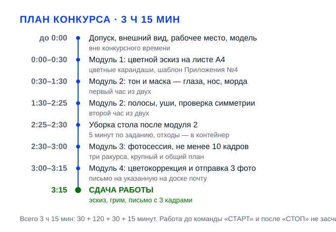
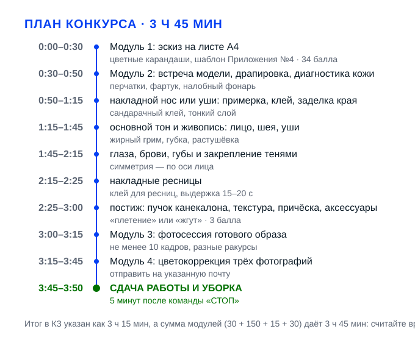
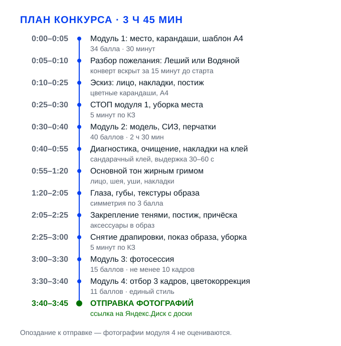

Художник по гриму (Р)
Задания ниже — официальные файлы «Абилимпикс» (источник: abilympics-russia.ru), разложенные по категориям. Решения написаны по тексту задания, регламенту и критериям оценки; в них указано, что именно проверяет эксперт.
Школьник
14–16 лет, базовый уровень заданияВыдержка из официального конкурсного задания: страницы, относящиеся к категории «Школьник» (стр. 7–11 источника).
Пошаговое решение
Задание категории «Школьники» — грим животного по заказу «Российского общества защиты и сохранения редких и исчезающих животных»: рекламная кампания 2026 года в поддержку амурского тигра. Работа разбита на четыре модуля и укладывается в 3 часа 15 минут: 30 минут на цветной эскиз на листе А4, 2 часа на аквагрим на модели, 30 минут на фотографии готового образа и 15 минут на цветокоррекцию трёх кадров разного ракурса. Модель участник выбирает сам, ей должно быть больше четырнадцати лет, а перед модулем на её коже не должно быть никакой декоративной косметики. Ниже задание разложено на пять задач: от допуска и подготовки места до письма с тремя обработанными фотографиями. Два момента решают исход: эскиз должен читаться как план работы, а грим — совпадать с эскизом, потому что оценивают и то, и другое, а фотографии должны показывать результат так, чтобы его можно было поставить на обложку.

Задача 1. Пройти допуск, подготовить место и принять модельДо старта · Модули 1–2 · общий лимит 3 ч 15 мин
До команды «СТАРТ» на площадке нужно успеть три вещи: самому соответствовать требованиям к участнику, разложить инструменты так, чтобы в первые десять минут ничего не искать, и принять модель — посадить её удобно, проверить возраст и чистоту кожи, проговорить замысел. Это подготовительная часть, но именно она определяет, хватит ли двух часов на аквагрим: каждая минута, потерянная на поиск кисти или на разговор о разрешении родителей, вычитается из времени работы над образом.
Действие 1.1. Пройти допуск и проверить внешний вид
Шаг 1.1.1
Надеваем чёрный комплект до входа на площадку: однотонные классические брюки, длина которых доходит до середины пятки, чёрную футболку или блузку, чёрные колготки либо носки и закрытую однотонную обувь без рисунка. Сверху — чёрный фартук мастера, завязанный так, чтобы завязки не свисали на лицо модели, когда вы наклоняетесь над креслом. Волосы убираем в пучок или косу и фиксируем так, чтобы ни одна прядь не падала вперёд при работе с краской.
Внешний вид участника в задании описан отдельным блоком требований: чистая отглаженная однотонная одежда чёрного цвета в классическом стиле, фартук, колготки или носки, закрытая обувь. Эксперт фиксирует это при допуске, до команды «СТАРТ», и спорить позже бессмысленно. Логика практическая: вы работаете вплотную к лицу человека, и любая свисающая деталь одежды или выбившаяся прядь — это краска, размазанная по щеке модели в самом конце модуля.
Проверьте себя в зеркале в полный рост: брюки чёрные и без потёртостей, обувь закрытая и однотонная, фартук завязан, колготки или носки чёрные. Наклонитесь над стулом, как будете наклоняться над моделью, — ничего не должно свисать вперёд. Отдельно проверьте, что на одежде нет принтов, вышивки и светлых молний.
Прийти в удобных джинсах и кроссовках, рассчитывая, что «фартук всё закроет», — фартук закрывает только перед, а брюки и обувь эксперт видит целиком. Вторая ошибка — надеть чёрную футболку с принтом или светлым логотипом: формально это уже не однотонная одежда. Третья — завязать фартук наспех, с длинными концами: они попадут в палитру с краской.
Эксперт осматривает участника до старта, стоя в двух шагах: смотрит обувь, длину брюк, фартук, отсутствие аксессуаров. Замечание делается сразу, и исправить его ещё можно, а после старта — уже нет.
Шаг 1.1.2
Волосы собраны в пучок или косу и держатся без шапочки и без фиксирующей повязки — они в задании запрещены. Снимаем кольца, браслеты, часы, длинные серьги и весь пирсинг: допускаются только маленькие серьги-гвоздики, не больше одной пары. Ногти стрижём коротко, свободный край не длиннее двух миллиметров, покрытие может быть любым, но лак не должен осыпаться. Разрешён дневной макияж, но не ярче того, что вы делаете модели.
Все эти пункты — из блока требований к участнику, и проверяются они на допуске, а не «в целом по ходу». Причина проста: вы работаете кистью у глаз и у рта, и обручальное кольцо или длинный ноготь оставляют на коже модели след, который придётся перекрывать тоном уже на последних минутах модуля. Пирсинг в брови или в губе при наклоне над лицом вообще цепляется за волосы модели, и это видно эксперту.
Проверьте руки: украшений нет, ногти короткие, покрытие целое. Проверьте голову: пучок держится, если резко наклониться, и ни одна прядь не выбивается у виска — именно там она чаще всего падает вперёд. Убедитесь, что на вас нет шапочки, повязки или ободка.
Оставить маленькое колечко «оно не мешает» — при работе у скулы оно снимает свежую краску и оставляет светлую полосу. Вторая ошибка — длинный ноготь с покрытием: он цепляет влажную краску у ресниц. Третья — прийти с шапочкой или повязкой, которые в задании прямо запрещены.
Эксперт смотрит на руки и голову в первые минуты допуска. Отдельно он отмечает, поправляет ли участник волосы или лицо руками по ходу работы: это нарушение гигиены, и оно видно без всяких измерений.
Шаг 1.1.3
Проверяем модель до старта: ей больше четырнадцати лет, а если меньше — у главного эксперта уже лежит письменное разрешение от родителей или законных представителей в произвольной форме. Смотрим на лицо: на коже не должно быть декоративной косметики, тона, пудры или блеска для губ. Если модель пришла накрашенной, не начинаем работу молча — подходим к эксперту и уточняем, где можно умыть модель до старта.
Требование к модели прописано в задании буквально: старше четырнадцати лет, разрешение родителей при более юном возрасте, чистая кожа лица перед модулем. Это не формальность — накрашенное лицо меняет и цвет, и текстуру, и ваш аквагрим ляжет пятнами, а оцениваться будет качественно выполненный грим животного, а не то, как краска легла поверх чужой пудры. Отсутствие разрешения — риск не допустить модель к площадке и потерять модуль целиком.
Возраст и документ проверены у эксперта до старта, а не в момент, когда модель уже сидит в кресле. Кожа модели матовая, без блеска и без следа тона на линии челюсти и у волос. Проведите ватным диском по скуле: на нём не должно остаться косметики.
Самая частая ошибка — увидеть, что модель пришла с тоном, и «просто перекрыть» его аквакраской: краска скатывается, тон проступает пятнами, и весь грим выглядит грязным. Вторая — не уточнить возраст и разрешение заранее: вопрос всплывает на площадке, когда времени на него уже нет.
Эксперт проверяет документы модели и её лицо до старта модуля. Если разрешения нет, модель к работе не допускают, и модуль теряется целиком — это самый дорогой из подготовительных промахов.
Действие 1.2. Собрать и разложить инструменты
Шаг 1.2.1
Раскладываем на столе аквакраски: белую, чёрную, рыжую или оранжевую и голубую — под амурского тигра хватает четырёх-пяти цветов. Ставим стакан с водой, чтобы она была чистой и менялась по ходу работы, кладём спонжи разного размера, кисти двух-трёх номеров, начиная от тонкой №1–2 для полос и кончая №8–10 для заливки. Рядом — бумажные полотенца, ватные диски, ватные палочки для исправлений и влажные салфетки.
Модуль на аквагрим идёт два часа, и половина потерь времени на площадке — это поиск нужной кисти в куче инструмента. Задание прямо требует разложить необходимые инструменты и материалы до старта, а оценивается в итоге качественно выполненный грим: тонкая кисть даёт чёткую полосу, спонж — мягкий переход, и одно другое не заменяет. Вода в грязном стакане смешивает цвета, и белый тигр получается серо-розовым.
На столе видно весь набор: краски открыты, кисти лежат ворсом в одну сторону и не касаются стола, стакан с водой полный и прозрачный. Проверьте каждую кисть на ладони: ворс не топорщится, у спонжа нет засохших комков краски от прошлого раза.
Взять три кисти «на всё» и обнаружить, что полоски на щеке получаются шириной в палец. Вторая ошибка — налить воду в высокий стакан и поставить его рядом с локтем: одно неловкое движение, и вода на палитре и на модели. Третья — работать старым засохшим спонжем, который крошится.
Эксперт подходит к столу до старта и смотрит, разложены ли инструменты по зонам и в каком они состоянии. Грязные кисти и мутная вода — первый признак, что участник не готов работать два часа подряд.
Шаг 1.2.2
Отдельной зоной кладём гигиену: антисептик для рук, нитриловые перчатки по размеру, одноразовую драпировку или пеньюар для модели, бумажные полотенца и пакет для отходов. Ставим на стол зеркало так, чтобы модель видела себя, не вставая, и рядом — налобный фонарь для дополнительного освещения. Пакет для мусора крепим к столу или ставим на пол у ножки, чтобы не искать его после команды «СТОП».
Порядок в задании описан пошагово: санитарная обработка рук, фартук мастера, драпировка модели в СИЗ, одноразовые перчатки после старта. Это и есть критерий организации работы: эксперт видит, работает ли участник как мастер, а не как художник на пленэре. Налобный фонарь в задании рекомендован отдельно, и не зря — верхний свет в зале даёт тени под бровями и под носом, а именно там у тигра самые тонкие линии.
Проверьте, что перчатки вашего размера и надеваются одной рукой, драпировка развёрнута и не валяется комком, пакет для отходов открыт. Включите фонарь и посветите на спинку стула: пятно света должно попадать туда, где будет лицо модели, а не на её плечо.
Надеть драпировку уже после старта, потратив на это пять минут из двух часов. Вторая ошибка — положить пакет для отходов в дальний конец стола: использованные спонжи и ватные диски копятся под рукой и пачкают палитру. Третья — не проверить фонарь, который садится в середине модуля.
Эксперт оценивает организацию рабочего места визуально, одним взглядом на стол: есть ли зоны, есть ли СИЗ, есть ли куда складывать отходы. Проверка идёт до старта, пока стол ещё не тронут работой.
Шаг 1.2.3
Ставим кресло или стул так, чтобы модель сидела лицом к свету и вам было удобно подходить с обеих сторон: если работать только справа, левая половина маски получится с другим наклоном кисти. Проверяем высоту сиденья — ваши руки должны доходить до лица модели без наклона корпуса, иначе через сорок минут начнёт тянуть спину, а кисть потеряет точность. Освобождаем проход: за спиной не должно быть сумок и проводов.
Симметрия — первое, что видит эксперт в гриме тигра: полосы на одной щеке должны повторять полосы на другой. При неудобной посадке участник невольно поворачивает голову модели к себе, а вместе с ней уезжает и вся разметка. Два часа непрерывной работы у лица — это ещё и про выносливость: удобная высота кресла экономит силы, которые понадобятся в последние двадцать минут, когда делаются тонкие детали.
Сядьте на место модели: свет падает на лицо, а не сбоку, вам видно оба глаза без наклона. Пройдите вокруг кресла — с обеих сторон есть место для руки и кисти. Проверьте, что до палитры и до воды вы дотягиваетесь, не вставая.
Поставить кресло спиной к окну: лицо модели в тени, и вы красите «на ощупь», а на фото в модуле 3 грим окажется тусклым. Вторая ошибка — работать в тесноте, задевая локтем соседний стол. Третья — поставить воду так, что за ней надо тянуться через палитру.
Эксперт смотрит, как организовано место: удобно ли подходить к модели с двух сторон, не мешает ли участник соседям. Теснота и тень от собственной спины — типичные причины неровной работы.
Действие 1.3. Принять модель и согласовать образ
Шаг 1.3.1
Встречаем модель у входа на площадку, называем себя и провожаем к креслу, а не показываем рукой «туда». Помогаем разместиться: поправляем спинку, подставляем подставку под ноги, убираем волосы модели под повязку или заколку, если они закрывают лоб и уши. Спрашиваем прямо: удобно ли сидеть, не давит ли спинка, не мешает ли свет в глаза. Держимся на уровне её глаз, не нависая сверху.
В задании эта часть описана дословно: встретить модель, пригласить в кресло, помочь разместиться, дружелюбно поинтересоваться, испытывает ли она комфорт. Это оценивается как коммуникация с клиентом, и это же условие качества: модели, которой неудобно, начинают ерзать, и тон ложится неровно. Спокойная модель не моргает и не крутит головой в самый ответственный момент — когда вы ведёте тонкую линию у глаза.
Модель сидит ровно, спина на спинке, ноги стоят на подставке, волосы убраны со лба и ушей. Спросите и дождитесь ответа, а не спрашивайте для вида: если модель говорит, что свет бьёт в глаза, разверните кресло на десять градусов.
Молча указать на кресло и начать раскладывать краски: модель садится как получится, с зажатыми плечами, и к середине модуля начинает отводить голову. Вторая ошибка — не убрать волосы модели: они попадают в краску у виска, и на фото это видно как грязное пятно.
Эксперт слушает, как участник разговаривает с моделью: здоровается ли, спрашивает ли о комфорте, объясняет ли, что будет делать. Тон и внимание к человеку здесь оцениваются наравне с техникой.
Шаг 1.3.2
Проговариваем модели заказ своими словами: кампания в поддержку амурского тигра, образ должен быть узнаваемым и журнальным, а не пугающим. Показываем эскиз и объясняем, где пройдут границы: маска займёт лоб, глаза, нос и щёки, шея останется в тоне, уши — по желанию. Уточняем аллергии и чувствительность кожи, спрашиваем, красила ли модель лицо аквагримом раньше.
Заказчик в этом задании — общественная организация, которой нужна реклама животного, и соответствие пожеланиям заказчика — отдельный критерий, по которому смотрят и эскиз, и готовый грим. Если модель не понимает, что вы делаете, она будет сопротивляться на этапе глаз и морды, а объяснение заранее снимает половину проблем. Вопрос про аллергию — не вежливость: аквакраска на чувствительной коже даёт покраснение за десять минут.
Модель может пересказать образ своими словами и согласна с границами маски. Вы знаете про аллергии и предыдущий опыт, а на руке модели или на её скуле сделан маленький тест-мазок краски, который не покраснел за пару минут.
Начать с фразы «сейчас будет тигр» и удивить модель чёрными полосами на всё лицо: человек зажмуривается, отстраняется, и работать становится невозможно. Вторая ошибка — не спросить про аллергию и увидеть покраснение уже после того, как половина маски нанесена.
Эксперт обращает внимание, умеет ли участник объяснить замысел и услышать модель. Расхождение между эскизом и тем, что участник обещает модели, он тоже замечает.
Шаг 1.3.3
За минуту до старта проверяем по кругу: перчатки под рукой, вода налита, драпировка развёрнута, эскиз стоит перед глазами, фонарь на голове выключен. Убираем со стола всё, что не нужно в модуле: телефон, чехлы, личные вещи — в сумку под стол. Слушаем команду «СТАРТ» и только после неё надеваем перчатки и берём первый спонж. Проверьте, что эскиз не закрыт палитрой и стоит вертикально.
Порядок в задании привязан к командам: до «СТАРТ» — подготовка, после — работа, после «СТОП» — пять минут на уборку. Начинать красить раньше команды нельзя, это нарушение процедуры, а искать перчатки после команды — потеря темпа на ровном месте. Эскиз перед глазами нужен потому, что за два часа вы неизбежно начнёте импровизировать, и без опоры на рисунок маска уедет от замысла.
Всё, что нужно в первые десять минут, лежит в пределах вытянутой руки: перчатки, спонж, вода, белая краска. Личные вещи убраны, стол свободен. Вы слышите команду и понимаете, какой элемент делаете первым.
Начать наносить тон до команды «СТАРТ», чтобы сэкономить время: это фиксируется как нарушение, и время всё равно не засчитывается. Вторая ошибка — оставить эскиз в сумке: через час работы вы уже не помните, где именно проходила граница рыжего пятна.
Эксперт следит за соблюдением процедуры и за тем, готова ли участница к старту. Работа до команды — отдельное замечание, которое потом переносится в протокол.
Задача 2. Выполнить цветной эскиз будущего аквагримаМодуль 1 · 30 минут · лист А4, цветные карандаши
Первый модуль — тридцать минут на лист А4 и цветные карандаши. Результат, который оценивают: качественно выполненный цветной эскиз с учётом пожеланий заказчика, где хорошо видно расположение всех декоративных элементов будущего грима. Этот лист работает дважды: как оцениваемая работа и как план на два часа аквагрима, поэтому в нём важны не художественные достоинства, а точность — границы маски, порядок элементов и палитра, которую можно повторить теми красками, что лежат на столе.
Действие 2.1. Разобрать заказ и выбрать композицию
Шаг 2.1.1
Берём лист А4 и в верхнем углу, мелко, выписываем для себя три строки: заказчик — кампания в поддержку амурского тигра, техника — аквагрим, формат — маска на лице модели. Добавляем четвёртую строку: что должно быть видно на эскизе, а именно расположение всех декоративных элементов — глаз, носа, морды, полос, усов. На всё про всё — три-четыре минуты из тридцати.
Модуль 1 оценивается по формулировке задания: на листе А4 качественно выполненный цветной эскиз будущего грима с учётом пожеланий заказчика, и на рисунке должно быть хорошо видно расположение всех декоративных элементов. Пока требования не выписаны, эскиз рисуется «вообще про тигра», а эксперт ищет в нём конкретику: где именно начинается полоса, какого она цвета, как переходит в белое. Три строки дешевле перерисовывания на двадцатой минуте.
На листе есть записи про заказчика, технику и обязательные элементы. Прочитайте их вслух: если из записи непонятно, что рисовать, — запись плохая. Убедитесь, что вы понимаете разницу между «тигр» и «амурский тигр»: у амурского светлый, почти белый фон шерсти и чёрные полосы.
Сразу начать рисовать красивую морду и на середине вспомнить, что эскиз должен показывать ещё и шею с тоном. Вторая ошибка — нарисовать бенгальского тигра с ярко-рыжим фоном: заказчик просил амурского, и это видно по палитре.
Эксперт смотрит эскиз после модуля и первым делом ищет в нём привязку к заказу: читается ли амурский тигр, есть ли все элементы. Записи в углу листа он тоже видит и оценивает как признак осмысленной работы.
Шаг 2.1.2
Решаем, как маска ляжет на лицо: центр — нос и переносица, глаза остаются человеческими, но обведены чёрным, лоб получает полосы, щёки — белые пятна с рыжей обводкой. Делим овал лица на зоны и отмечаем границы: где заканчивается маска у линии роста волос, где уходит на шею, доходят ли элементы до ушей. Рисуем овал лица в анфас — именно так модель будет выглядеть на фото в модуле 3.
Эскиз — это ещё и план работы: по нему вы потом поймёте, с чего начинать и где остановиться, когда останется двадцать минут. Анфас выбран не случайно: в модуле 3 нужны фотографии для обложки, а обложка читается лоб в лоб. Если на эскизе элементы заходят на уши и на шею, вы обязаны учесть это в тоне — задание требует нанести тон на лицо, шею и ушные раковины.
На эскизе видно, где именно проходит граница маски: линия обозначена, а не «примерно там». Все элементы — глаза, нос, морда, полосы, усы — имеют своё место, и ни один не выходит за овал лица случайно. Проверьте, что при взгляде на рисунок понятно, какой элемент главный.
Нарисовать красивую морду в профиль: на модели в анфас она не читается, и вы потеряете время, перестраивая композицию прямо на лице. Вторая ошибка — завести полосы на шею, но не наметить это на эскизе, а потом обнаружить, что тон на шее не сходится с лицом.
Эксперт оценивает, читается ли в эскизе лицо человека с гримом, а не просто рисунок животного. Композиция, где маска живёт отдельно от овала лица, считается слабой.
Шаг 2.1.3
Подбираем четыре-пять карандашей и проверяем их на черновике: белый или светло-серый как основа, чёрный для полос, рыжий или оранжевый для обводки пятен, голубой для холодных теней. Строим переходы так, как они лягут краской: от белого через тёплый бежевый к рыжему, без резкой границы. На эскизе сразу показываем, где переход мягкий, а где линия чёткая.
В задании отдельно сказано: цветовые сочетания должны соответствовать натуральному образу и иметь физиологические переходы. Это значит, что эксперт смотрит не на яркость, а на то, можно ли такое получить на коже: аквакраска прозрачна, и резкая граница двух цветов на щеке будет выглядеть как наклейка. Натуральность у амурского тигра строится на светлом фоне и чёрных полосах, а рыжий работает только как обводка и подтон.
Посмотрите на эскиз, отойдя на два шага: переходы не выглядят ступеньками, полосы не сливаются в одно чёрное пятно. Проверьте себя вопросом, можно ли это повторить теми красками, что лежат на столе, — если для эскиза понадобился цвет, которого нет, рисунок вас обманывает.
Взять кислотно-оранжевый и залить им пол-лица: на коже такой цвет даст мультяшного тигра, а не амурского, и переходов не будет вовсе. Вторая ошибка — сделать все полосы одинаковой толщины и одинаковой черноты, тогда маска становится плоской.
Эксперт сравнивает палитру эскиза с готовым гримом в модуле 2. Если на бумаге одни цвета, а на лице другие, это читается как неумение планировать работу.
Действие 2.2. Нарисовать эскиз на листе А4
Шаг 2.2.1
Берём лист А4 и, если разрешено, используем шаблон из Приложения №4: он уже даёт овал лица в нужных пропорциях. Если шаблона под рукой нет, рисуем овал легко, без нажима, делим его вертикальной осью симметрии и двумя горизонталями — линия глаз и линия носа. Намечаем уши и линию подбородка, чтобы понимать, куда уйдут крайние элементы. Разметку ведём очень легко, почти не касаясь бумаги.
Шаблон в задании разрешён прямо, и это экономия пяти минут из тридцати — времени, которого в первом модуле мало. Оси нужны для симметрии: полосы на правой и левой щеке должны быть зеркальными, а на глаз это сделать невозможно. Линия подбородка и уши на разметке спасают от типичной ошибки, когда маска съезжает вниз и упирается в шею.
Овал ровный, оси проведены тонко и не мешают рисунку, пропорции лица человеческие: расстояние между глазами примерно равно ширине одного глаза. Проверьте, что вертикальная ось действительно делит овал пополам — приложите лист к свету и сложите пополам, если сомневаетесь.
Рисовать сразу в цвет, без осей: одна щека получается шире другой, и на модели это повторяется. Вторая ошибка — сильно давить на карандаш при разметке: линии потом не стереть, и эскиз выглядит грязным.
Эксперт смотрит на пропорции и на симметрию разметки. Кривая ось — сигнал, что и на лице полосы лягут с перекосом. Он же смотрит, хватило ли места для всех элементов на листе.
Шаг 2.2.2
Обводим контуром главное: линию глаз, спинку носа, контур морды вокруг рта и подбородка, границы белых пятен на щеках. Работаем тонким карандашом, линии ведём короткими штрихами от себя, а не длинными петлями. Пятна намечаем лёгкой штриховкой, оставляя середину светлой: там потом ляжет белый. Каждую линию доводим до конца, не обрывая на середине: обрыв потом читается как грязь.
Эскиз должен показывать расположение всех декоративных элементов, и контур — это единственный способ показать его однозначно. Светлая середина пятна нужна потому, что на коже белый цвет наносится первым, а рыжая обводка идёт по краю; если на бумаге пятно залито ровно, вы потом на лице забудете про объём. Короткие штрихи дают ровную линию без хвостов, которые читаются как грязь.
Отойдите от листа на два шага: контур читается, элементы не сливаются. Проверьте, что у каждого пятна есть внутренняя светлая зона, а у каждой линии — своё назначение. Пятна симметричны относительно вертикальной оси.
Обвести всё жирно и одинаково: рисунок становится плоским, и на лице вы повторите ту же ошибку — все линии одной толщины. Вторая — залить пятна полностью, без светлой середины: на коже такой грим выглядит как аппликация.
Эксперт проверяет, видны ли на эскизе границы элементов и их взаимное расположение. Плоский рисунок без внутренней структуры он оценивает ниже, даже если тот аккуратный.
Шаг 2.2.3
Вводим цвет: светло-серым или белым проходим фон маски на лбу, вокруг глаз и на морде, рыжим обводим края белых пятен и добавляем подтон на скулах, чёрным делаем полосы — от спинки носа к вискам, на щеках и на подбородке. Полосы ведём по направлению роста шерсти: на лбу вверх, на щеках вниз и назад. Переходы делаем штриховкой в два слоя — сначала лёгкий, потом плотнее у края.
Здесь набирается главный результат модуля 1 — качественно выполненный цветной эскиз: цвет должен читаться и быть натуральным. Направление полос не украшение: у тигра рисунок повторяет направление шерсти, и если на эскизе полосы лежат поперёк, эксперт видит, что участник не смотрел на животное. Два слоя штриховки дают тот самый физиологический переход, которого требует задание.
Смотрите на эскиз издалека: тигр узнаётся сразу, без подписи. Проверьте три вещи — белый фон не спорит с рыжим, чёрные полосы не сливаются в пятно, переходы не имеют резких ступенек. Сравните с референсом амурского тигра, если он есть в приложении.
Сделать полосы поперёк щеки, чтобы было виднее: на фото это читается как шрамы, а не как тигр. Вторая ошибка — закрасить чёрным слишком много: маска теряет светлый фон, который у амурского тигра главный. Третья — оставить резкие границы цветов.
Эксперт оценивает цветовое решение: натуральность, переходы, соответствие животному. Именно на этом пункте видно, рисовал участник с натуры или по памяти.
Шаг 2.2.4
Вокруг овала, на свободном поле листа, мелко подписываем зоны и порядок работы: сначала тон, потом белый фон маски, потом чёрные полосы, потом тонкие детали — усы, точки на морде, обводка глаз. Ставим против каждого этапа примерное время: тон — пятнадцать минут, фон — двадцать, полосы — тридцать, детали — двадцать. Последняя строка — резерв десять минут на исправления и фото.
Два часа модуля 2 — это не «сколько получится», а конкретный бюджет, и эскиз с подписями превращается в шпаргалку, к которой можно вернуться, когда до конца останется полчаса. Задание требует выполнить грим согласно своему эскизу, и подписанный порядок этапов помогает не потерять ни один элемент. Резерв в конце нужен всегда: исправления занимают больше времени, чем кажется.
Подписи читаются, этапы идут в правильном порядке, сумма времени укладывается в сто двадцать минут с запасом. Проверьте, что ни один элемент с рисунка не остался без этапа: если на эскизе есть точки на морде, в плане должна быть строка про точки.
Нарисовать красивый эскиз и не оставить в плане времени на детали: в результате полосы есть, а морда не доделана, и это видно на фото. Вторая ошибка — расписать план на ровные сорокаминутные блоки, не учитывая, что тон сохнет.
Эксперт видит подписи и оценивает, есть ли у участника план. Работа, где эскиз и готовый грим совпадают по элементам, получает больше, чем работа по мотивам.
Действие 2.3. Проверить эскиз, сдать лист и убрать стол
Шаг 2.3.1
Кладём эскиз перед собой и проверяем по четырём пунктам: видно расположение всех элементов, цвета натуральные, переходы плавные, образ соответствует заказу — амурский тигр для рекламной кампании. Отходим на два шага и смотрим как на плакат: читается ли тигр с расстояния. Если что-то не читается, правим резинкой именно это место, а не перерисовываем весь лист.
Оценка модуля 1 идёт по готовому листу, и проверка занимает три минуты против тридцати, отпущенных на весь модуль. Четыре пункта — это ровно те формулировки, что стоят в задании: качественный цветной эскиз, все декоративные элементы, соответствие пожеланиям заказчика, физиологические переходы. Отойти на два шага важно потому, что вблизи рисунок всегда кажется лучше, чем он есть.
Пройдитесь по пунктам вслух: элементы видны, цвета натуральные, переходы плавные, заказ узнаётся. Спросите себя, сможет ли другой человек по этому листу повторить грим — если нет, значит, чего-то не хватает. Проверьте, что на листе нет лишних надписей и клякс.
Оставить эскиз как получилось и потратить оставшиеся минуты на дорисовывание ресниц: главное — читаемость, а не детализация. Вторая ошибка — начать перерисовывать лист целиком за пять минут до «СТОП»: не успеете, а старый вариант уже испорчен.
Эксперт смотрит эскиз целиком, а не фрагменты, и первым делом проверяет, можно ли по нему выполнить грим. Красивый, но неконкретный рисунок он оценивает ниже точного и простого.
Шаг 2.3.2
После команды «СТОП» кладём карандаши в пенал, смахиваем крошки от точилки в мусор, лист кладём на обозначенное место для сдачи — обычно это край стола или отдельная папка. Убираем резинку и точилку, протираем стол, если остались следы грифеля. На уборку в задании даётся пять минут, и в них входит весь стол, а не только рисунок. Крошки смахиваем в мусор, а не на пол.
Пять минут на уборку после «СТОП» прописаны в задании отдельно, и это время не входит в тридцать минут модуля. Порядок на столе — часть оценки организации, а потерянный лист или лист, сданный не туда, обнуляет работу всего модуля: рисунка нет — оценивать нечего. Крошки от точилки на столе выглядят как небрежность и переносятся на следующий модуль.
Стол чистый, карандаши в пенале, лист на месте сдачи и подписан, если подпись требуется. Проверьте, что эскиз не помят и не залит водой. Убедитесь, что ваши инструменты не остались на чужой половине стола.
Оставить лист на столе и уйти пить воду: его могут сдвинуть, а эксперту нужно понять, чья это работа. Вторая ошибка — сдать эскиз, не подписав, если подпись предусмотрена. Третья — оставить крошки и открытую точилку: мелочь, но она видна.
Эксперт забирает эскизы после модуля и сверяет их с работами модуля 2. Порядок на столе он отмечает в момент уборки. Сданный не на место лист он считает потерей работы.
Задача 3. Выполнить аквагрим амурского тигра на моделиМодуль 2 · 2 часа · аквагрим по эскизу
Два часа на аквагрим — самый большой модуль чемпионата, и он распадается на четыре слоя работы: подготовка кожи, основной тон на лицо, шею и уши, маска тигра с глазами, носом и полосами, и завершение образа с проверкой симметрии. Оценивается качественно выполненный грим животного, соответствующий пожеланию заказчика, поэтому порядок слоёв нарушать нельзя: тон на влажную кожу не ляжет, а полосы поверх невысохшего тона поплывут. Держите эскиз перед глазами и работайте по подписанному плану — тогда к концу времени образ будет собран целиком, а не наполовину.
Действие 3.1. Подготовить руки и кожу модели
Шаг 3.1.1
После команды «СТАРТ» обрабатываем руки антисептиком и даём им высохнуть на воздухе, не вытирая о фартук. Надеваем нитриловые перчатки, расправляя каждый палец, чтобы на подушечках не было складок: складка на указательном пальце сбивает нажим кисти. Меняем перчатки, если порвались или если на них попало много краски, — запас лежит рядом. Антисептик наносим на сухие руки, иначе он разбавлен.
Порядок в задании начинается именно с этого: санитарная обработка рук, фартук мастера, одноразовые перчатки после старта. Это санитарный блок, и он проверяется по факту: эксперт видит, надел ли участник перчатки до первого касания кожи. Складка на пальце — не мелочь: через неё кисть идёт с двойным нажимом, и тонкая полоса у глаза получается с узлом.
Перчатки сидят по размеру, на подушечках нет складок, ногти не прорывают материал. Руки не касались ничего, кроме чистого инструмента. Если перчатка порвалась — вы это заметили до того, как взяли кисть.
Работать без перчаток, потому что так аккуратнее чувствуется: это прямое нарушение санитарного требования, и баллы снимаются независимо от качества грима. Вторая ошибка — надеть перчатки, но поправить ими волосы или лицо: перчатка становится переносчиком.
Эксперт смотрит на руки участника в первые секунды модуля и потом выборочно по ходу работы: есть ли перчатки, целые ли они, меняются ли. Смена перчаток по ходу работы тоже учитывается.
Шаг 3.1.2
Садимся напротив модели и осматриваем кожу при свете фонаря: смотрим на Т-зону, на щёки, на крылья носа, отмечаем сухие участки, шелушение, расширенные поры, покраснения и любое повреждение — царапину, прыщик, след от очков. Просим модель сказать, есть ли стянутость или жжение. По результату решаем, что делать с тоном: на сухой коже краска ложится пятнами, на жирной скатывается.
В задании диагностика стоит отдельным шагом: провести диагностику кожи лица клиента и согласно диагностике подобрать очищающее косметическое средство. Это не ритуал — от типа кожи зависит и очищение, и плотность тона, и то, сколько слоёв краски выдержит лицо. Повреждение кожи, замеченное заранее, спасает от неприятного разговора: краска на царапину не наносится, её обходят.
Вы можете назвать тип кожи модели одной фразой и объяснить, что из этого следует для работы. Все повреждения и покраснения отмечены и обойдены в плане. Модель подтвердила, что не чувствует стянутости и жжения.
Пропустить диагностику и сразу нанести тон: на сухой коже он собирается в чешуйки, а на жирной через сорок минут поплывёт в складках у носа. Вторая ошибка — не заметить царапину и залить её краской: модель почувствует жжение, и работа остановится.
Эксперт слушает, как участник описывает кожу модели и что из этого следует. Формальная фраза «кожа нормальная» без осмотра его не убеждает. Вопросы о типе кожи он задаёт в начале модуля.
Шаг 3.1.3
Подбираем очищающее средство под тип кожи: мягкую пенку или мицеллярную воду для сухой и чувствительной, гель для жирной. Наносим на ватный диск, ведём по массажным линиям — от середины лба к вискам, от носа к ушам, от подбородка вверх, — не растягивая кожу. Затем тоником на другом ватном диске проходим всю поверхность лица и открытые участки шеи, меняя диски до тех пор, пока диск не останется чистым.
Задание перечисляет это дословно: подобрать очищающее средство, нанести тоник на ватный диск, обработать всю поверхность кожи лица и открытых поверхностей шеи. Смысл в том, что аквакраска ложится только на чистую кожу: тонкий слой кожного жира или пыли даёт неровный тон и скатывание. Шея обрабатывается не за компанию — на неё тоже пойдёт тон, и граница должна быть чистой.
Последний ватный диск чистый, кожа матовая и без липкости. Шея обработана до линии воротника, уши и за ушами протёрты. Модель не жалуется на жжение, покраснений после очищения нет. Кожа после тоника прохладная, без блеска.
Протереть лицо по кругу одним диском: грязь размазывается обратно. Вторая ошибка — не обработать шею, а потом нанести на неё тон: краска ляжет на пыль, и будет видна граница. Третья — использовать средство не по типу кожи.
Эксперт смотрит на сам процесс: меняются ли диски, обрабатывается ли шея, не растягивается ли кожа. Здесь же он отмечает, подобрано ли средство по диагностике.
Действие 3.2. Нанести основной тон
Шаг 3.2.1
Смачиваем спонж в воде и отжимаем о край стакана так, чтобы он был влажным, но не тёк. Набираем краску круговым движением по поверхности, не протыкая её до дна, и растираем на палитре до состояния густой сметаны: краска должна тянуться, а не капать. Пробуем на тыльной стороне своей кисти: след должен быть плотным и ровным, без комков. Палитру держим слева от модели, чтобы не тянуться через её лицо.
Аквагрим — это краска на водной основе, и её поведение целиком зависит от количества воды. Слишком мокрый спонж даёт потёки и разводы, слишком сухой — крошку и неровный тон; в обоих случаях качественно выполненный грим не получается. Проверка на своей руке экономит минуту и спасает от исправления тона на лице модели, где исправлять придётся уже с риском смазать соседние зоны.
Краска на палитре блестит и держит форму, при наборе на спонж не капает. След на руке ровный, без крупинок и без просветов. Вода в стакане прозрачная, спонж не плавает в ней. Спонж при отжиме не капает, а только блестит.
Макать сухой спонж прямо в банку и скрести краску: на лице получаются крошки, которые потом видны на фото как грязь. Вторая ошибка — налить слишком много воды: тон течёт по щеке, и приходится всё снимать.
Эксперт смотрит на палитру и на первый мазок: консистенция краски — это техника. Разведённая водичка вместо тона читается сразу. Разведённая краска и грязная вода — одна и та же ошибка.
Шаг 3.2.2
Наносим основной тон спонжем от центра лица к периферии: лоб, щёки, нос, подбородок, затем шея и ушные раковины. Движения — лёгкие примакивания и растирание, а не размазывание: так краска ложится ровным слоем. У линии роста волос и у бровей проходим краем спонжа, чтобы не залезть в волосы, а на шее сводим тон к линии воротника постепенно, без резкой границы.
Задание требует нанести основной тон на все открытые поверхности кожи лица, шеи и ушных раковин — то есть тон не заканчивается на подбородке. На фотографии в модуле 3 резкая граница на шее выглядит как маска, натянутая на лицо, и это первое, что бросается в глаза на обложке. Примакивания вместо размазывания нужны потому, что аквакраска при растирании сохнет неровно и оставляет полосы.
Тон ровный, без полос и просветов, одинаково читается на лбу, на щеках и на шее. Границы у волос и у бровей чистые. Посветите фонарём сбоку: при боковом свете видно, где слой легче, — там и добавьте краски.
Красить только лицо, оставив шею чистой: на фото получается отрезанная голова. Вторая ошибка — залезть краской в волосы и в брови: отмыть их потом нечем, и на снимках видно тёмные пятна. Третья — нанести слишком толстый слой, который трескается при мимике.
Эксперт осматривает тон при боковом свете и проверяет шею с ушами. Неровный тон на шее — типичная потеря баллов у школьников. Границу тона на шее он проверяет при дневном свете, а не под лампой.
Шаг 3.2.3
Даём тону подсохнуть две-три минуты, не обмахивая модель руками и не поднося фен: поток воздуха сдувает крапинки и сушит краску неравномерно. Проверяем результат тыльной стороной кисти — краска не должна липнуть. Если где-то остался слой толще, аккуратно снимаем излишек сухим спонжем, а не водой. Если краска всё же липнет, подождите ещё минуту: спешка здесь дороже, чем кажется.
На влажный тон декоративные элементы ложатся с размытой границей: чёрная полоса расплывается в рыжем фоне, и вместо чёткой линии получается грязное пятно. Пауза на сушку — это часть технологии, и она дешевле, чем переделка половины маски. Снимать излишек водой нельзя: вода размывает уже нанесённый слой и оставляет светлое кольцо.
При касании тыльной стороной кисти краска не липнет и не блестит. Слой одинаковый по толщине, без наплывов у носа и на подбородке. Модель может спокойно улыбнуться — тон не трескается по складкам. Слой не блестит.
Начать рисовать полосы сразу после тона: они поплывут, и вернуть чёткость уже не получится. Вторая ошибка — сушить феном на горячем режиме: краска схватывается коркой и потом осыпается. Краска сохнет быстрее, чем кажется.
Эксперт проверяет, выдержана ли пауза и как выглядит слой до декоративных элементов. Именно на этом этапе видно, понимает ли участник, что аквагрим — послойная техника.
Действие 3.3. Смоделировать маску тигра
Шаг 3.3.1
Берём тонкую кисть и светлой краской намечаем оси: вертикаль от середины лба через спинку носа к подбородку и горизонталь через зрачки. Отмечаем точки-ориентиры для полос: у внутреннего угла брови, над серединой брови, у виска, на скуле, на подбородке. Сначала ставим точки на одной стороне, потом зеркально повторяем на другой, глядя на модель прямо, а не сбоку.
Симметрия — главный признак профессиональной маски: у тигра рисунок на обеих половинах морды зеркальный. Разметка точками решает проблему, которая неизбежна при работе на глаз: вы смотрите на модель под углом и невольно сдвигаете элементы к себе. Задание требует выполнить грим согласно эскизу, а эскиз нарисован в анфас — значит, и разметку надо вести в анфасе.
Отойдите на полметра и посмотрите модели в лицо прямо: точки слева и справа расположены зеркально. Проверьте вертикаль: она проходит через середину лба, кончик носа и середину подбородка. Если модель повернула голову — попросите вернуть ровно, а не подстраивайтесь.
Размечать, стоя сбоку: одна половина получается шире другой, и это видно на любом фото. Вторая ошибка — рисовать сразу полосы без точек: к третьей полосе рисунок уезжает вниз. На фото это видно сразу, и переделать уже нечем.
Эксперт смотрит на лицо модели строго анфас и проверяет симметрию. Асимметрия в маске тигра — самый заметный дефект. Отдельно он смотрит, держит ли участник голову модели ровно во время разметки.
Шаг 3.3.2
Обводим глаза чёрным: линию ведём по верхнему веку от внутреннего угла к внешнему, чуть поднимая хвостик к виску, и добавляем тонкую линию по нижнему веку, не заходя на слизистую. Вокруг глаза оставляем светлое поле — белым или светло-серым, — чтобы глаз читался как глаз тигра, а не тонул в чёрном. Хвостик вытягиваем на треть длины брови, не дальше.
Глаза — центр маски: на обложке журнала взгляд читается первым, и именно вокруг глаз эксперт смотрит аккуратность. Светлое поле вокруг глаза нужно потому, что у амурского тигра вокруг глаз шерсть светлая, и без него чёрная обводка превращается в боевую раскраску. Длина хвостика ограничена: слишком длинная стрелка уводит образ в кошачий макияж, а заказ просил животное.
Глаза симметричны по толщине линии и по длине хвостика. При закрытых глазах обводка не отпечатывается на веке. Посмотрите на модель в зеркало: взгляд читается, белое поле вокруг глаза не затёрто чёрным.
Обвести глаз жирным чёрным кольцом: он проваливается, и модель выглядит уставшей. Вторая ошибка — вести линию по слизистой: краска попадает в глаз, модель плачет, и вся работа вокруг глаза смазывается.
Эксперт подходит близко и смотрит линию у глаза: ровная ли она, не рваная ли, симметричны ли хвостики. Здесь видно, насколько твёрдая у участника рука.
Шаг 3.3.3
Рисуем нос: чёрный треугольник с мягкими скруглёнными углами на кончике носа, сверху короткая вертикальная линия к переносице. От носа вниз к верхней губе ведём две дуги — это контур морды, — и внутри оставляем светлое поле. Усы ставим тонкой кистью: по три-четыре коротких штриха с каждой стороны, расходящихся веером, и несколько точек-вибрисс на морде над губой.
Нос и морда — то, что делает маску узнаваемой даже на маленьком фото в ленте. Задание требует доработать образ, выполнив основные декоративные элементы, и морда относится к основным: без неё остаётся абстрактная полосатость. Тонкая кисть для усов обязательна: спонжем или толстой кистью штрих получается размытым, и вместо усов выходит серое пятно.
Нос симметричен, его кончик совпадает с кончиком носа модели, дуги морды не заходят на губы. Усы одинаковой длины с двух сторон и расходятся веером, а не лежат параллельно. Точки-вибриссы не сливаются в линию.
Нарисовать нос выше или ниже настоящего: маска съезжает, и на фото видно два носа. Вторая ошибка — вести усы через губы: модель начинает облизываться, и краска стирается. Третья — слишком густые усы, которые закрывают морду.
Эксперт смотрит, совпадают ли нарисованные элементы с анатомией лица модели. Смещённый нос — грубая ошибка, которую видно сразу. Пропорции морды он сравнивает с эскизом.
Шаг 3.3.4
Кладём чёрные полосы по разметке: на лбу — три-четыре коротких вертикальных штриха, расходящихся от центра вверх; на щеках — по три полосы, идущих от скулы вниз и назад; на подбородке — две короткие полосы к шее. Толщину ведём от основания к концу: у корня полоса шире, к концу сужается, край делаем чуть рваным, чтобы не было наклеенных прямоугольников. Между полосами обязательно оставляем светлый фон.
Полосы — это и есть тигр: по ним образ узнаётся мгновенно, и по ним же видно качество работы. Рваный, сужающийся край повторяет натуральный рисунок шерсти, а ровный прямоугольник читается как трафарет. Светлый фон между полосами критичен для амурского тигра: у него полосы редкие и тонкие, в отличие от бенгальского, и плотная чёрная заливка сразу делает образ не тем.
Отойдите на два шага: полосы читаются как шерсть, а не как штрихи маркером. Проверьте, что полосы не пересекаются и не сливаются, а светлый фон между ними сохранился. Симметрия проверяется анфас: количество и направление полос слева и справа совпадают.
Сделать все полосы одинаковой толщины и ровными, как линейкой: маска выглядит нарисованной, а не живой. Вторая ошибка — залить чёрным слишком много, чтобы точно был тигр: образ становится мрачным, и заказчик такой грим не примет.
Эксперт оценивает рисунок полос: направление, толщину, естественность края. Именно здесь видно, смотрел ли участник на фотографии животного. Считает полосы на обеих щеках.
Действие 3.4. Завершить образ и сдать модель
Шаг 3.4.1
Добавляем верх образа: на лбу между полосами ставим светлые мазки, у висков рисуем короткие бакенбарды — три-четыре тонких штриха вниз по росту волос. Если по эскизу уши входят в образ, тонируем ушные раковины и наносим на них светлый мазок с чёрной обводкой по краю, работая кистью осторожно, без воды. Завершаем контур маски у линии роста волос, чтобы не было видно, где заканчивается краска.
Образ должен читаться целиком, а не фрагментом вокруг глаз: задание говорит о полноценном образе животного, и лоб с висками в него входят. Уши — самая заметная часть на фотографии в три четверти, и если они остались чистыми, маска выглядит как надетая на лицо наклейка. Мягкий контур у линии роста волос нужен, чтобы граница краски не бросалась в глаза.
Посмотрите на модель в три четверти и в профиль: переход от лица к вискам и ушам выглядит естественно, нет резкой границы. Светлые мазки на лбу не спорят с полосами. Уши прокрашены равномерно, без потёков.
Оставить уши нетронутыми: на фото в профиль сразу видно маску до ушей. Вторая ошибка — нанести на уши слишком много воды: краска течёт по шее и пачкает тон. Третья ошибка — обвести ухо чёрным по краю слишком толсто: вместо уха получается колесо.
Эксперт обходит модель и смотрит на неё с трёх точек: анфас, три четверти и профиль. Незакрытые зоны он отмечает как незавершённость образа. Смотрит и затылок с висками.
Шаг 3.4.2
Ставим модель перед зеркалом, отходим на полметра и сравниваем половины лица: количество полос, толщину обводки глаз, положение носа и усов. Фотографируем лицо на телефон в анфас с расстояния около метра — на снимке перекос виден резче, чем вживую. Найденные расхождения исправляем тонкой кистью, добавляя краску на отстающую сторону, а не стирая лишнее.
Самопроверка по фото экономит баллы в двух модулях сразу: то, что вы исправите сейчас, не придётся спасать в цветокоррекции, а в модуле 4 времени всего пятнадцать минут. Глаз человека быстро привыкает к картинке и перестаёт видеть перекос, а снимок возвращает свежий взгляд. Добавлять краску проще, чем снимать: снять слой, не задев соседний, почти невозможно.
На фотографии в анфас полосы слева и справа совпадают по количеству и наклону. Линия глаз на одном уровне, нос по центру. Если снимок вызывает сомнение — сделайте второй, с другого расстояния. Смотрите снимок не на телефоне, а на экране камеры.
Проверять симметрию, глядя на модель сверху вниз: перспектива искажает, и вы исправите то, что было ровно. Вторая ошибка — стирать лишнюю краску влажной салфеткой: остаётся светлое пятно, которое потом видно на фото.
Эксперт тоже смотрит на модель анфас и с расстояния. Участник, который сам проверяет работу по фото, в его глазах выглядит увереннее — и ошибок у него объективно меньше.
Шаг 3.4.3
Даём гриму окончательно подсохнуть две минуты и проверяем, не осталось ли влажных участков у носа и на подбородке. Снимаем с модели драпировку, разворачивая её от лица вниз, чтобы краска не попала на одежду, и помогаем встать. Снимаем перчатки, не касаясь их внешней стороны, и выбрасываем в пакет для отходов. Спрашиваем модель, комфортно ли ей, не стягивает ли кожу.
Снять драпировку и перчатки — отдельные шаги в описании модуля, и порядок здесь не случайный: сначала освобождаем модель, потом себя. Если стянуть драпировку через голову, край заденет свежую краску на шее и на ушах, и работа, которая шла два часа, потеряет вид за десять секунд до сдачи. Вопрос о комфорте — часть коммуникации с клиентом, которая оценивается отдельно.
На одежде модели нет следов краски, на шее нет смазанных участков. Перчатки сняты и в пакете, руки чистые. Модель говорит, что ей удобно, кожа не стянута. Проверьте воротник и плечи модели: там чаще всего остаются отпечатки пальцев в краске.
Сдёрнуть драпировку через голову: смазывается тон на шее и на ушах, и это видно на всех фотографиях следующего модуля. Вторая ошибка — снять перчатки и сразу поправить модели волосы голой рукой: краска остаётся на волосах.
Эксперт смотрит момент снятия СИЗ: аккуратно ли, не тянет ли участник драпировку через лицо. Он же проверяет, спросил ли участник модель о самочувствии.
Шаг 3.4.4
После команды «СТОП» за пять минут убираем стол: использованные спонжи, ватные диски и салфетки — в пакет для отходов, воду выливаем, стакан ополаскиваем, кисти промываем и кладём ворсом вверх. Краски закрываем, палитру протираем, стол вытираем насухо. Пакет с отходами относим в контейнер, а не оставляем под столом. Столешницу протираем от краски сразу, пока она не засохла.
Пять минут на уборку и утилизацию отходов прописаны в задании отдельно, и это не формальность: за рабочее место и санитарию начисляются баллы, а неубранный стол переносится в следующий модуль, где вам ещё нужно работать. Утилизация использованных спонжей — санитарное требование: краска на них остаётся влажной и пачкает всё, к чему прикасается. Грязные кисти к следующему модулю уже не отмыть.
Стол пустой, поверхности сухие, пакет с отходами вынесен, кисти промыты и лежат ворсом вверх. Проверьте пол вокруг стола: там не должно быть капель краски и мокрых салфеток. Палитра чистая. Кисти не лежат ворсом на столе.
Оставить уборку на потом и уйти на фотосессию: время уборки входит в конкурсное, и потом его не вернуть, а неубранный стол оценивают до конца чемпионата. Вторая ошибка — выбросить влажные спонжи в обычную урну рядом с рабочим местом: запах и краска на следующих работах.
Эксперт проходит по площадке после «СТОП» и смотрит рабочие места. Чистый стол и вынесенные отходы — прямая прибавка, неубранные — вычитание. Смотрит и пол под столом.
Задача 4. Снять не менее десяти фотографий готового образаМодуль 3 · 30 минут · не менее 10 кадров
Полчаса на съёмку — это немного, поэтому работа идёт по плану: сначала место и свет, потом серия по ракурсам, потом отбор. Результат модуля — профессионально и креативно выполненные фотографии, подходящие для обложки модного глянцевого журнала, и их должно быть не менее десяти. Снимать нужно так, чтобы кадры не пришлось спасать обработкой: в следующем модуле на цветокоррекцию отводится всего пятнадцать минут, и туда идут только три снимка.
Действие 4.1. Выбрать место и поставить свет
Шаг 4.1.1
Выбираем точку на площадке, где есть ровный фон — стена, драпировка, свободный угол — и где вы не перекроете проход другим участникам. Проверяем, что за моделью нет чужих столов, проводов и ярких пятен, которые отвлекут внимание от грима. Отмечаем место так, чтобы модель стояла в полутора-двух метрах от фона, — тогда тень от неё не падает на стену.
В задании сказано: участник самостоятельно выбирает место для тематической фотосессии, и мешать другим участникам запрещено. Это ограничение не только про вежливость: если вы встанете в проходе, вам сделают замечание, а кадры всё равно получатся с чужими спинами в фоне. Расстояние до фона в полтора-два метра убирает жёсткую тень — а тень на стене за головой сразу читается как непрофессиональная съёмка.
Посмотрите в видоискатель или на экран: за моделью однородный фон, в кадр не попадают люди, столы и яркие предметы. Тень от модели не ложится на фон. Вы стоите так, что соседний участник может пройти.
Снимать там, где удобно встать, — у окна с толпой за спиной: на фото получится грим на фоне чемпионата, а не обложка. Вторая ошибка — поставить модель вплотную к стене: жёсткая тень повторяет контур головы.
Эксперт смотрит и на кадры, и на поведение на площадке. Замечание от другого участника за перекрытый проход фиксируется отдельно. Отдельно отмечает, не мешает ли участник соседям.
Шаг 4.1.2
Ставим модель лицом к источнику света — окну или лампе — и чуть поворачиваем голову, чтобы свет ложился на грим сбоку и подчёркивал полосы. Проверяем, что на лице нет жёстких теней от носа и от подбородка: если тень слишком тёмная, поднимаем модель или отходим дальше от лампы. Делаем один тест-кадр и смотрим на экране, читаются ли белые участки и не выгорел ли лоб.
Свет решает, будет ли виден грим: при жёстком верхнем свете глазницы проваливаются в тень, и тигр на фото превращается в тёмное пятно. Боковой свет нужен, чтобы подчеркнуть рельеф полос, — это тот приём, который отличает журнальный портрет от любительского снимка. Тест-кадр на экране обязателен: пересвет виден сразу, а в модуле 4 исправлять уже некогда.
На тест-кадре белые участки грима не сливаются в одно пятно, лоб не пересвечен, глаза видны. Тени на лице мягкие. Если модель щурится — свет слишком яркий, отойдите или разверните её. Гистограмма на экране не срезана справа.
Снимать против окна: лицо в контровом свете уходит в тень, и цветокоррекция потом вытягивает шум. Вторая ошибка — снимать в лоб со вспышкой: блики на краске убивают рисунок полос. Свет проверяется до первого кадра, а не после десятого.
Эксперт смотрит готовые кадры и оценивает, видно ли на них грим. Плохой свет он считает ошибкой участника, а не обстоятельством. Пересвет на лбу он видит на первом же кадре.
Действие 4.2. Снять серию в трёх ракурсах
Шаг 4.2.1
Снимаем серию по ракурсам: анфас — три-четыре кадра, три четверти с поворотом головы на сорок пять градусов — три кадра, профиль — два кадра. В каждом ракурсе делаем по два-три дубля с разным выражением: спокойный взгляд, лёгкая улыбка, взгляд в сторону. Следим, чтобы камера была на уровне глаз модели, а не выше и не ниже. Держим камеру двумя руками, локти прижимаем к корпусу.
В модуле 4 нужны три фотографии различного ракурса, и если вы не сняли профиль заранее, отбирать будет не из чего. Не менее десяти кадров — это требование модуля 3, и десять кадров одного ракурса его формально выполняют, но для отбора бесполезны. Камера на уровне глаз даёт естественные пропорции лица: сверху голова кажется большой, а лоб — низким.
На карте памяти есть кадры во всех трёх ракурсах, и в каждом — минимум два дубля. Проверьте по экрану, что при повороте головы грим не ломается: полосы на щеке должны оставаться читаемыми. Профиль снимаем с двух сторон.
Снять двадцать кадров в анфасе и обнаружить, что для отбора нужны разные ракурсы. Вторая ошибка — снимать сверху вниз: лицо искажается, и грим выглядит приплюснутым. Третья ошибка — снимать всю серию с одной точки, не меняя высоту камеры.
Эксперт оценивает набор кадров на соответствие требованию не менее десяти и на разнообразие ракурсов. Однотипная серия его не убеждает. Считает кадры прямо на карте памяти.
Шаг 4.2.2
Помогаем модели принять позу: плечи развёрнуты, подбородок чуть вперёд и вниз, взгляд в объектив или чуть мимо него. Руки не висят вдоль тела — одну кладём на бедро или подносим к лицу, но не закрываем грим. Просим модель не запрокидывать голову: при наклоне назад полосы на шее растягиваются и ломаются. Перед каждым кадром поправляем модель сами, а не просим её встать поровнее.
В задании сказано: помочь модели расположиться и принять правильные позы. Поза влияет на то, как читается грим: подбородок вперёд убирает второй подбородок и вытягивает линию шеи, а опущенный взгляд делает образ мягче. Запрокинутая голова растягивает кожу шеи, и тон с полосами идёт трещинами — на снимке это видно крупными планами.
На кадре плечи не зажаты, подбородок не вжат в шею, руки не перекрывают маску. Грим на шее не потрескался. Модель выглядит расслабленно, а не как на официальном портрете. Попросите модель вдохнуть и выдохнуть: на выдохе плечи сами опускаются.
Не говорить модели, что делать: она встаёт как на документы, руки по швам, и кадры выходят одинаковыми. Вторая ошибка — позволить запрокидывать голову: краска на шее трескается, и это заметно на обложке.
Эксперт смотрит, работаете ли вы с моделью: подсказываете позу, поправляете, объясняете. Модель, которой не управляют, на кадрах видна сразу. Смотрит на руки модели в кадре.
Шаг 4.2.3
Кроме портретов делаем два-три кадра крупным планом — глаза и полосы на щеке, нос и морда, — и два-три в полный рост или по пояс, чтобы был виден образ целиком. Крупный план снимаем с расстояния около метра, общий — с трёх метров, не меняя ракурс света. Если у модели есть одежда в тон образу, второй план снимаем в ней. Проверяем кадр на экране после каждой серии.
Фотографии должны рекламировать и демонстрировать результат всех оказанных услуг мастера, и это значит, что на снимках должно быть видно и технику, и образ. Крупный план показывает качество линий — то, за что начисляются баллы в модуле 2, общий план показывает целостность образа, за которую отвечает заказ. Одна только морда в кадре не даёт представления о работе.
В серии есть минимум один кадр, где видно глаз и полосы крупно, и минимум один, где виден образ целиком. На крупном плане резкость по глазам, краска не мыльная. На общем плане модель не обрезана по суставам.
Снять только крупные планы: на них не видно, что это полноценный образ, а не рисунок на щеке. Вторая ошибка — общий план с обрезанными по колено ногами: выглядит как случайный кадр. Общий план без рук выглядит обрезанным.
Эксперт отбирает кадры вместе с участником и смотрит, есть ли среди них такие, которые можно поставить на обложку. Крупный план без резкости он не засчитывает.
Действие 4.3. Отобрать кадры и проверить требование
Шаг 4.3.1
Просматриваем серию на экране камеры, отмечая кадры с резким взглядом и целым гримом. Отбрасываем всё, где модель моргнула, где смазан фокус, где в кадр попал посторонний предмет или чужая спина. Из оставшихся выбираем десять лучших, а не все, что есть: требование говорит о не менее десяти качественных фотографиях. Отмечаем кадры звёздочкой прямо в камере, чтобы не искать их заново.
Требование модуля 3 — не менее десяти фотографий, подходящих для обложки модного глянцевого журнала, и десять посредственных кадров формально требование выполняют, а по сути нет. Отбор на этом этапе экономит время в модуле 4: из десяти хороших легче выбрать три, чем из тридцати случайных. Моргнувший кадр на обложку не поставить, и в цветокоррекции это не исправить.
Вы можете назвать десять кадров, каждый из которых не стыдно показать. В каждом резкость по глазам, грим целый, фон чистый. Ни в одном нет обрезанной руки или постороннего предмета. Отдельно проверьте кадры, где грим виден в три четверти.
Оставить всё на потом и разбираться в модуле 4, где всего пятнадцать минут. Вторая ошибка — отбраковать кадры на маленьком экране: на мониторе видно, что фокус ушёл с глаз на нос. Плохой кадр в десятке виден на обложке.
Эксперт смотрит, умеет ли участник отбирать: десять одинаковых кадров он считает неумением работать с материалом. Участник, который отбирает по резкости, в его глазах работает профессионально.
Шаг 4.3.2
Пересчитываем отобранные кадры и проверяем, что их не меньше десяти и что среди них есть разные ракурсы. Убеждаемся, что файлы сохранились в камеру или на карту и не удалены при просмотре. Если по условиям модуля кадры нужно перенести на компьютер, переносим сразу, не дожидаясь конца времени. Если перенос на компьютер идёт медленно, начинаем с трёх кадров, которые точно пойдут в работу.
Формальное требование не менее десяти проверяется по факту, и потерять его легко: при просмотре на камере удаление одного кадра иногда тянет за собой соседние. Разные ракурсы нужны не для красоты — в модуле 4 требуется три фотографии различного ракурса, и если все кадры в анфасе, выбрать нечего. Перенос файлов сразу, а не в последнюю минуту, страхует от того, что время кончится на передаче.
На карте памяти десять и больше кадров, среди них есть анфас, три четверти и профиль. Ни один нужный кадр не помечен на удаление. Если файлы перенесены — они открываются на компьютере. Проверьте свободное место на карте: его должно хватить до конца модуля.
Потерять кадры при просмотре и обнаружить нехватку в модуле 4, когда снимать уже нельзя. Вторая ошибка — оставить все кадры в анфасе: отбирать три различного ракурса будет не из чего. Карта может заполниться в середине серии.
Эксперт проверяет количество кадров и их ракурсы до перехода к следующему модулю. Нехватка кадров — потеря баллов сразу в двух модулях. Нехватку он фиксирует в протоколе.
Задача 5. Обработать три фотографии и отправить их заказчикуМодуль 4 · 15 минут · 3 кадра на указанную почту
Последний модуль — пятнадцать минут, три кадра разного ракурса и цветокоррекция в едином стиле. Здесь нельзя ничего переснять и почти нельзя ничего переделать: всё, что было снято с ошибкой, останется с ошибкой. Задача сводится к трём движениям — отобрать три сильных кадра, привести их к одному виду и отправить на указанную на доске почту, не перепутав адрес. Модуль короткий, но именно он превращает два часа работы в результат, который увидит заказчик.
Действие 5.1. Отобрать три кадра разного ракурса
Шаг 5.1.1
Открываем серию на компьютере и смотрим кадры в полном размере, а не в сетке миниатюр: миниатюра скрывает и смазанный фокус, и крошки краски. Отбираем по трём признакам: резкость по глазам, читаемость грима, целостность образа. Кадры, где грим виден частично или где модель зажата, откладываем в сторону сразу. Увеличиваем кадр до ста процентов и ведём по лицу от глаз к подбородку.
Задание требует отобрать три лучшие фотографии, и лучшие здесь означают те, что рекламируют и демонстрируют результат всех оказанных услуг. Просмотр в полном размере обязателен: на миниатюре невозможно увидеть, что фокус ушёл на нос, а на обложке это будет видно. Три признака отбора — это ровно то, что оценивают: технику съёмки и качество грима.
У каждого отобранного кадра резкость по глазам проверена при увеличении до ста процентов. Грим читается целиком, без смазанных участков. Вы можете объяснить, почему выбрали именно этот кадр. Отдельно проверьте резкость по ресницам.
Отбирать по принципу где модель красивее: на обложке нужен грим, а не мимика. Вторая ошибка — смотреть миниатюры и не заметить, что на лучшем кадре смазан глаз. Третья ошибка — отбирать кадры по одному и не сравнивать их между собой: рядом видно, какой сильнее.
Эксперт смотрит финальную тройку и оценивает, попали ли в неё действительно сильные кадры. Слабый выбор при хорошей съёмке он тоже отмечает. Смотрит кадры на большом экране.
Шаг 5.1.2
Проверяем, что три выбранных кадра — разного ракурса: анфас, три четверти и профиль или полупрофиль. Смотрим на них рядом, в одной папке: они должны выглядеть как одна серия — одинаковый свет, одинаковая плотность, одинаковая цветовая температура. Если один кадр заметно темнее или желтее, отбираем другой, а не пытаемся спасти его обработкой. Разницу в полшага глаз ещё не замечает.
Требование модуля 4 звучит буквально: три фотографии различного ракурса, с применением цветокоррекции в едином стиле. Единый стиль — это не только одинаковые ползунки, но и исходники, снятые в одинаковом свете: кадр у окна и кадр под лампой свести к одному виду за пятнадцать минут почти невозможно. Разные ракурсы нужны заказчику, чтобы увидеть образ с трёх сторон.
Три кадра открыты рядом: ракурсы различаются, свет и цвет близки. Ни один кадр не выбивается по яркости больше чем на полшага. Проверьте, что на всех трёх грим виден полностью. Плотность проверяем по белым участкам, а не по коже.
Выбрать три кадра в анфасе: требование различного ракурса не выполнено, и это видно без всякой обработки. Вторая ошибка — взять два кадра из тени и один с солнца: свести их к единому стилю за пятнадцать минут не выйдет.
Эксперт проверяет именно три ракурса и единство серии. Три похожих кадра он считает невыполнением требования. Отдельно он проверяет, не повторяются ли ракурсы: два похожих кадра он считает одним.
Действие 5.2. Выполнить цветокоррекцию в едином стиле
Шаг 5.2.1
Начинаем с базы: выравниваем горизонт, если он завален, кадрируем так, чтобы лицо не было прижато к краю, и правим яркость с контрастом — сначала экспозицию, потом контраст. Белый баланс ставим по белому участку грима или по белку глаза, а не на глаз по коже. Работаем в одном редакторе и записываем одинаковые шаги, чтобы повторить их на всех трёх кадрах.
Цветокоррекция в этом модуле — не творчество, а приведение трёх кадров к одному виду, и начинается она всегда с базы. Белый баланс по белому участку грима даёт точку опоры: вы точно знаете, что этот участок должен быть белым, и по нему вытягиваете остальные цвета. Одинаковые шаги на всех кадрах — единственный способ получить единый стиль за пятнадцать минут.
На кадре белые участки грима выглядят белыми, а не голубыми и не жёлтыми. Кожа не ушла в красный или зелёный. Гистограмма не срезана слева и справа, детали в тенях и на свету сохранены. Проверьте кадр в масштабе сто процентов.
Крутить насыщенность до предела, чтобы ярче: краска на лице становится кислотной, а кожа — оранжевой. Вторая ошибка — править баланс белого по коже: кожа у всех разная, и вы уведёте цвет в сторону. Это видно сразу.
Эксперт смотрит на технику обработки: нет ли пересветов, не уплыл ли цвет кожи. Резкая, пережаренная обработка читается как неумение. Смотрит гистограмму и цвет кожи.
Шаг 5.2.2
Приводим три кадра к одному виду: подтягиваем насыщенность так, чтобы чёрные полосы остались чёрными, а белый фон — белым, и добавляем чуть тепла в светах, если серия холодная. Следим за тем, чтобы цвет краски не менялся: тигр должен остаться тигром, а не стать рыжим котом. Сравниваем кадры попарно, переключаясь между ними, — так расхождение видно лучше всего.
Единый стиль — прямое требование задания, и достигается он не одним фильтром, а согласованием трёх кадров между собой. Насыщенность — самый опасный параметр: аквакраска яркая сама по себе, и лишние двадцать процентов превращают белый фон в голубой, а чёрные полосы — в синие. Парное сравнение нужно потому, что глаз адаптируется к каждому кадру по отдельности и перестаёт замечать разницу.
Переключитесь между кадрами: цвет кожи, белого и чёрного совпадает. Ни на одном кадре нет цветного ореола вокруг полос. Грим читается так же, как на эскизе и на модели вживую. Смотрите на кадры по очереди, не перескакивая через один.
Применить к одному кадру пресет и не повторить его на остальных: серия рассыпается, и требование единого стиля не выполнено. Вторая ошибка — задрать насыщенность: белый фон становится голубым, и это первое, что видит эксперт.
Эксперт смотрит три кадра рядом и оценивает, выглядят ли они одной серией. Расхождение по цвету он отмечает как нарушение требования. Переключает кадры и смотрит на разницу.
Шаг 5.2.3
Убираем только то, что мешает: пылинки, крошки краски, мелкие пятна на фоне, при желании — единичные несовершенства кожи, но не трогаем сам грим. Не замыливаем кожу до пластика и не стираем текстуру: аквагрим должен остаться видимым слоем краски. Работаем с увеличением, чтобы не сдвинуть границу полосы. Инструмент ставим на маленький диаметр и работаем короткими мазками.
Фотографии должны демонстрировать результат работы мастера, и если ретушь съест грим, демонстрировать будет нечего. Гладкая, как пластик, кожа читается как чужая работа и вызывает вопросы у эксперта, а исправленный грим — как подлог: сравнивать будут с тем, что было на модели. Работа с увеличением нужна потому, что инструмент ретуши захватывает соседние пиксели и легко размывает край полосы.
При увеличении до ста процентов границы полос остались резкими, текстура краски видна. На коже нет пятен гладкости рядом с текстурой. Все дефекты, которые вы убрали, были действительно лишними. Проверьте зону у носа и у губ.
Разгладить кожу целиком: грим теряет объём, а на лице появляются пятна ровного цвета. Вторая ошибка — затереть крошку краски вместе с частью полосы: на фото образуется дырка в рисунке. Крошка краски не должна стоить целой полосы.
Эксперт сравнивает кадры с тем, что видел на модели. Слишком сильная ретушь — это вопрос не только к обработке, но и к честности работы. Сравнивает с тем, что помнит.
Действие 5.3. Отправить фотографии и покинуть площадку
Шаг 5.3.1
Сохраняем три кадра в JPG с максимальным качеством, даём файлам понятные имена по схеме «фамилия_ракурс_номер», чтобы эксперту было ясно, чья это работа. Находим информационную табличку на доске и отправляем фотографии на указанную почту ровно в том виде, как там написано, — не меняя адрес по памяти. Перед отправкой проверяем, что приложены все три файла и что они открываются.
В задании сказано: отобрать и выслать на указанную почту фотографии в количестве трёх штук различного ракурса. Адрес висит на доске, и любая реконструкция адреса по памяти — верный способ отправить работу в никуда. Понятные имена файлов нужны для идентификации: эксперты получают десятки писем и разбирают их по подписи. Проверка перед отправкой занимает полминуты и страхует от письма без вложений.
В письме три вложения, все открываются, ракурсы разные. Адрес совпадает с табличкой на доске посимвольно. После отправки вы видите письмо в папке «Отправленные» и можете показать его эксперту. Тему письма пишите по фамилии.
Отправить фотографии без вложений или только одну: работа считается несданной, и модуль теряется целиком, хотя всё остальное сделано. Вторая ошибка — перепутать адрес и отправить на свою почту для проверки, а потом забыть про основную.
Эксперт проверяет наличие письма и вложений. Три кадра разного ракурса в одном письме — формальное условие, без которого модуль не закрывается. Смотрит папку входящих.
Шаг 5.3.2
После отправки закрываем редактор, убираем за собой рабочее место: компьютер или планшет выключаем, карту памяти забираем, мусор выбрасываем. Проверяем, что модель свободна и ей ничего не нужно, и прощаемся. Покидаем соревновательную площадку, не задерживаясь у чужих столов и не обсуждая работы других участников. Перед уходом ещё раз проверьте папку «Отправленные».
Задание прямо говорит: покинуть соревновательную площадку. Это не только протокол: пока вы остаётесь у стола, вас могут попросить что-то поправить, а время уже вышло, и любое действие после «СТОП» фиксируется. Порядок на месте и спокойный уход — последнее, что видит эксперт, и это влияет на общее впечатление от работы.
Стол пустой, техника выключена, личные вещи собраны, мусор выброшен. Письмо с тремя фотографиями отправлено и видно в «Отправленных». Модель свободна и знает, что работа закончена. Карту памяти забираем с собой, а не оставляем в компьютере.
Остаться у стола и начать пересматривать кадры: любое действие после «СТОП» фиксируется как нарушение процедуры. Вторая ошибка — уйти, оставив включённый компьютер и разбросанные вещи. Площадку покидают спокойно и без спешки.
Эксперт отмечает, как участник завершает работу: убран ли стол, отправлено ли письмо, спокойно ли прошло расставание с моделью. Финальный порядок входит в общую оценку организации.
Студент
учащиеся колледжей и техникумовВыдержка из официального конкурсного задания: страницы, относящиеся к категории «Студент» (стр. 7–8, 11–12 источника).
Пошаговое решение
Конкурсное задание категории «Студенты» — женский образ Кикиморы Болотной для заказчика: организаторов фестиваля славянского фольклора, которым нужен цельный, авторский, а не скопированный с фотографий персонаж. Работа идёт в четырёх модулях: эскиз цветными карандашами на листе А4 за 30 минут (34 балла), грим на модели за 2 часа 30 минут (40 баллов), фотосессия готового образа за 15 минут (15 баллов) и цветокоррекция трёх кадров за 30 минут (11 баллов). Обязательные условия заказчика разыгрываются конвертом за 15 минут до старта: либо накладной нос и накладные ресницы, либо накладные уши и накладные ресницы, но постиж и один пучок канекалона с текстурой «плетение» или «жгут» обязательны в любом варианте. Главное, что оценивают, — читаемость образа, соответствие грима собственному эскизу, аккуратность растушёвки, качество накладных элементов и постижа, а также санитария, внешний вид участника и работа строго до команды «Стоп».

Задача 1. Разработать эскиз Кикиморы Болотной на листе А4Модуль 1 · 34 балла · 30 минут
Эскиз — не украшение отчёта, а проект, по которому вы потом будете работать руками: эксперт отдельно сверяет грим с эскизом (3 балла) и отдельно смотрит, отражены ли на рисунке накладные элементы (2 балла) и интеграция постижа (2 балла). За тридцать минут нужно успеть сделать симметричный, цветной, читаемый рисунок лица с причёской, где видно место каждого элемента: носа или ушей, ресниц, пучка канекалона, аксессуаров. Ориентируйтесь на 5 минут наброска, 15 минут цвета, 7 минут деталей и 3 минуты на проверку и уборку — тогда к команде «Стоп» лист будет закончен, а не брошен на середине.
Действие 1.1. Подготовить место и внешний вид
Шаг 1.1.1
Заходим на площадку и занимаем место, указанное экспертом: стул придвигаем так, чтобы локоть свободно лежал на столе, а лист не съезжал к краю. Цветные карандаши раскладываем слева в том порядке, в каком будем брать, — от тёмных к светлым, точилку и резинку кладём справа под руку, чтобы не искать их в середине работы. Шаблон из Приложения №4 и чистый лист А4 располагаем по центру, рядом — простой карандаш для наброска. Налобный фонарь надеваем сразу: свет на площадке падает сбоку, и без него тени на эскизе читаются неверно.
Модуль 1 идёт всего 30 минут, и каждая минута поиска точилки — это минута, отнятая у рисунка; критерий «Эскиз выполнен в рамках модуля до команды «Стоп»» стоит 2 балла и снимается сразу, если лист не закончен. Порядок на столе оценивают отдельно: «Присутствует чистота рабочей зоны» и «Во время выполнения модуля соблюдена чистота рабочего места» — по 2 балла каждая, а рассыпанные карандаши и стружка читаются как небрежность.
Проверьте рукой: любой нужный цвет достаётся одним движением, не перебирая коробку; точилка и резинка на месте; лист лежит ровно и не свисает с края стола. Стружку после заточки сразу смахиваем в мусор, а не на пол. Если карандаш не пишет — точите сразу, а не в момент, когда он понадобился.
Типичная ошибка — высыпать карандаши кучей и начать рисовать неточёными: тупой грифель даёт грязный, рваный штрих, а на заточку в процессе уходит три-четыре минуты из тридцати. Вторая — рисовать на весу, без опоры: линия дрожит, симметрия ломается, и 2 балла за симметричность уходят почти сразу.
Эксперт проходит вдоль ряда в первые минуты модуля и отмечает готовность места: разложены ли материалы, надет ли фартук, убраны ли волосы. Дальше он смотрит на стол по ходу работы, а не только на входе, поэтому беспорядок, возникший в середине, тоже будет замечен.
Шаг 1.1.2
Надеваем фартук мастера, волосы собираем и убираем с лица и плеч, длинные — закалываем или убираем под резинку, чтобы не свисали над листом. Крупные украшения и часы на руках снимаем: они цепляются за бумагу и мешают штриху. Обувь — сменная, закрытая; одежда чистая и опрятная, без пятен от прошлых работ. Ногти короткие, без свисающего покрытия, руки вымыты.
Внешний вид участника — отдельный критерий на 2 балла в каждом модуле, и это самые дешёвые баллы из ста: их не нужно зарабатывать техникой, достаточно выполнить требования охраны труда. Кроме того, за отсутствие формы предусмотрен штраф до 10 баллов, а он перекрывает половину модуля эскиза. Волосы, убранные с лица, — ещё и вопрос безопасности: прядь над листом и открытым клеем в следующем модуле мешает работать.
Проверьте себя в зеркале или у камеры телефона, если он разрешён вне модулей: волос не видно спереди и сзади, фартук застёгнут и чистый, украшений на руках нет, обувь закрытая. Сменную обувь лучше приносить с собой — на площадке её не выдают.
Самая частая ошибка — прийти в красивой одежде «для фото» и без фартука: формально это минус 2 балла за внешний вид и до 10 баллов штрафа, а испачканный гримом рукав испортит ещё и кадры фотосессии. Вторая ошибка — оставить кольцо или часы «они не мешают»: на тонком штрихе они оставляют вмятины на бумаге.
Внешний вид эксперт фиксирует до старта, в первые минуты модуля, и позже к этому критерию не возвращается: переодеться «попозже» не получится. Отдельно он отмечает, остаётся ли фартук чистым к концу работы, потому что пятна от грима видны на расстоянии.
Шаг 1.1.3
Обрабатываем руки антисептиком и работаем с листом чистыми руками; после заточки карандашей вытираем пальцы от грифельной пыли салфеткой. Не дуем на бумагу и не облизываем грифель, чтобы «сделать линию мягче», — это прямое нарушение санитарных норм. Стружку и обломки грифеля складываем в одно место на краю стола, а не разбрасываем. Если работаете в фартуке, рукава подворачиваем: длинный рукав ложится на лист и размазывает цвет.
За санитарно-гигиенические нормы во время эскиза дают 2 балла, и проверяются они визуально: грязные руки, грифельная пыль на лице, стружка на полу — всё это фиксируется. Пыль от грифеля, растёртая по рисунку, ещё и делает цвет мутным: поверхность бумаги забивается, и переходы перестают читаться, а за цветовые переходы в этом модуле дают 2 балла.
К этому моменту руки сухие и чистые, стружка в одном месте, лист не засален ладонью. Проверьте нижний край листа — именно его чаще всего пачкают, когда опираются рукой. Если на бумаге остались серые следы от пальцев, уберите их мягкой резинкой, пока цвет не лёг.
Ошибка — тереть резинкой по свежему цветному слою, не смахивая крошку: цвет размазывается по листу серым, и «физиологические переходы» превращаются в грязные пятна. Вторая — работать в том же фартуке, в котором был предыдущий модуль, с пятнами жирного грима на рукаве.
Эксперт смотрит на руки и на стол в течение всего модуля, а не только на входе, и отдельно отмечает, убирает ли участник стружку по ходу работы. Грязные от грифеля пальцы, размазанные по листу, читаются как небрежность даже при хорошем рисунке.
Действие 1.2. Разобрать пожелание заказчика и выбрать образ
Шаг 1.2.1
За 15 минут до старта главный эксперт выносит два конверта, и один из участников по желанию вытягивает пожелание — его выполняют все. Выписываем себе на уголке листа три обязательных пункта выпавшего варианта: накладной нос и накладные ресницы или накладные уши и накладные ресницы, постиж, один пучок канекалона с текстурой «плетение», «перекручивание» или «жгут». Пока конверт не вскрыт, держим в голове оба варианта и не начинаем рисовать раньше времени.
Пожелания заказчика, отражённые в эскизе, — 3 балла, и это единственный критерий модуля, который нельзя «добрать» красотой рисунка: если в эскизе нет накладного носа или ушей, эксперт ставит ноль по этому пункту, а затем снимает ещё 2 балла за то, что накладные элементы не отражены. Постиж, не нарисованный на эскизе, стоит ещё 2 балла и ставит под вопрос выполнение модуля 2, где его обязательно интегрировать в причёску.
Проверьте по своему списку: три пункта выписаны, вариант назван вслух или записан, ни один обязательный элемент не забыт. Если сомневаетесь, что расслышали, — переспросите эксперта до старта, а не рисуйте по догадке.
Ошибка — начать рисовать до вскрытия конверта «чтобы сэкономить время»: эскиз придётся переделывать, а лист А4 один. Вторая — запомнить только «нос и ресницы», забыв про постиж и канекалон: это минус 2 балла в эскизе и провал критерия «Интегрирован постиж в причёску» на 3 балла в модуле 2.
Эксперт сверяет эскиз с текстом пожелания в момент оценки модуля 1, а не с вашими объяснениями: если накладного носа или ушей на рисунке нет, пункт закрывается нулём, а затем снимаются баллы за накладные элементы.
Шаг 1.2.2
Придумываем образ, а не перерисовываем приложение: Кикимора Болотной — маленькая злая старушка из глухого леса и топи, поэтому в концепции работают возраст (впалые щёки, резкие носогубные складки, тяжёлые веки), болотная палитра (серо-зелёный, оливковый, тина, охра, бурый) и признаки среды — мох, ряска, коряги, тина в волосах. Решаем заранее, какая деталь станет главной: горбатый нос или оттопыренные уши, спутанная коса или «гнездо» из прядей. Одну идею записываем словами на обороте листа — это дисциплинирует.
За «Эскиз соответствует гриму Кикиморы Болотной» дают 3 балла, за «Цветовые решения соответствуют гриму Кикиморы Болотной» — 2. Копия фотографии из приложения прямо запрещена заданием, и эксперт такие работы узнаёт: они выглядят как чужая работа и теряют баллы за авторство и целостность образа. Возрастная характеристика тоже важна: если на эскизе миловидное молодое лицо с зелёными пятнами, образ читается как «не тот персонаж».
Проверьте концепцию одним вопросом: если убрать подпись «Кикимора», узнает ли зритель персонажа по силуэту, морщинам и палитре? Если ответ «нет» — идея слабая, усильте возраст и среду, а не количество блёсток.
Ошибка — сделать «красивую зелёную девушку» вместо старухи: теряются 3 балла за соответствие образу и 3 балла за общее впечатление от эскиза. Вторая — нарисовать сцену с болотом и деревьями вместо лица: на эскизе должно быть видно расположение элементов грима, а пейзаж этого не показывает.
Эксперт оценивает эскиз вместе с другими работами, по фотографии или на планшете: первое, что он смотрит, — читается ли персонаж по силуэту, морщинам и палитре. Работы, узнаваемо повторяющие приложение, он отмечает отдельно.
Шаг 1.2.3
Раскладываем тридцать минут по этапам и придерживаемся их: 5 минут — набросок пропорций простым карандашом, 15 минут — цвет и переходы, 7 минут — накладные элементы, ресницы, постиж и аксессуары, 3 минуты — проверка, подпись и уборка. Контрольные точки держим в голове: к десятой минуте лицо должно быть обведено и начато в цвете, к двадцатой — закрашены основные зоны, к двадцать седьмой — нарисована причёска.
Критерий «Эскиз выполнен в рамках модуля до команды «Стоп»» стоит 2 балла, но цена опоздания выше: незаконченный лист роняет ещё и общее впечатление (3 балла), потому что эксперт видит фрагмент вместо проекта. Практика показывает, что участники теряют время именно на раскрашивании фона и на перерисовывании лица после неудачного наброска.
Проверьте по часам на стене или по сигналам эксперта: если на двадцатой минуте не начата причёска — прекращайте детализацию лица и переходите к постижу. Лучше чуть менее проработанное лицо с полной причёской, чем наоборот.
Ошибка — увлечься тенями вокруг глаз и не успеть нарисовать постиж: минус 2 балла за отражение постижа и потеря читаемости всего образа. Вторая — перерисовывать лицо с нуля на двадцатой минуте: времени хватит только на контур, и работа выглядит недоделанной.
Эксперт фиксирует время окончания работы по команде «Стоп»: лист, к которому прикасаются после сигнала, оценивается как незаконченный. Он также смотрит, успел ли участник нарисовать причёску, а не только лицо.
Действие 1.3. Нарисовать эскиз
Шаг 1.3.1
Начинаем с построения: овалом намечаем лицо, вертикальной осью делим его пополам, горизонтальными линиями отмечаем уровень глаз (примерно середина высоты головы), бровей, основания носа и рта. Черты лица намечаем лёгкими линиями простым карандашом, без нажима, чтобы потом можно было стереть. Сразу задаём ракурс — три четверти или анфас, но одинаково для всех элементов, иначе нос будет смотреть в одну сторону, а глаза в другую.
Критерий «Рисунок выполнен симметрично» — 2 балла, и проверяется он по осям: глаза на одной линии, расстояние от центра до правой и левой скулы одинаковое. Критерий «Выполненный эскиз соответствует стандартам индустрии» (2 балла) означает в том числе грамотные пропорции: без построения лицо «плывёт», и это видно даже неспециалисту.
Проверьте механически: переверните лист и посмотрите на рисунок вверх ногами — перекосы становятся очевидны. Второй способ — приложить карандаш вертикально по оси и сравнить расстояния до зрачков. Разница больше двух-трёх миллиметров — перерисуйте набросок сейчас, пока он лёгкий.
Ошибка — рисовать сразу цветом, без построения: одна половина лица оказывается шире другой, и исправить это поверх цветного слоя нельзя. Вторая — сильный нажим простым карандашом: линии не стираются и проступают сквозь цвет, выглядя как грязь.
Эксперт смотрит эскиз целиком и оценивает симметрию и пропорции раньше, чем детали: первое впечатление складывается за пару секунд, и перекошенное лицо замечают сразу, даже если живопись аккуратная.
Шаг 1.3.2
Закладываем цвет: base — серо-оливковый, от него идём к зелёному в височных зонах, к охре на скулах и к бурому в складках. Переходы делаем постепенными, штрихуя соседними цветами внахлёст и растирая пальцем или бумажной растушёвкой, чтобы не было резкой границы между «человеческим» и «болотным» тоном. Губы оставляем приглушёнными, синевато-бурыми, а не алыми: яркая помада мгновенно делает старуху моложе и ломает образ.
За «Цветовые переходы соблюдены» дают 2 балла, и это тот критерий, который отличает профессиональный грим от раскраски: физиологический переход — это когда зелёный «вырастает» из естественного тона кожи через оливковый, а не лежит отдельным пятном. Цветовые решения в целом оценивают ещё в 2 балла, и именно палитра делает персонажа болотным, а не просто страшным.
Проверьте на расстоянии вытянутой руки: границы цветов не читаются как контур, а глаз «скользит» по лицу без спотыкания. Посмотрите на рисунок прищуренно — если видны отдельные пятна, переходы не сработали.
Ошибка — закрасить лицо ровным зелёным и добавить чёрные тени: получается маска, а не грим, и оба «цветовых» критерия (2 + 2 балла) падают. Вторая — использовать чистый чёрный для теней: он даёт грязь вместо глубины, работать нужно тёмно-коричневым и тёмно-оливковым.
Эксперт оценивает цвет рядом с другими работами: на сравнении видно, есть ли физиологические переходы или лицо закрашено ровным зелёным. Он смотрит и на распечатку, и на экран, поэтому контраст должен читаться в обоих вариантах.
Шаг 1.3.3
Рисуем накладные элементы так, как они реально лягут: если выпал нос — показываем его silhouette, место посадки на спинке и крыльях, направление тени под ним; если уши — рисуем их форму, точку крепления у верхнего края ушной раковины и то, как они меняют контур головы. Накладные ресницы прорисовываем отдельно, с направлением и длиной, потому что они меняют выражение глаз. Обязательно показываем, как накладка соединяется с тоном: мягкая растушёвка по краю, а не линия обводки.
За «Накладные элементы отражены на эскизе» дают 2 балла, и без этого рисунка модуль 2 теряет ещё 3 балла за критерий «Использованы накладные элементы»: эксперт сверяет наличие и место накладок с эскизом. Кроме того, именно на эскизе видно, продумана ли посадка: накладка, нарисованная «поверх» лица без учёта анатомии, в жизни отклеится на первом же движении мимики.
Проверьте: у накладки есть контур, тень и зона перехода в тон; понятно, какой стороной она крепится; ресницы нарисованы на обоих глазах и одинаковой длины. Если по рисунку нельзя объяснить, как вы будете это клеить, — перерисуйте.
Ошибка — нарисовать нос «в профиль», а грим делать в анфас: ракурсы не совпадут, и соответствие грима эскизу (3 балла) будет спорным. Вторая — забыть накладные ресницы, хотя они обязательны в обоих вариантах пожелания.
Эксперт сверяет эскиз и готовый грим бок о бок, поэтому любая накладка, которой нет на рисунке, воспринимается как импровизация. Отдельно он смотрит, нарисованы ли ресницы на обоих глазах и понятна ли точка крепления.
Шаг 1.3.4
Дорисовываем причёску с постижем: показываем, откуда начинается пучок канекалона, куда он интегрирован, какой текстурой сформирован — плетение, перекручивание или жгут, — и как эта текстура укладывается вокруг лица. Отдельными штрихами намечаем аксессуары: веточки, мох, перья, бусины, металлические кольца, — и указываем, где именно они крепятся. Волосы рисуем направленными прядями, а не общей массой, чтобы была видна логика укладки.
За «Интеграция постижа отражена на эскизе» дают 2 балла, а в модуле 2 за интегрированный постиж — 3 балла и ещё 3 за общее впечатление от интеграции. Причёска — половина образа: без неё грим читается как раскрашенное лицо, а Кикимора без спутанных волос и лесного мусора в них теряет среду обитания. Аксессуары в причёске задание требует обязательно.
Проверьте: на рисунке видно, где проходит пучок канекалона, какая у него текстура и хотя бы два аксессуара с точками крепления. Силуэт причёски должен быть асимметричным и «непричёсанным» — ровная гладкая укладка противоречит образу старухи из топи.
Ошибка — нарисовать «просто длинные волосы» и не показать канекалон: минус 2 балла в эскизе, и в гриме непонятно, куда вплетать пучок. Вторая — изобразить причёску, которую физически невозможно собрать за отведённое время, например башню из десяти кос: в модуле 2 вы в неё не уложитесь.
Эксперт смотрит на эскиз причёски как на обещание: в модуле 2 он сравнит фактическую укладку с рисунком и отметит расхождение. Наличие канекалона и аксессуаров на эскизе проверяется отдельно, по пунктам критериев.
Действие 1.4. Проверить эскиз и сдать работу
Шаг 1.4.1
Проходим по чек-листу критериев, глядя на свой лист: общее впечатление от проработки отдельных элементов, симметрия, читаемость персонажа, цветовые переходы, наличие накладного носа или ушей, наличие ресниц, интеграция постижа с канекалоном, аксессуары. Отдельно проверяем, что рисунок отвечает пожеланию из конверта, а не тому варианту, который вы готовили дома. Всё, что не читается с расстояния метра, подчёркиваем или переделываем сразу.
Это те же формулировки, по которым выставляют 34 балла, поэтому проверка по ним — самый прямой способ найти потерянные баллы до сдачи. Практика: две трети потерь в модуле 1 связаны не с техникой рисования, а с забытыми обязательными элементами — ресницами, канекалоном, аксессуарами.
Отойдите на метр и посмотрите на лист: персонаж узнаётся, обязательные элементы видны без пояснений, лицо симметрично, причёска читается. Если что-то приходится объяснять словами — на рисунке этого нет.
Ошибка — сдать лист, не проверив его по пожеланию: самая обидная потеря — 3 балла за отражение пожелания при хорошем рисунке. Вторая — дорисовывать детали после команды «Стоп»: эксперты это фиксируют, и модуль оценивается как незаконченный.
Эксперт оценивает эскиз по фотографии, сделанной сразу после «Стоп», поэтому всё, что не видно на снимке, для оценки не существует. Мелкие детали, дорисованные после сигнала, он тоже увидит по времени снимка.
Шаг 1.4.2
Подписываем лист в правом нижнем углу: фамилия, имя, категория, номер рабочего места. Кладём его на указанное экспертом место — обычно на планшет или подставку для сдачи, — не сгибая и не сворачивая. Убираем со стола стружку, закрываем коробку карандашей, сдвигаем материалы к краю: после «Стоп» на уборку даётся 5 минут, и этого времени должно хватить спокойно.
Подпись нужна, чтобы работу не перепутали при оценке: обезличенный лист может потеряться в общей стопке, и тогда 34 балла превратятся в ноль. Уборка входит в критерии чистоты рабочего места (2 балла) и в общее впечатление от организации работы; кроме того, захламлённый стол мешает следующему модулю, где нужны площадь под инструменты и место под драпировку модели.
Проверьте: подпись на месте и читается, лист лежит ровно и не помят, на столе нет стружки и забытых вещей, карандаши в коробке. Сдавайте лист лично в руки эксперту, если он стоит рядом, — так надёжнее, чем оставить на краю стола.
Ошибка — унести эскиз с собой «на память»: работа не будет оценена вообще, а 34 балла модуля превратятся в ноль. Вторая — оставить лист на столе под локтем, где его заденут и смажут: размазанный цвет эксперт увидит на фотографии, и общее впечатление упадёт.
Эксперт забирает эскизы сразу после модуля и оценивает их отдельно от грима, поэтому лист должен быть физически в сохранности. Подпись он проверяет при приёмке: без неё работа может уйти в общую стопку.
Задача 2. Выполнить грим Кикиморы Болотной на моделиМодуль 2 · 40 баллов · 2 часа 30 минут
Самый дорогой модуль конкурса: 40 баллов из 100. Здесь нужно последовательно пройти весь путь — встретить модель и подготовить место, очистить и тонизировать кожу, примерить и приклеить накладной нос или уши, нанести основной тон и живопись, закрепить грим, наклеить ресницы, интегрировать постиж с пучком канекалона и собрать причёску с аксессуарами. Порядок жёсткий: клей не держится на влажной или жирной коже, жирный грим не закрепить после ресниц, а причёску невозможно собрать, пока не высох слой у корней. Планируйте 20 минут на подготовку и накладки, 25 минут на тон, 30 на живопись и закрепление, 10 на ресницы и 35 на постиж — остальное останется на проверку и уборку.
Действие 2.1. Принять модель и организовать рабочее место
Шаг 2.1.1
Выходим встречать модель к входу на площадку, называем себя и провожаем к креслу. Помогаем разместиться: спинка кресла откинута примерно на 100–110 градусов, голова модели на уровне вашего локтя, ноги стоят на полу, а не болтаются. Спрашиваем, удобно ли сидеть, не жмёт ли воротник, не мешает ли свет в глаза, и не нужно ли ей воды. Дальше работаем молча или с короткими пояснениями — модель должна понимать, что происходит, но не отвлекать вас разговором.
Коммуникация с клиентом — отдельный критерий на 2 балла в модуле 2 и ещё 2 балла в модуле 3: эксперт смотрит, встретили ли модель, помогли ли разместиться и спрашивали ли о комфорте. Забота о здоровье клиента на всём времени услуги — ещё 2 балла: неудобная поза через два часа даёт головокружение, и модель начнёт ёрзать именно тогда, когда вы будете выводить симметрию глаз.
Проверьте: модель сидит устойчиво, шея не напряжена, лицо полностью доступно, свет падает спереди и не бьёт в глаза. Спросите прямо: «Вам удобно? Если что — скажите сразу, я поправлю кресло». Если модель молчит, посмотрите на её плечи: поднятые плечи — признак неудобной позы.
Ошибка — сразу начать работать, не поздоровавшись и не усадив модель удобно: минус 2 балла за коммуникацию и почти гарантированные помехи в конце модуля. Вторая — высокое кресло, при котором вы работаете с поднятыми руками: к сороковой минуте кисть дрожит, а тонкая линия ресниц не получается.
Эксперт наблюдает встречу модели в начале модуля: это первое, что он видит, и впечатление переносится на оценку коммуникации целиком. Отдельно он отмечает, спрашивал ли участник о комфорте и поправлял ли кресло по просьбе модели.
Шаг 2.1.2
Обрабатываем руки антисептиком, надеваем фартук мастера, волосы убраны, налобный фонарь на голове и включён. Раскладываем на столе слева направо в порядке работы: очищающее средство, тоник и ватные диски, накладки и сандарачный клей, палитру с жирным гримом, губки, кисти, тени для закрепления, клей для ресниц и сами ресницы, шпильки и невидимки, канекалон, стайлинг. Чистые инструменты отделяем от использованных: грязные кисти сразу уходят в отдельную ёмкость, а не лежат рядом с чистыми.
Чистота рабочей зоны и разделение чистого и грязного — требование санитарных норм, за которое в модуле 2 дают 2 балла, а за нарушение санитарных норм предусмотрен штраф до 15 баллов. Разложенный по порядку стол экономит минуты: в модуле 2 их 150, и каждая потерянная минута на поиск клея отнимается у постижа, где времени всегда в обрез.
Проверьте: каждый предмет на своём месте и достаётся одной рукой, губки и кисти разложены по назначению, есть отдельная ёмкость для грязных инструментов, салфетки под рукой. Фонарь светит на лицо модели, а не в глаза.
Ошибка — держать всё в одном контейнере и рыться в нём в перчатках: нарушение санитарии и потеря времени. Вторая — работать без фонаря «и так видно»: на сцене с боковым светом вы не увидите границу накладки, а эксперт увидит её на фотографии крупным планом.
Эксперт оценивает организацию места в первые минуты и проходит ещё раз в середине модуля: важно, сохраняется ли порядок, а не только создан ли он. Разделение чистых и грязных инструментов он проверяет отдельно, как требование санитарии.
Шаг 2.1.3
Драпируем модель: одноразовая накидка или полотенце на плечи, воротник-полотенце вокруг шеи, волосы убираем назад и закрепляем резинкой или зажимом, чтобы они не попадали в тон и клей. Если у модели длинная чёлка, закалываем её надо лбом, а не смачиваем: мокрые волосы на коже дадут разводы. Проверяем, что одежда закрыта полностью — капля жирного грима на ткани не отстирывается и портит костюм, который входит в образ.
Драпировка — требование охраны труда и санитарии: она защищает одежду клиента и одновременно даёт вам чистый фон у шеи, по которому видно, где заканчивается тон. В критериях это часть блока «Соблюдены санитарно-гигиенические нормы» на 2 балла, а испорченная одежда модели — прямой конфликт с клиентом, который оценивают отдельно.
Проверьте: накидка закрывает плечи и грудь, воротник не давит, волосы полностью убраны со лба и висков, на одежде не видно просветов. Пройдите взглядом по границе накидки — она должна быть выше зоны, где вы будете работать с клеем.
Ошибка — драпировать «на скорую руку», оставив открытым ворот футболки: первая же капля клея или грима ставит пятно. Вторая — не убрать волосы: прядь приклеится к накладке, и при попытке поправить вы оторвёте край вместе с волосами.
Эксперт проверяет драпировку до старта модуля 2: это одно из формальных условий допуска к работе, наравне с перчатками. Открытый ворот или волосы на лице он отмечает сразу, не дожидаясь первых капель клея.
Шаг 2.1.4
Проводим диагностику кожи: смотрим тип (жирная, сухая, нормальная, комбинированная), наличие воспалений, шелушений, купероза, родинок и свежих повреждений. Спрашиваем модель об аллергии на латекс, клей и косметику и о чувствительности кожи — это обязательный вопрос, а не вежливость. По результату выбираем очищающее средство: для жирной кожи — гель, для сухой — мягкое молочко, при чувствительной — средство без отдушки.
Диагностика определяет всю дальнейшую работу: на сухой коже жирный грим ложится пятнами, на жирной — «плывёт» уже через час. В критериях есть пункт «Забота о здоровье клиента на всём времени оказания услуги» на 2 балла, и он снимается, если участник нанёс средство, вызвавшее раздражение. Аллергия на клей — реальная причина остановить работу и позвать эксперта, и это правильное решение, а не потеря баллов.
Проверьте: вы можете назвать тип кожи модели и объяснить, почему взяли именно это средство; на лице нет участков, которые нельзя трогать; модель подтвердила отсутствие аллергии. Всё, что вызывает сомнение, помечаем для себя — например, не наносим клей близко к глазу.
Ошибка — пропустить диагностику и мыть лицо первым попавшимся средством: раздражение проявится к середине модуля, и тон ляжет неравномерно. Вторая — не спросить про аллергию: реакция на сандарачный клей бывает сильной, а работа останавливается полностью.
Эксперт слушает, задаёт ли участник вопросы модели об аллергии и чувствительности кожи, и смотрит, соответствует ли выбранное средство состоянию кожи. Пропущенная диагностика видна по реакции кожи к середине модуля.
Действие 2.2. Подготовить кожу и примерить накладки
Шаг 2.2.1
Надеваем одноразовые перчатки и очищаем лицо: наносим выбранное средство на влажные руки или ватный диск и работаем по массажным линиям — от середины лба к вискам, от носа к ушам, от подбородка к скулам, не растягивая кожу. Снимаем средство влажным диском или салфеткой, движениями вниз, и промокаем лицо насухо. Отдельно проходим за ушами и по линии роста волос: там остаётся больше всего загрязнений, а именно эти зоны часто остаются недоочищенными.
Очищение — первое, что видит эксперт в блоке санитарных норм (2 балла), и одновременно техническая необходимость: на непромытую кожу жирный грим ложится неровно и держится хуже, а накладка, приклеенная на кожный жир, отходит через двадцать минут. У модели перед модулем косметики быть не должно, но кожное сало и пыль остаются всегда.
Проверьте: ватный диск после второго прохода остаётся чистым, кожа матовая и без липкости, за ушами и по линии роста волос тоже чисто. Если диск серый — повторите очищение, это минута. Не забудьте про шею: она тоже пойдёт под тон, и очищать её нужно заранее.
Ошибка — тереть лицо сухим диском «насухо»: кожа краснеет, и тон потом ложится пятнами, а краснота держится весь модуль. Вторая — очищать только центр лица, забывая уши и шею, хотя тон туда всё равно пойдёт.
Эксперт может подойти и посмотреть на ватные диски и на кожу: чистота кожи — проверяемый признак, а не декларация. Отдельно он отмечает, очищены ли уши и линия роста волос, где загрязнения остаются чаще всего.
Шаг 2.2.2
Тоник наносим на ватный диск и обрабатываем всю поверхность лица, шею и ушные раковины — включая складки за ухом и мочку, где кожа тоньше всего. Движения мягкие, без нажима; глаза обходим, останавливаясь на границе орбитальной кости. Даём коже высохнуть 30–60 секунд: на влажной поверхности клей схватывается хуже, а грим скатывается. Использованный диск сразу выбрасываем, а не кладём на стол.
Тонизирование восстанавливает pH после очищения и убирает остатки средства — именно остатки чаще всего и становятся причиной того, что накладка «не держится». В санитарном блоке это часть тех же 2 баллов, а технически это подготовка поверхности, от которой зависит, придётся ли вам переклеивать нос в середине модуля, теряя 10–15 минут из 150.
Проверьте: кожа сухая на ощупь, без липкой плёнки, ватный диск чистый. Проведите тыльной стороной пальца по щеке — не должно быть скольжения от средства. Если кожа блестит, промокните её сухой салфеткой и подождите ещё полминуты.
Ошибка — наносить тоник и сразу клеить: клей не схватывается на влаге, накладка съезжает, и её приходится снимать вместе с кожей. Вторая — лить тоник на лицо прямо из бутылки: потёки за воротник и раздражение у глаз, а средство расходуется впустую.
Эксперт смотрит на последовательность «очищение — тонизирование»: пропуск этапа заметен и по коже, и по устойчивости накладок. Влажную кожу под клеем он тоже увидит — по тому, как накладка «поплыла» через десять минут.
Шаг 2.2.3
До клея обязательно примеряем накладки: прикладываем нос или уши к лицу модели, смотрим, совпадают ли они по размеру и форме с её чертами, не выходят ли за линию роста волос, не перекрывают ли глаз. Лишнее подрезаем маленькими ножницами по краю, тонкий край истончаем пальцами, чтобы переход был мягче. Если накладка заметно больше лица, лучше подрезать её, чем растягивать на коже: разница в 2–3 миллиметра уже видна на фотографии крупным планом.
Примерка — это ваша страховка: после приклейки сандарачным клеем снять накладку без травмы кожи уже нельзя, а за «Использованы накладные элементы» в модуле 2 дают 3 балла — они снимаются, если накладка держится плохо или выглядит инородно. Кроме того, соответствие эскизу (3 балла) проверяется именно по силуэту накладки: на рисунке был горбатый нос, а приклеили прямой — расхождение зафиксируют.
Проверьте: накладка сидит по центру, симметрично относительно оси лица, её край не заходит на глаз и не топорщится у крыла носа; модель может свободно закрыть глаза и улыбнуться, не сдвигая накладку. Сфотографируйте лицо на телефон, если съёмка разрешена, — на снимке огрехи видны лучше, чем в зеркале.
Ошибка — клеить сразу, «подрезать потом»: подрезать по клею невозможно, и накладка остаётся большой, с заметным краем. Вторая — подрезать слишком много: накладка перестаёт читаться как нос или ухо, и образ теряет обязательный элемент.
Эксперт смотрит на посадку накладки при оценке грима: симметрия и естественность края входят в «качество и соответствие стандартам индустрии» на 3 балла. Накладку, которая заметно больше лица, он отметит как неподогнанную.
Действие 2.3. Приклеить накладные элементы и заделать края
Шаг 2.3.1
Готовим рабочую зону под клей: обезжириваем участок кожи ватным диском, просушиваем, наносим сандарачный клей тонким слоем на кожу и на внутреннюю сторону накладки, даём подсохнуть 20–40 секунд до состояния «липнет, но не мажет». Клей наносим кисточкой или зубочисткой, а не пальцем в перчатке: перчатка даёт комки, из-за которых накладка садится с бугром. Работаем в проветриваемой зоне и не подносим клей близко к глазам модели.
Сандарачный клей — рекомендованный в задании материал, и он же самый требовательный: наносится тонко, схватывается быстро, а излишек виден как блестящая плёнка. Критерий «Использованы накладные элементы» — 3 балла, и он снимается, если накладка держится на честном слове. Клей, попавший в глаз, означает остановку работы и разговор с главным экспертом, поэтому аккуратность здесь важнее скорости.
Проверьте: слой клея тонкий и равномерный, без комков и потёков; кожа вокруг сухая; накладка липнет к пальцу при легком касании. Если клей мажет — подождите ещё 10–15 секунд, а не промокайте салфеткой.
Ошибка — нанести клей толстым слоем «чтобы держалось»: он не схватывается равномерно, накладка «плывёт», а вокруг остаётся блестящая кайма, которую видно на фото. Вторая — клеить на влажную после тоника кожу: соединение не работает вообще.
Эксперт может наблюдать процесс приклейки: важна техника — тонкий слой, выдержка до липкости, точная посадка без многократных поправок. Комки клея и блестящая кайма вокруг накладки видны на фотографии крупным планом.
Шаг 2.3.2
Прикладываем накладку точно по намеченной оси и прижимаем: сначала центр, потом края, удерживая 20–30 секунд. Если выпал нос — сажаем его на спинку и крылья, следя, чтобы ноздри не были перекрыты и модель могла дышать; если уши — крепим по линии ушной раковины, ориентируясь на верхнюю точку, и проверяем, что они симметричны относительно переносицы. Работаем двумя руками, распределяя давление равномерно, а не давим в одну точку.
Правильная посадка даёт сразу три критерия: «Пожелания заказчика по гриму отражены» (3 балла), «Использованы накладные элементы» (3 балла) и «Общее впечатление от целостного образа» (3 балла). Перекрытые ноздри — это уже не баллы, а здоровье модели: забота о клиенте оценивается в 2 балла и проверяется в том числе по тому, свободно ли модель дышит.
Проверьте: накладка стоит по оси, симметрично; модель дышит носом свободно, может закрыть глаза и улыбнуться без смещения; при легком нажатии пальцем накладка не отходит. Посмотрите на лицо в фонарь под углом — край не должен давать тени-ступеньки.
Ошибка — прижать накладку один раз и отпустить: сандарачному клею нужно время схватывания, и через минуту край отойдёт. Вторая — посадить нос так, что модель начинает дышать ртом: это видно, и это сразу минус по заботе о клиенте.
Эксперт проверяет посадку при оценке модуля, а затем в момент фотосессии: накладка, съехавшая к модулю 3, видна на кадрах. Отдельно он отмечает, свободно ли модель дышит носом, если приклеен накладной нос.
Шаг 2.3.3
Заделываем переход от накладки к коже: тонким слоем пластилина или специального воска для грима проходим по стыку, разглаживая пальцем, смоченным водой или жидкостью для разглаживания, затем промакиваем салфеткой. Край накладки растушёвываем в кожу маленькой кистью, чтобы не было видно границы. Если накладка латексная и тонкая, достаточно мягкой растушёвки тоном без воска.
Именно стык выдаёт накладку: критерий «Грим выполнен качественно и соответствует стандартам индустрии» стоит 3 балла, и «Растушевка элементов соответствует стандартам индустрии» — ещё 3. Плохо заделанный край читается на фотографии как ободок, и весь образ начинает выглядеть как дешёвая маска, даже если живопись лица сделана отлично.
Проверьте при боковом свете фонаря: границы не видно, поверхность на ощупь ровная, при мимике заделка не трескается. Наклоните голову модели в сторону — тень не должна образовывать ступеньку. Если виден блеск, промокните стык салфеткой и припудрите.
Ошибка — замазывать стык толстым слоем пластилина: он собирает пыль, блестит и на фото выглядит как нашлёпка. Вторая — растушёвывать сухой кистью: верхний слой снимается хлопьями, и край становится ещё заметнее.
Эксперт смотрит на переходы вблизи, оценивая растушёвку: это самый быстрый способ отличить уровень работы. Заметный ободок вокруг накладки он фиксирует и в общем впечатлении от целостного образа.
Шаг 2.3.4
Проверяем фиксацию на мимике: просим модель улыбнуться, поднять брови, зажмуриться, широко открыть рот, повернуть голову в стороны. Смотрим, не отходит ли край, не появляется ли воздушный пузырь, не тянет ли кожу. Если накладка «играет», доклеиваем точечно: каплю клея зубочисткой под край и прижать на 20 секунд. Заодно проверяем, не мешает ли накладка говорить.
Модель будет двигаться в модуле 3, когда её попросят принять позы, и накладка, держащаяся только в покое, отвалится именно на съёмке. Это потеря 3 баллов за накладные элементы и испорченные кадры, которые уже не переснять: времени на модуль 3 отведено 15 минут.
Проверьте: после серии движений накладка на месте, край не поднялся, кожа вокруг не покраснела. Попросите модель сказать фразу целиком — если звук меняется странно, проверьте, не перекрывает ли накладка носовое дыхание.
Ошибка — проверять только в покое: половина отклеек происходит именно на улыбке и на повороте головы, а модель будет позировать в модуле 3. Вторая — доклеивать поверх старого клея новый слой: получается бугор, который видно на фото крупным планом.
Эксперт может попросить модель улыбнуться или повернуть голову прямо при оценке: проверка фиксации входит в качество работы. Отклеившийся край он увидит и на фотографиях, которые делаются через несколько минут.
Действие 2.4. Нанести основной тон и живопись
Шаг 2.4.1
Подбираем тон жирного грима: база должна быть на полтора-два тона светлее естественной кожи модели — Кикимора живёт в глухом лесу и не загорает, — но не белой маской. Выкладываем на палитру рядом базовый, серо-зелёный и оливковый цвета, чтобы видеть переходы до нанесения. Губку берём плотную, поролоновую, срезанную клином: клином удобно проходить вокруг носа и у глаз, широкой частью — по щекам и лбу.
Цветовые решения и физиологические переходы оценивают в эскизе (2 балла), а в гриме соответствие эскизу стоит 3 балла: если на рисунке был серо-оливковый, а на лице появился ярко-зелёный, эксперт фиксирует расхождение. Слишком светлая база даёт «театральную маску», слишком тёмная — грязь; полтора-два тона — рабочий диапазон, при котором лицо остаётся живым.
Проверьте тон на маленьком участке у линии челюсти: растушуйте и посмотрите при дневном свете и в фонарь. Границы с шеей быть не должно — если видно, тон не тот. Палитра должна быть собрана до первого касания лица.
Ошибка — брать тон «на глаз» из банки и наносить сразу на всё лицо: потом приходится перекрывать, а два слоя жирного грима дают «пирог», который скатывается. Вторая — использовать влажную губку: тон ложится прозрачными пятнами.
Эксперт оценивает цвет в момент сравнения грима с эскизом: расхождение по палитре — самый частый повод снизить балл за соответствие. Слишком светлую «маску» он отметит как потерю физиологичности образа.
Шаг 2.4.2
Наносим тон тампонирующими движениями, а не растирающими: губка касается кожи и слегка прижимается, продвигаясь от центра лица к периферии. Сначала лоб и щеки, потом нос и подбородок, потом зоны вокруг глаз — там слой должен быть тоньше, иначе мимические морщины соберут грим в складки. Проходим дважды: первый слой тонкий, второй — уплотняющий на выступающих частях, чтобы лицо не выглядело плоским.
Техника нанесения напрямую влияет на два критерия: «Грим выполнен качественно и соответствует стандартам индустрии» (3 балла) и «Растушевка элементов соответствует стандартам индустрии» (3 балла). Растирание губкой оставляет полосы, которые потом видны на фотографии при боковом свете, а тонкий слой у глаз — условие того, что грим не потрескается к фотосессии.
Проверьте: тон лежит ровно, без полос и проплешин, у глаз и у крыльев носа слой тонкий, кожа под гримом не блестит. Посмотрите на лицо в фонарь под углом — полосы проявляются сразу. Отойдите на шаг: лицо должно читаться как однородное по цвету.
Ошибка — наносить тон растирающими движениями, как крем: получаются полосы и скатывающиеся катышки. Вторая — толстый слой у глаз: через час он соберётся в морщины, и именно область глаз оценивают отдельно.
Эксперт смотрит на кожу при боковом освещении — это стандартный способ проверки ровности тона. Полосы от губки и проплешины он видит сразу, а на фотографии со вспышкой они проявляются ещё сильнее.
Шаг 2.4.3
Продолжаем тон на шею, уши и открытые участки: шея получает тот же цвет, что и лицо, с плавным сходом к линии ключиц, уши — полностью, включая мочку и складки за раковиной, если там будет виден грим. Переход к естественной коже делаем постепенным, растягивая тон влажной губкой на два-три сантиметра. Не забываем затылок, если причёска будет высокой и шея откроется.
Необработанная шея — классическая ошибка, которую видно на любом фото: лицо болотного цвета, шея обычная, и образ рассыпается. В задании прямо сказано наносить тон на все открытые поверхности кожи лица, шеи и ушных раковин, и эксперт проверяет это по критериям целостности образа (3 балла) и качества грима (3 балла).
Проверьте: граница между лицом и шеей не читается ни спереди, ни в профиль; мочка уха и складка за ним прокрашены; воротник и накидка не испачканы. Попросите модель повернуть голову — переход должен оставаться незаметным.
Ошибка — обработать только лицо и остановиться на линии челюсти: получается «маска», и это сразу минус по целостности образа. Вторая — наносить тон на уши толстым слоем: в складках он собирается и выглядит грязно.
Эксперт обходит модель вокруг при оценке: шея и уши входят в зону проверки, особенно когда причёска открывает затылок. Граница тона по линии челюсти — первое, что он ищет, когда смотрит на образ сбоку.
Шаг 2.4.4
Делаем живопись: зелёно-оливковые пятна в височных зонах и на скулах, охристые и бурые — в складках, серо-синеватые — под глазами и у носогубных складок. Каждое пятно растушёвываем в тон, чтобы не было границ: работаем влажной губкой и кистью-дуофиброй. Возраст рисуем тенями, а не линиями: углубляем виски, подскуловые впадины, ложбинку над верхней губой, добавляем «мешки» под глазами. Накладной нос или уши вписываем в живопись тем же цветом, что и кожу.
Живопись — это и есть «грим отражает образ Кикиморы Болотной» (3 балла): старуха из топи читается по впадинам и цвету, а не по ярким полосам. Критерий «Растушевка элементов» (3 балла) проверяется именно здесь, на переходах между цветами. Накладка, оставшаяся «чистой», выглядит как чужеродный предмет и роняет общее впечатление от целостного образа (3 балла).
Проверьте на расстоянии двух шагов: лицо читается как лицо пожилого персонажа, пятна не выглядят наклеенными, накладка по цвету не отличается от кожи. Посмотрите на модель в зеркало — так видно симметрию.
Ошибка — рисовать морщины чёрными линиями: получается «раскраска», и балл за стандарты индустрии падает. Вторая — оставить накладку светлее лица: на фото она читается как отдельный предмет, и целостность образа теряется.
Эксперт оценивает живопись сначала на расстоянии, потом вблизи: общее впечатление от грима, затем качество растушёвки. Накладку, оставшуюся светлее лица, он отметит как нарушение целостности образа.
Действие 2.5. Проработать глаза, брови и губы
Шаг 2.5.1
Работаем над областью глаз: углубляем складку верхнего века коричнево-оливковыми тенями, подчёркиваем нижнее веко тонкой линией, добавляем тени под глазом, чтобы он казался запавшим. Брови делаем редкими и «клочковатыми»: прорисовываем отдельными волосками серо-зелёным карандашом, а не закрашиваем сплошной дугой. Следим за симметрией: расстояние от переносицы до начала брови и высота подъёма должны совпадать с точностью до пары миллиметров.
За грим области глаз в этом модуле отдельного пункта нет, но он входит в «качество и соответствие стандартам индустрии» (3 балла) и в «общее впечатление от грима» (3 балла): глаза — первое, куда смотрит зритель. Асимметричные брови или разная высота теней сразу читаются как небрежность, даже если остальное сделано хорошо.
Проверьте с расстояния вытянутой руки, а затем в фонарь: складки на обоих глазах на одном уровне, брови одинаковой густоты, нет осыпавшихся теней на щеках. Попросите модель посмотреть прямо — так виднее разница между сторонами.
Ошибка — закрасить брови сплошным тёмным цветом: лицо становится «нарисованным», и балл за стандарты индустрии падает. Вторая — сделать тени слишком высоко: вместо старухи получается театральный злодей, и образ теряет достоверность.
Эксперт смотрит на глаза в первую очередь при оценке общего впечатления: это самая выразительная зона лица. Асимметрию бровей и разную высоту складок он замечает даже на небольшом снимке.
Шаг 2.5.2
Дорабатываем глаза до «старческого» состояния: подчёркиваем мешки под глазами тенями с холодным оттенком, добавляем мелкие морщины у внешних уголков тонкой кистью, слегка красноватый оттенок во внутренних уголках. Белок глаза не трогаем — работаем только по коже вокруг, отступая от ресничного края не менее двух миллиметров. Всё, что делается у самого глаза, делаем сухой кистью и без излишка средства, чтобы оно не попало на слизистую.
Возраст персонажа читается именно по зоне вокруг глаз: в критерии «Выполненный грим отражает образ Кикиморы Болотной» (3 балла) входит возрастная характеристика. Безопасность здесь важнее баллов: средство, попавшее в глаз, вызывает слёзотечение и покраснение, модель не может работать в кадре, а забота о здоровье клиента (2 балла) обнуляется.
Проверьте: глаза модели не слезятся, кожа вокруг не раздражена, морщины читаются при спокойном выражении лица. Спросите модель, не щиплет ли, и при малейшей жалобе уберите средство влажным диском. Покраснение у внутреннего уголка — сигнал прекратить работу в этой зоне.
Ошибка — наносить тени близко к слизистой: слёзы смывают грим, и вокруг глаз образуются тёмные потёки, которые уже не убрать без переделки всей зоны. Вторая — переусердствовать с краснотой: лицо начинает выглядеть заплаканным, а не старым.
Эксперт проверяет область глаз и на близком расстоянии: чистота работы у слизистой — показатель аккуратности. Покрасневшие или слезящиеся глаза он связывает с нарушением техники и заботой о клиенте.
Шаг 2.5.3
Прорабатываем губы: сначала закрываем их тонким слоем базы, чтобы сгладить естественный контур, затем рисуем форму — тонкие, слегка опущенные вниз уголки, неровный контур, вертикальные морщины. Цвет берём приглушённый, буро-синеватый или тёмно-оливковый, без блеска; в уголки добавляем тень. Если губы модели полные, визуально сужаем их, выводя контур внутрь; если тонкие — не расширяем, а подчёркиваем сухость.
Губы завершают выражение «злой старухи»: без них лицо остаётся нейтральным, и персонаж не читается. За образ дают 3 балла, за общее впечатление от грима — 3; кроме того, тёмные сухие губы поддерживают болотную палитру, за которую в эскизе уже дали 2 балла, и расхождение с эскизом заметно.
Проверьте: контур симметричен относительно оси лица, уголки опущены одинаково, цвет не выходит за границы и не блестит. Попросите модель улыбнуться — грим не должен трескаться по линии смыкания губ. Тёмный цвет на зубах выглядит как грязь, проверьте и это.
Ошибка — нарисовать яркие красные губы: они мгновенно «молодят» лицо и ломают образ старухи, а расхождение с эскизом фиксируется отдельно. Вторая — толстый слой на губах: при улыбке он трескается и осыпается кусками прямо перед фотосессией.
Эксперт оценивает губы вместе с глазами, когда складывает общее впечатление от грима: их сочетание и даёт выражение персонажа. Яркие блестящие губы он отметит как расхождение с образом старухи.
Шаг 2.5.4
Закрепляем жирный грим: наносим тени кистями — тонким слоем, вбивающими движениями, по всей площади, где лежит жирный грим, включая накладки и шею. Сначала прозрачную пудру или светлые тени для матирования, затем цветные — по зонам. Кисти держим раздельно: одна для матирования, другие для цвета, и не возвращаемся грязной кистью в банку. Излишки смахиваем мягкой кистью, а не сдуваем.
Закрепление тенями прямо предписано заданием, и это то, что удерживает грим до фотосессии: незакреплённый жирный грим «плывёт» через 30–40 минут, а работать ещё столько же. В критериях это часть качества грима (3 балла) и растушёвки (3 балла): закреплённый слой выглядит матовым и не бликует на снимках со вспышкой.
Проверьте: поверхность матовая, без жирного блеска, при касании пальцем в перчатке грим не остаётся на коже пальца. Накладка тоже должна быть закреплена: иначе она блестит сильнее лица. Пройдитесь по шее — там закрепление забывают чаще всего.
Ошибка — закреплять только лицо, забыв шею и уши: там грим стирается о воротник и выглядит смазанным. Вторая — сыпать пудру толстым слоем: лицо становится серым и плоским, а «физиологические переходы» исчезают.
Эксперт проверяет матовость и отсутствие блеска перед фотосессией: на кадрах со вспышкой блестящие зоны выглядят как белые пятна. Он также смотрит, закреплены ли накладки, — они блестят сильнее лица.
Действие 2.6. Наклеить накладные ресницы
Шаг 2.6.1
Подбираем ресницы под образ: не «кукольные» с густым объёмом, а редкие, неровные, возможно с седыми или зеленоватыми кончиками — они поддерживают возраст персонажа. Примеряем без клея: прикладываем к ресничному краю, проверяем длину, при необходимости подрезаем кончик на 2–3 миллиметра, чтобы ресница не выходила за внешний уголок глаза. Слегка изгибаем ресницу по форме века пальцами или обратной стороной кисти.
Накладные ресницы обязательны в обоих вариантах пожелания, и их отсутствие — прямое невыполнение задания, которое видно и в эскизе (2 балла), и в гриме (3 балла за накладные элементы). Слишком длинные ресницы выглядят как карнавальный атрибут и ломают «стандарты индустрии» (3 балла), а неподрезанный край цепляется за бровь и отклеивается.
Проверьте: ресница по длине совпадает с линией века, изгиб повторяет его форму, внутренний край не заходит на слёзный уголок. Обе ресницы должны быть одинаковой длины — приложите их рядом на салфетке.
Ошибка — клеить ресницы прямо из коробки, не примерив: внутренний край колет глаз, модель моргает и смазывает клей. Вторая — брать самые длинные ресницы «чтобы было видно»: они читаются как искусственные и противоречат образу старухи.
Эксперт смотрит на ресницы при оценке накладных элементов: они должны читаться как часть образа, а не как отдельная деталь. Слишком длинные или густые ресницы он отметит как нарушение стандартов индустрии.
Шаг 2.6.2
Наносим клей для ресниц тонкой линией на основание ресницы и ждём 15–20 секунд, пока он станет липким. Ставим ресницу по центру века, затем прижимаем внутренний и внешний край, удерживая пинцетом или пальцами в перчатке 10–15 секунд. Глаз модели при этом закрыт, а смотреть она должна вниз — так веко расслаблено. Клей наносим чуть выше естественного ресничного края, чтобы не склеить ресницы модели.
Клей для ресниц предписан заданием, и техника здесь решает: ресница, приклеенная на мокрый клей, съезжает в уголок и через десять минут висит. Это минус 3 балла за накладные элементы и испорченные глаза на всех кадрах фотосессии, которые переснять уже нельзя — модуль 3 идёт 15 минут.
Проверьте: ресница сидит по линии века, не топорщится, уголки приклеены, глаз открывается свободно и модель не чувствует покалывания. Посмотрите на оба глаза прямо — положение должно быть симметричным.
Ошибка — приклеить ресницу слишком высоко: видна полоска клея и «второй ряд» ресниц, что сразу читается как дешёвая накладка. Вторая — слишком низко, на слизистую: глаз слезится, клей растворяется, и ресница отходит на фотосессии.
Эксперт проверяет ресницы и на близком расстоянии, и на фотографиях: клей не должен блестеть, уголки должны держаться. Отклеившийся уголок он увидит на кадрах крупного плана, которые снимают через несколько минут.
Действие 2.7. Интегрировать постиж и собрать причёску
Шаг 2.7.1
Готовим волосы модели: расчёсываем, делим на зоны — фронтальную, две височные и затылочную, — закалываем каждую зажимом, чтобы не мешала. Если волосы тонкие, слегка начёсываем у корней для объёма; если жёсткие, прогреваем утюжком или наносим немного текстурирующего спрея. Волосы модели перед модулем чистые, сухие и зачёсаны назад — это требование задания, поэтому воду и тяжёлый гель не используем: на чистых волосах они дают жирный блеск.
Причёска — половина образа, и за неё в модуле 2 дают 3 балла за интегрированный постиж плюс 3 балла за общее впечатление от интеграции. Разделённые на зоны волосы — условие аккуратной работы: именно из-за неубранных прядей пучок канекалона крепят криво, а потом не могут замаскировать место крепления.
Проверьте: волосы расчёсаны, зоны разделены и закреплены, место крепления пучка определено — обычно у виска или на затылке, там, где по эскизу начинается текстура. Модель сидит с прямой головой, шея не напряжена.
Ошибка — начать плести на распущенных волосах: пряди путаются, пучок съезжает, и половина времени уходит на распутывание. Вторая — нанести много геля на чистые волосы: они выглядят немытыми, а «грязная» причёска читается как небрежность, а не как образ.
Эксперт смотрит на причёску целиком, но сначала оценивает, выглядит ли она собранной, а не «свалявшейся». Разделённые зоны и аккуратное место крепления он отмечает как признак продуманной работы с постижем.
Шаг 2.7.2
Крепим один пучок канекалона: отделяем у корней прядь шириной 2–3 сантиметра, прикладываем к ней сложенный пополам канекалон и пришиваем или крепко привязываем прочной нитью в тон волос, затем маскируем место крепления собственной прядью модели. Если используем заколку-клипсу, крепим её под верхним слоем волос, чтобы металл не был виден. Пучок должен держаться за счёт корней, а не за счёт шпилек, иначе он поедет при первом движении.
Задание требует интегрировать именно один пучок канекалона — это проверяемый признак, и эксперт смотрит, есть ли он и как встроен. Крепление на нить или клипсу под слоем волос даёт естественную посадку, за которую дают баллы в «интеграции постижа» (3 балла), а пучок, приколотый сверху шпильками, читается как искусственная накладка.
Проверьте: пучок держится при лёгком подёргивании, место крепления закрыто волосами, канекалон по цвету и блеску совпадает с волосами модели или сознательно контрастирует по эскизу. Модель может повернуть голову без смещения.
Ошибка — прикрепить канекалон шпильками поверх волос: он провисает и виден металл, а балл за интеграцию снижается. Вторая — взять пучок другого оттенка без обоснования: он выглядит как чужой и разрушает целостность образа (3 балла).
Эксперт проверяет наличие и посадку пучка при оценке модуля: это обязательный элемент задания. Металл шпилек и место крепления, не закрытое волосами, он фиксирует как нарушение интеграции постижа.
Шаг 2.7.3
Формируем из канекалона основную текстуру: делим пучок на три пряди и плетём косу или скручиваем в жгут — задание допускает «плетение», «перекручивание» или «жгут». Плетение делаем некрепким, с вытянутыми прядями, чтобы коса выглядела растрёпанной и «лесной»; жгут скручиваем в одном направлении, закрепляя витки шпильками по ходу. Укладываем текстуру вокруг лица или вдоль пробора так, как нарисовано на эскизе.
Текстура — обязательный пункт пожелания заказчика, и её отсутствие стоит 3 балла за пожелания и 3 за интеграцию постижа. Кроме того, именно текстура несёт функциональную нагрузку: она обрамляет лицо и удерживает аксессуары, а не просто лежит для красоты. Растрёпанная фактура поддерживает образ старухи из топи, гладкая коса — нет.
Проверьте: текстура читается как плетение или жгут, а не как «что-то скрученное»; витки не распадаются при повороте головы; направление совпадает с эскизом. Посмотрите на силуэт сбоку — он должен быть неровным и объёмным.
Ошибка — сплести тугую аккуратную косу: она выглядит как современная причёска и противоречит образу. Вторая — скрутить жгут без фиксации: он раскручивается обратно через пять минут, и на фотосессии текстуры уже нет.
Эксперт оценивает текстуру на соответствие пожеланию: «плетение» и «жгут» должны быть узнаваемы. Распавшуюся текстуру он увидит на фотографиях, поэтому фиксацию он тоже относит к качеству работы.
Шаг 2.7.4
Собираем причёску целиком: поднимаем объём на затылке, укладываем оставшиеся пряди вокруг текстуры, фиксируем шпильками и невидимками в тон волос, сбрызгиваем лаком средней фиксации и добавляем каплю средства для блеска на концы. Затем встраиваем аксессуары: веточки, сухой мох, перья, бусины, кольца — крепим их так, чтобы они держались за пряди, а не за кожу. Напоследок проверяем, что причёска не перекрывает накладные уши, если выпал этот вариант.
Аксессуары в причёске задание требует обязательно, и они входят в «общее впечатление от интеграции постижа» (3 балла) и в целостность образа (3 балла). Лак и средство для блеска прямо рекомендованы в задании для фиксации: без них объём осядет к моменту фотосессии, а кадры делают уже через несколько минут после команды «Стоп».
Проверьте: причёска держит форму при повороте головы, аксессуары не болтаются и не цепляются за накладки, лицо полностью открыто, силуэт читается как «лесной». Пройдитесь по причёске рукой в перчатке — ничего не должно оставаться на пальцах.
Ошибка — залить причёску лаком: она становится жёсткой и блестящей, «живой» образ теряется, а на фото появляются белые блики. Вторая — прикрепить аксессуары к коже или к накладке: при движении они тянут и отклеивают накладку прямо перед съёмкой.
Эксперт оценивает причёску вместе с гримом и отдельно отмечает наличие аксессуаров, так как это прямое требование задания. Залитую лаком укладку он отметит как потерю живости образа.
Действие 2.8. Проверить образ и сдать модуль
Шаг 2.8.1
Отходим на два шага и смотрим на модель целиком: читается ли Кикимора, совпадает ли образ с эскизом, симметричны ли глаза и брови, видны ли накладки, держится ли причёска. Затем проверяем по списку пожелания: накладной нос или уши, накладные ресницы, постиж, пучок канекалона с текстурой, аксессуары. Отдельно просим модель пройтись и повернуться — так проверяется, что ничего не отклеивается и не съезжает.
Это последняя возможность поймать потерянные баллы до команды «Стоп»: модуль 2 стоит 40 баллов, и большинство потерь связано не с техникой, а с забытыми элементами — аксессуарами, текстурой, закреплением. Сверка с эскизом нужна отдельно: за соответствие дают 3 балла, и расхождение фиксируют именно на этом этапе.
Проверьте по пунктам, вслух или про себя: пять обязательных элементов на месте, лицо и шея прокрашены одинаково, грим матовый, накладки держатся, причёска целая. Если чего-то нет — исправляйте сразу, пока есть время.
Ошибка — считать работу законченной, как только нанесён последний мазок: забытые аксессуары или незакреплённая шея стоят 3–5 баллов. Вторая — поправлять что-то после команды «Стоп»: любые действия с моделью после сигнала фиксируются как нарушение временного регламента (2 балла).
Эксперт подходит к модели сразу после «Стоп» и оценивает образ в том состоянии, в котором его застал. Проверяя обязательные элементы, он сверяется с пожеланием из конверта, а не с вашим эскизом.
Шаг 2.8.2
Снимаем с модели драпировку, аккуратно, не задевая грим у шеи, складываем накидку в отведённое место. Снимаем перчатки, выбрасываем их и использованные салфетки в мусор, утилизируем отходы по правилам площадки. Убираем стол: грим закрываем, кисти складываем в отдельную ёмкость, инструменты протираем, поверхность дезинфицируем. На уборку после «Стоп» даётся 5 минут, и в них нужно уложиться, не трогая модель.
Уборка и утилизация отходов прямо прописаны в задании, и за чистое рабочее место дают 2 балла в блоке санитарии; за нарушение санитарных норм возможен штраф до 15 баллов. Кроме того, порядок на столе — это то, что эксперт видит последним, и он влияет на общее впечатление от работы участника.
Проверьте: стол свободен от использованных материалов, мусор в контейнере, поверхность протёрта, инструменты на местах, драпировка снята. Пройдите по столу взглядом, как будто вы эксперт, который ищет, к чему придраться.
Ошибка — оставить разобранный стол «до конца конкурса»: баллы за чистоту снимаются, а в модуле 3 вам ещё понадобится площадка для съёмки. Вторая — снять драпировку рывком и задеть грим на шее: тон смазывается прямо перед фотосессией.
Эксперт фиксирует состояние места после каждого модуля, а не только в конце: чистота проверяется по ходу конкурса. Использованные перчатки и салфетки на столе он отмечает как нарушение санитарных норм.
Задача 3. Снять фотографии готового образаМодуль 3 · 15 баллов · 15 минут
Фотосессия — отдельный модуль, а не приятное дополнение: за неё дают 15 баллов, и оценивают не «красиво или нет», а количество кадров, полноту показа услуг, коммуникацию с моделью и то, не помешали ли вы соседям. Снимать нужно не менее десяти кадров с разных ракурсов, чтобы из них было из чего выбрать три для цветокоррекции. Место выбираете сами на площадке, но так, чтобы не перекрывать чужой свет и не вставать на пути других участников.
Действие 3.1. Выбрать точку и подготовить модель
Шаг 3.1.1
Заранее, ещё в модуле 2, присматриваем точку съёмки: фон без чужих столов и проводов, ровный свет, достаточно места, чтобы отойти на два-три метра. После «Стоп» встречаем модель, помогаем встать, поправляем причёску и проверяем грим в фонарь, провожаем к выбранной точке и помогаем встать так, чтобы фон работал на образ — например, у тёмной драпировки или у стены. Спрашиваем, удобно ли ей стоять и не мешает ли свет в глаза.
Коммуникация с клиентом стоит 2 балла в этом модуле, ещё 2 — за то, что участник не мешал другим, и 2 — за то, что услуга оказана до команды «Стоп». Правильно выбранная точка решает и «общее впечатление от выполненных фотографий» (3 балла): кадр с чужими руками и мусором в фоне не читается как рекламный образ, даже если грим идеален.
Проверьте: в кадре нет посторонних предметов и людей, свет падает на лицо, модель стоит устойчиво, грим и причёска целы после перехода. Сделайте пробный кадр и посмотрите на экран — это быстрее, чем переснимать серию.
Ошибка — снимать на своём рабочем месте, среди кистей и банок: фон съедает всё впечатление, и балл за общее впечатление падает. Вторая — увести модель на чужой участок и перекрыть свет соседу: это прямое нарушение, за которое снимают 2 балла.
Эксперт наблюдает, как участник обращается с моделью и не мешает ли другим: в этом модуле поведение оценивается наравне с кадрами. Точку съёмки он тоже оценивает — по тому, что попало в кадр.
Шаг 3.1.2
Помогаем модели принять позы: сначала анфас с прямым взглядом — так видно симметрию грима, затем три четверти, затем профиль со стороны накладного носа или уха, затем кадр с наклоном головы и приподнятым подбородком, чтобы была видна причёска и шея. Подсказываем словами, а не руками: «поверните голову чуть влево», «опустите подбородок», «посмотрите в камеру». Между кадрами поправляем пряди и проверяем, не съехали ли ресницы.
За «Выполненные фотографии отражают весь спектр услуг, оказанных мастером» дают 2 балла: в кадрах должны быть видны грим, накладные элементы, ресницы, постиж и аксессуары, а не только лицо крупным планом. Поза влияет и на общее впечатление (3 балла): зажатые плечи и «паспортный» взгляд не продают образ, а рекламная задача у этого модуля прямая.
Проверьте: в каждом кадре видно, что именно вы сделали; лицо не в тени; поза не выглядит зажатой. Покажите модели один-два кадра на экране — она быстро поймёт, чего вы добиваетесь, и позировать станет легче.
Ошибка — сделать десять одинаковых кадров анфас: не выполняются требования к разным ракурсам, и отбирать три фото для модуля 4 будет не из чего. Вторая — командовать моделью раздражённо: коммуникация (2 балла) снимается, а модель зажимается.
Эксперт смотрит на серию целиком: важно разнообразие ракурсов и то, насколько полно показана работа. Зажатые позы и одинаковые кадры он отметит как потерю общего впечатления.
Действие 3.2. Выполнить серию кадров
Шаг 3.2.1
Снимаем не менее десяти кадров, меняя ракурс и план: общий — модель в полный рост, чтобы читался костюм; средний — по грудь; крупный — лицо, где видны ресницы, накладки и растушёвка. Держим камеру или телефон на уровне глаз модели, а не сверху вниз: взгляд сверху искажает пропорции и «съедает» накладной нос. Следим за фокусом — наводимся по глазам, а не по фону, и делаем по два кадра каждой позы, чтобы был запас.
Критерий «Выполненное число фотографий соответствует конкурсному заданию» стоит 2 балла, и «не менее 10» — это минимум, а не цель: из десяти кадров три хороших получаются не всегда. Разные планы нужны и для модуля 4, где отбирают три снимка разного ракурса, и для оценки полноты показа услуг (2 балла).
Проверьте: на экране десять и больше кадров, среди них есть общий, средний и крупный план; глаза в фокусе; на лице нет пересветов. Пролистайте серию сразу — недостающие ракурсы проще доснять сейчас, чем объяснять их отсутствие.
Ошибка — снять десять кадров подряд с одной точки: формально число есть, но требование к ракурсам не выполнено, и отбор превращается в выбор «лучшего из одинаковых». Вторая — снимать против света: лицо уходит в тень, и грим на фото не читается.
Эксперт проверяет количество и разнообразие кадров по файлам, а не по вашим словам. Отдельно он смотрит, есть ли крупный план, на котором видны ресницы, накладки и растушёвка.
Шаг 3.2.2
Контролируем свет и фон в каждом кадре: если свет жёсткий и даёт тени под глазами, поворачиваем модель на 30–45 градусов к источнику или просим соседа не перекрывать окно. Следим за линией горизонта и вертикалями — столбы и косяки не должны «расти» из головы. Убираем из кадра лишние предметы: сумки, бутылки, провода. Волосы и аксессуары поправляем перед каждым кадром, а не после.
Свет и фон — это то, из чего складывается «профессионально и креативно выполненные фотографии, подходящие для обложки глянцевого журнала»: за общее впечатление дают 3 балла. Плоский свет убивает всю работу с накладками — объём носа и ушей читается только при боковом свете, а грим, снятый в лоб, выглядит как раскраска.
Проверьте: на лице есть светотень, фон не отвлекает, в кадре нет мусора, глаза не закрыты. Посмотрите кадр прищуренно: если взгляд сразу падает на лицо — композиция работает. Увеличьте кадр на экране: мелкие огрехи видны только в масштабе.
Ошибка — снимать в лоб со вспышкой: лицо становится плоским, а блеск жирного грима превращается в белые пятна. Вторая — не замечать, что в кадр попал сосед: на фото это выглядит как съёмка на проходной.
Эксперт оценивает кадры на экране и обращает внимание на свет и чистоту фона. Пересвет на лице и посторонние предметы в кадре он отмечает как потерю профессионального уровня фотографий.
Действие 3.3. Отобрать кадры для сдачи
Шаг 3.3.1
Просматриваем серию и отбираем три лучших кадра разного ракурса: например, анфас крупно, три четверти по грудь и профиль, где видна накладка. Смотрим на резкость глаз, на посадку накладок, на читаемость причёски и на то, показан ли весь объём работы. Остальные кадры не удаляем до конца конкурса: если один из отобранных окажется смазанным на большом экране, нужен запас.
Три фотографии разного ракурса — прямое требование модуля 4, и от качества отбора зависит «цветокоррекция выполнена качественно и в одном стиле» (4 балла): на смазанном или пересвеченном кадре коррекция не спасёт. За «общее впечатление» в модуле 4 дают 5 баллов — это самый крупный одиночный критерий, и он складывается именно из отобранных кадров.
Проверьте: три кадра резкие, на них видны грим, накладки, ресницы и причёска, ракурсы не повторяются. Откройте каждый на весь экран и увеличьте лицо — на большом размере видны огрехи, незаметные на миниатюре.
Ошибка — отобрать три почти одинаковых кадра анфас: требование к разным ракурсам не выполнено, и балл за количество/соответствие заданию снимается. Вторая — удалить всю серию, оставив три кадра, и потом обнаружить, что один из них смазан.
Эксперт проверяет и количество сданных фотографий, и их ракурсы: это измеримые признаки, а не вопрос вкуса. Три кадра анфас он отметит как невыполнение требования к разным ракурсам.
Задача 4. Обработать фотографии и сдать работуМодуль 4 · 11 баллов · 30 минут
Финальный модуль: из отснятого материала нужно выбрать три кадра, привести их к единому стилю цветокоррекцией и отправить туда, куда указывает информационная табличка на доске. Здесь 11 баллов: 5 за общее впечатление, 2 за количество отправленных фотографий и 4 за то, что коррекция выполнена качественно и в одном стиле. Работа идёт на своём рабочем месте, аккуратно и без спешки: времени 30 минут, и большая часть уходит не на ползунки, а на выбор кадров и проверку результата.
Действие 4.1. Подготовить кадры к обработке
Шаг 4.1.1
Переносим отобранные кадры на рабочее место, открываем в редакторе и приводим к одному размеру и ориентации: поворачиваем по вертикали, обрезаем лишние поля, выставляем одинаковое соотношение сторон. Сразу сохраняем копии под понятными именами — «01_анфас», «02_три-четверти», «03_профиль», — чтобы не перепутать их при отправке. Работаем с копиями, оригиналы не трогаем.
Единый формат — часть критерия «в одном стиле» (4 балла): кадры разного размера и ориентации читаются как случайный набор, даже если цвет выведен идеально. Понятные имена экономят время на финальном этапе, когда до сдачи остаются минуты, а «отправленное число фотографий соответствует заданию» стоит 2 балла.
Проверьте: три файла открываются, ориентация правильная, лицо не обрезано по макушке и подбородку, размеры совпадают. Убедитесь, что работаете с копиями, а не с единственным экземпляром. Имена файлов должны отличаться, иначе при отправке легко приложить один кадр дважды.
Ошибка — обрабатывать прямо в галерее телефона и перезаписать оригинал: если коррекция не понравится, вернуться будет некуда. Вторая — оставить кадры в разных пропорциях: при отправке они выглядят как три разные съёмки.
Эксперт смотрит на сданные файлы: одинаковый размер и аккуратная обрезка видны сразу. Кадры разной ориентации и пропорций он отмечает как отсутствие единого стиля ещё до оценки цвета.
Действие 4.2. Выполнить цветокоррекцию в едином стиле
Шаг 4.2.1
Начинаем с базовой коррекции каждого кадра: выравниваем экспозицию так, чтобы лицо не было пересвечено, поднимаем тени на 10–15 единиц, если они провалены, убираем желтизну или зелень от смешанного света площадки, аккуратно снижаем насыщенность фона. Кожу не «выглаживаем»: мелкие морщины и текстура — часть образа старухи, и стирать их значит разрушать грим. Работаем по гистограмме, а не по ощущению яркости экрана.
За «Цветокоррекция выполнена качественно» дают 4 балла, и первое, что проверяют, — не испорчен ли грим: пересвет на лице убивает растушёвку, а избыточная насыщенность делает болотную палитру кислотной. Ретушь, стирающая морщины, противоречит образу, за который в модуле 2 уже дали 3 балла.
Проверьте: на лице видна текстура и переходы цвета, нет белых пятен и провалов в тенях, фон не отвлекает. Сравните кадр до и после, включая и выключая обработку: разница должна быть в чистоте, а не в другом человеке.
Ошибка — «выбелить» лицо и убрать все морщины: образ превращается в глянцевый портрет и теряет персонажа. Вторая — задрать насыщенность зелёного: кожа становится кислотной, и грим выглядит как краска из баллона.
Эксперт сравнивает обработанные кадры с исходными и с гримом на модели: важно, чтобы цвет остался узнаваемым. Слишком «выбеленное» лицо он считает потерей образа, а не улучшением кадра.
Шаг 4.2.2
Приводим три кадра к единому стилю: переносим настройки первого кадра на остальные и потом чуть подгоняем каждый вручную, чтобы лицо выглядело одинаково. Держим общую температуру (слегка холодную, болотную), одинаковую контрастность и одинаковую насыщенность. Если кадры сняты при разном свете, выравниваем их по лицу, а не по фону: зритель смотрит на грим.
Критерий «Цветокоррекция выполнена качественно и в одном стиле» (4 балла) проверяется сравнением: три кадра рядом должны выглядеть как одна серия. Разная температура или контраст читаются как небрежность, даже если каждый кадр по отдельности хорош, и это же влияет на общее впечатление (5 баллов).
Проверьте, поставив три кадра рядом в одном окне: цвет кожи, яркость и контраст совпадают, фон не «прыгает» от кадра к кадру. Отойдите от экрана на пару шагов — разница в стиле видна именно на расстоянии.
Ошибка — обработать каждый кадр «по настроению»: серия рассыпается, и 4 балла за единый стиль теряются. Вторая — подгонять кадры по фону, оставив лицо разного цвета: зритель смотрит на лицо, и разница в тоне кожи читается как ошибка съёмки.
Эксперт смотрит три кадра вместе, как серию: единство стиля — главный предмет оценки в этом модуле. Разная температура или контраст между кадрами читаются как небрежность, даже если каждый кадр хорош по отдельности.
Действие 4.3. Отправить фотографии и закрыть конкурс
Шаг 4.3.1
Сохраняем обработанные кадры в нужном формате и отправляем туда, куда указывает информационная табличка на доске: на указанную почту или в отведённую папку. Перед отправкой перепроверяем число вложений — их должно быть ровно три, — имена файлов и то, что прикреплены обработанные версии, а не оригиналы. После отправки сохраняем подтверждение: скриншот экрана «письмо отправлено» или копию в папке «Отправленные».
За «Отправленное число фотографий на указанную почту соответствует конкурсному заданию» дают 2 балла, и это буквальный, проверяемый пункт: две или четыре фотографии вместо трёх — потеря балла. Подтверждение отправки нужно на случай технического сбоя: без него доказать, что работа сдана, невозможно, а модуль 4 стоит 11 баллов.
Проверьте: в письме три вложения, они открываются, это обработанные кадры, адрес совпадает с указанным на табличке. Убедитесь, что письмо ушло, а не осталось в черновиках. Сохраните скриншот отправки — он пригодится, если эксперт спросит подтверждение.
Ошибка — отправить четыре кадра «пусть выберут сами»: задание требует три, и формальное несоответствие стоит 2 балла. Вторая — отправить оригиналы вместо обработанных: тогда весь модуль 4 оценивается как невыполненный.
Эксперт сверяет присланные файлы со списком: количество и наличие коррекции проверяются по факту получения. Подтверждение отправки он может попросить показать, поэтому скриншот лучше сохранить сразу.
Шаг 4.3.2
После отправки приводим рабочее место в порядок и покидаем соревновательную площадку: закрываем редактор, убираем кабели и технику, протираем стол, выключаем свет над рабочим местом, если это требуется. Забираем свои инструменты и материалы, мусор выбрасываем в отведённые контейнеры. Если что-то одолжили у площадки — возвращаем на место и говорим об этом эксперту.
Уборка входит в санитарный блок (2 балла) и в общее впечатление от работы: участник, оставивший после себя стол с проводами и чашками, теряет баллы именно на финале, когда всё остальное уже сделано. Кроме того, порядок нужен соседям: площадка общая, и следующий участник должен получить её в рабочем состоянии.
Проверьте: стол пустой и чистый, техника на месте, мусор вынесен, личные вещи собраны. Пройдите по своему участку взглядом с другой стороны стола — с этого ракурса видно то, что не видно со своего места.
Ошибка — уйти сразу после отправки письма, оставив включённый компьютер и разбросанные провода: это фиксируется и снижает итоговую оценку. Вторая — забрать с собой чужие инструменты по ошибке: разбирательство занимает время и портит впечатление.
Эксперт проходит по площадке после сдачи: состояние места входит в итоговую оценку наравне с выполненной работой. Забытые провода, техника и мусор он фиксирует как незавершённость.
Специалист
работающие профессионалыВыдержка из официального конкурсного задания: страницы, относящиеся к категории «Специалист» (стр. 8–21 источника).
Пошаговое решение
Задание категории «Специалисты» — авторский мужской образ сказочного персонажа Лукоморья для съёмок фильма «Чудеса Лукоморья» по мотивам Пушкина: заказчик просит своё видение героя, копировать фотографии из приложения запрещено. Четыре модуля на три часа сорок пять минут и 100 баллов: эскиз цветными карандашами на листе А4 (30 минут, 34 балла), грим модели на жирном гриме с накладными элементами и постижем (2 часа 30 минут, 40 баллов), фотосессия не менее десяти кадров (30 минут, 15 баллов) и цветокоррекция трёх фотографий с отправкой по ссылке на Яндекс.Диск (15 минут, 11 баллов). Пожелание заказчика вытягивают конвертом за пятнадцать минут до старта: в одном конверте Леший, в другом Водяной, и все участники делают один вариант. Модель — мужчина старше четырнадцати лет, до совершеннолетия нужно разрешение родителей; лицо без косметики, волосы чистые и зачёсаны назад. Баллы теряются не только на гриме: внешний вид, чистота зоны, санитарные нормы и работа до команды «Стоп» — это больше двадцати баллов из ста, а за телефон, нарушение техники безопасности или санитарии предусмотрены штрафы вплоть до дисквалификации. Поэтому план держим в голове с первой минуты: эскиз, тон и накладки, декор, постиж, съёмка, три кадра в едином стиле — и ни одной минуты в конце на то, что можно было сделать в начале.

Задача 1. Модуль 1: нарисовать эскиз грима «сказочного персонажа Лукоморья»Модуль 1 · 34 балла · 30 минут
Первый модуль — тридцать минут и 34 балла из ста, причём почти половина этих баллов не про рисунок, а про порядок: чистота зоны, внешний вид, санитарные нормы, забота о здоровье, работа до команды «Стоп». Рисуем на листе А4 цветными карандашами, можно взять шаблон из Приложения №5, и на эскизе обязаны читаться три вещи: расположение всех декоративных элементов грима на лице, накладные элементы и причёска с интегрированным постижем. Заказчик кинокомпании просит мужской образ обитателя Лукоморья, и пожелание вытягивает конвертом за пятнадцать минут до старта: в одном конверте Леший, в другом Водяной, все участники делают один и тот же вариант. Копировать фотографии из Приложения №3 запрещено — нужен свой образ, и эскиз должен быть таким, чтобы по нему потом можно было работать руками, а не вспоминать, что имелось в виду.
Действие 1.1. Занять место, разложить материалы и привести себя в порядок
Шаг 1.1.1
Садимся на своё место, подвигаем стул так, чтобы предплечья лежали на столе, и раскладываем всё до команды «Старт»: лист А4 или шаблон из Приложения №5, цветные карандаши, точилку, резинку. Карандаши выкладываем веером по цвету, от светлых к тёмным, и сразу отбираем набор под Лукоморье: болотный и оливковый зелёный, коричневый, охра, серо-синий, чёрный и белый для бликов. Грифели проверяем на целость — тупой карандаш даёт широкую мягкую линию, которой не прорисовать ни морщину, ни чешую. Сумку, телефон и стакан убираем из рабочей зоны, стол оставляем пустым.
Шесть баллов модуля даются не за рисунок, а за состояние места и участника: «Присутствует чистота рабочей зоны» — 2 балла, «Соблюдена чистота рабочего места» — ещё 2, «Внешний вид участника соответствует стандартам» — 2. Из тридцати минут на рисунок остаётся двадцать пять, поэтому поиск точилки в середине работы стоит слишком дорого. Разложенный по цвету набор экономит по три-четыре секунды на каждом переходе, а их за эскиз десятки.
На столе лежат только лист, карандаши, точилка и резинка; лист не замят и не сдвинут к краю; карандаши заточены и дают тонкую линию на пробном штрихе в углу. Проверьте свет: он должен падать слева и не отбрасывать тень руки на рисунок.
Самая частая ошибка — начать рисовать с первого же карандаша из коробки, а потом искать нужный оттенок по всему столу: лист уже занят, поправки идут поверх готового, работа становится грязной. Вторая — оставить сумку или телефон в рабочей зоне, за что снимают баллы за чистоту зоны.
Эксперт обходит площадку в первые три-пять минут и смотрит именно стартовое состояние места: разложены ли материалы, чист ли стол, убраны ли волосы. Балл фиксируется сразу, без возврата к этому пункту.
Шаг 1.1.2
Обрабатываем руки антисептиком и надеваем перчатки, если протираем стол дезинфицирующим средством: по правилам этого конкурса дезинфекция поверхностей проводится только в перчатках. Протираем столешницу и спинку стула, даём поверхности высохнуть, снимаем перчатки и снова обрабатываем руки. Волосы собраны в пучок или косу и убраны от лица и плеч, чёлка заколота, шапочку и повязку-фиксатор надевать нельзя — это прямо запрещено условиями.
Санитарный блок в первом модуле — 2 балла, и они снимаются за конкретные вещи: работу без обработки рук, грязную поверхность, перчатки, надетые поверх часов. Отдельные 2 балла стоят «забота о здоровье участника»: сюда входит и осанка, и то, что вы не трёте глаза испачканными в графите руками. Плюс дисциплина: за нарушение санитарных норм предусмотрен штраф до 15 баллов, а он обнулит весь модуль быстрее любой ошибки в рисунке.
Руки сухие, поверхность не липнет, перчатки сняты и выброшены, а не лежат на столе. Проверьте себя у зеркала или попросите соседа посмотреть со спины: волос не должно быть видно ни спереди, ни на затылке.
Ошибка — протереть стол и сразу сесть рисовать, оставив мокрые разводы: лист прилипает, карандаш идёт рывками, а эксперт видит лужу. Вторая — убрать волосы «примерно» и поправлять их рукой во время работы, каждый раз перенося графит на лицо.
Эксперт фиксирует обработку рук до старта и следит, не поправляет ли участник волосы и лицо во время модуля. Отдельно проверяется, обрабатывались ли руки после каждого касания лица и волос.
Шаг 1.1.3
Сверяем внешний вид по чек-листу конкурса: однотонная чёрная одежда классического стиля, брюки до середины пятки, чёрные колготки или носки, закрытая чёрная обувь, фартук чёрного цвета. Аксессуаров нет, из украшений допускается только одна пара маленьких серёг-гвоздиков, пирсинга нет, ногти коротко подстрижены — свободный край не длиннее двух миллиметров. Телефон убран в сумку и выключен: пользование гаджетами там, где это не предусмотрено, означает дисквалификацию.
Внешний вид — 2 балла в первом модуле и ещё 2 во втором, но цена ошибки выше: за несоответствие форме предусмотрен штраф до 10 баллов. Дисквалификация за телефон не обсуждается и не оспаривается — это самая дорогая минута конкурса. Проверка занимает полминуты и делается один раз, до старта, а не в процессе.
Пройдитесь по пунктам мысленно: обувь закрытая и чёрная, носки чёрные, рукава не закрывают кисти, серёг не больше пары, ногти подстрижены, телефон в сумке. Каждый пункт — «да» или «нет», без «почти». Спорные пункты решаем до старта, а не в процессе.
Типичная ошибка — прийти в удобных кроссовках с белой подошвой или в чёрной футболке с принтом: по фото это видно сразу, и штраф выписывают до начала работы. Вторая — оставить телефон на столе «на беззвучном»: вибрация в кармане фартука тоже считается использованием.
Эксперт осматривает участников до команды «Старт» и отмечает соответствие формы в оценочном листе по пунктам, а не «в целом». Отметка идёт в оценочный лист до команды «Старт».
Действие 1.2. Разобрать пожелание заказчика и выбрать свою трактовку образа
Шаг 1.2.1
Слушаем пожелание, которое объявляют после вскрытия конверта: Леший или Водяной. Сразу выписываем на черновике или на обороте листа три-четыре обязательных признака персонажа, без которых образ не узнают: у Лешего — древесная кора, мох и лишайник, спутанные волосы и борода из постижа, зелёно-коричневая гамма; у Водяного — тина, чешуя, серо-зелёно-синие тона, длинные волосы и борода, отёчные глаза. Признаки записываем словами, а не «в голове»: через двадцать минут рисования легко уйти в другого персонажа.
Критерий «Пожелания заказчика отражены в эскизе» стоит 3 балла, а «Эскиз соответствует гриму сказочного персонажа Лукоморья» — ещё 3. Эксперт сверяет эскиз именно с объявленным пожеланием: если нарисован красивый, но посторонний персонаж, теряется шесть баллов сразу. Кроме того, эти признаки потом придётся воспроизводить руками во втором модуле, и грим обязан совпасть с эскизом — за это ещё 3 балла.
Проверьте список на себе: покажите его соседу или эксперту и спросите, кого он видит. Если ответ «не понять» — признаков мало или они не те. Три-четыре узнаваемых детали работают лучше десяти мелких. Проговорите список вслух: «борода из постижа», «кора на скулах», «уши».
Ошибка — начать с красивого цветового пятна и «додумать» персонажа по ходу: к концу выясняется, что образ читается как лесовик из другого задания. Вторая — взять признаки обоих вариантов «на всякий случай»: получится каша, и пожелание заказчика формально не выполнено.
Эксперт подходит к столу после вскрытия конверта и слушает, как участник формулирует образ; первые же слова показывают, понял ли он задание. Формулировка образа в первые минуты показывает, понял ли участник задание.
Шаг 1.2.2
Придумываем свою версию, а не повторяем референсы: фотографии в Приложении №3 даны для вдохновения, копировать их запрещено. Ищем один сильный ход — то, что сделает образ авторским: у Лешего это может быть лицо, проросшее мхом по трещинам коры и с одним глазом-дуплом, у Водяного — кожа, будто покрытая илом, с чешуёй по скулам и водорослями вместо бровей. Ход должен быть выполним жирным гримом за два с половиной часа, а не требовать силикона и литейного цеха.
Критерии «Общее впечатление от эскиза в целом» и «Общее впечатление от проработки отдельных элементов эскиза» вместе дают 6 баллов, и оба про авторское решение и его читаемость. Жюри конкурса прямо просит своё видение героя, а не копию: узнаваемый, но свой образ выигрывает у точной копии фотографии. Ограничение по технике — часть замысла, а не досадная помеха.
Сформулируйте ход одной фразой: «лицо, проросшее мхом по трещинам» или «кожа в иле с чешуёй по скулам». Если фраза не складывается — идея ещё не готова, и рисовать рано. Проверьте, что все элементы этой идеи вы сможете нанести накладными деталями, тоном и тенями.
Ошибка — взять чужой образ с фотографии и перерисовать его: эксперты видели приложение и узнают копию, а за копирование работа теряет в оценке за авторство. Вторая — придумать ход, который невозможно выполнить: например, полную маску лица, которую за два с половиной часа не отлить и не наклеить.
Эксперт смотрит эскиз на сдаче и сравнивает его с приложением: совпадение композиции с фото фиксируется отдельно. Отдельно отмечается, есть ли в эскизе собственное решение, а не перерисовка.
Шаг 1.2.3
Заранее решаем, какие накладные элементы и какой постиж пойдут в грим, потому что эскиз обязан их показать. Для Лешего логичны накладные уши с заострённой формой, накладной нос-коряга, накладные брови-лишайники и борода на постиже; для Водяного — накладные уши-плавники, накладные надбровные валики, борода и усы из постижа. На эскизе каждый элемент обводим контуром и подписываем карандашом на полях: «уши», «нос», «борода» — это не лишняя работа, а страховка.
Критерии «Накладные элементы отражены на эскизе» и «Интеграция постижа отражена на эскизе» — по 2 балла каждый, всего 4. Их получают не за красоту рисунка, а за то, что на листе видно, где именно будет накладка и как она переходит в кожу. Во втором модуле за использование накладных элементов и интеграцию постижа дают ещё по 3 балла, а соответствие грима эскизу — 3, поэтому эскиз работает как чертёж.
Проверьте эскиз вопросом: если отдать лист другому мастеру, сможет ли он повторить грим без объяснений? Границы накладок, направление волос постижа и линия стыка должны быть видны. Подписи на полях помогают и вам через два часа.
Ошибка — нарисовать красивый портрет без границ накладок: получается 4 потерянных балла, а во втором модуле грим «не соответствует эскизу» — ещё 3. Вторая — нарисовать постиж отдельно, в углу листа, а не на голове персонажа.
Эксперт на сдаче ищет на эскизе именно контуры накладок и линию роста волос постижа, а не общее сходство с персонажем. Смотрит на эскиз с расстояния вытянутой руки, ищет контуры и линию стыка.
Действие 1.3. Нарисовать эскиз на листе А4 цветными карандашами
Шаг 1.3.1
Начинаем с построения: лёгкими линиями намечаем овал лица, осевую симметрию, линии глаз, бровей, носа и рта. Если взят шаблон из Приложения №5, построение уже есть — тогда проверяем, что пропорции не «поехали» при обводке, и поправляем резинкой до цвета. Голову располагаем крупно, на две трети листа: мелкий портрет не даёт показать ни текстуру, ни переходы, а именно за них дают баллы.
Симметрия в критериях этого модуля прямо не названа, но она входит в «эскиз соответствует стандартам индустрии» (2 балла) и в общее впечатление (3 балла): кривая осевая линия тянет за собой кривые глаза и брови. Крупный масштаб нужен потому, что оценивают проработку отдельных элементов — по мелкому рисунку эксперт физически не увидит, проработаны ли трещины коры.
Отойдите на шаг и посмотрите на лист: осевая линия должна делить лицо пополам, расстояние между глазами — равняться ширине одного глаза, линия рта делить расстояние от носа до подбородка примерно пополам.
Ошибка — рисовать сразу в цвете без построения: через десять минут выясняется, что один глаз выше другого, и переделывать уже нечем — резинка оставляет грязный след на цветном. Вторая — сделать голову размером с пятак в центре листа.
Эксперт смотрит на пропорции и на масштаб рисунка в первые секунды, ещё до оценки цвета. Кривая осевая линия видна сразу, и эксперт отмечает её в общем впечатлении.
Шаг 1.3.2
Закладываем основной тон кожи персонажа: у Лешего — зеленовато-коричневый с охрой, у Водяного — серо-зелёный с холодным синим подтоном. Кладём цвет не сплошной заливкой, а короткими штрихами по форме лица, оставляя светлее лоб, спинку носа и скулы и темнее впадины щёк, виски, подбородок. Затем мягко растушёвываем границы пальцем или бумажной растушёвкой, чтобы не было видно штрихов и резких пятен.
«Цветовые решения соответствуют гриму сказочного персонажа Лукоморья» — 2 балла, «Цветовые переходы соблюдены» — ещё 2. Физиологические переходы, которых требует задание, означают, что цвет ложится по форме лица, как ложилась бы настоящая кожа: темнеет во впадинах, светлеет на выступах. Сплошная заливка читается как маска из магазина и стоит этих четырёх баллов.
Прищурьтесь и посмотрите на рисунок: лицо должно читаться объёмным, без плоских пятен. Проведите пальцем по листу — растушёвка ровная, карандаш не блестит и не мажет, граница между тонами размыта на два-три сантиметра.
Ошибка — залить лицо одним цветом «чтобы быстрее»: объём исчезает, и работа выглядит как аппликация. Вторая — слишком сильно тереть резинкой по цветному слою, от чего бумага лохматится и цвет ложится грязно.
Эксперт оценивает именно переходы: смотрит, есть ли плавный ход от светлого к тёмному, или тон лежит пятнами. Отдельно смотрит, нет ли резкой границы между тонами и плоских заливок.
Шаг 1.3.3
Прорисовываем накладные элементы и постиж: уши, нос, надбровные валики, бороду, усы, волосы. Каждый элемент рисуем с границей — тонкой линией показываем, где заканчивается накладка и начинается своя кожа, а рядом штрихуем переход. Волосы постижа показываем направлением штриха: у Лешего — спутанные пряди с мхом и веточками, у Водяного — слипшиеся влажные пряди с водорослями. Бороду рисуем массой, а не отдельными волосками: важно, как она лежит и куда уходит линия приклейки.
Здесь набираются 4 балла из 34: «Накладные элементы отражены на эскизе» — 2 и «Интеграция постижа отражена на эскизе» — 2. Интеграция означает, что постиж встроен в образ, а не надет сверху: линия стыка спрятана под гримом, волосы постижа переходят в свои. Именно этот пункт отличает работу специалиста от работы школьника, где постижа в эскизе нет вовсе.
Проверьте, что видно три вещи: контур каждой накладки, направление роста волос постижа и место стыка. Если границы не читаются, обведите их чуть темнее — на эскизе допустима условность, лишь бы она была понятна.
Ошибка — нарисовать персонажа «с бородой вообще», без линии приклейки: эксперт не видит интеграции и снимает 2 балла, а на гриме борода потом садится накладкой поверх грима и выглядит чужой. Вторая — нарисовать волосы постижа как шапку, одним силуэтом.
Эксперт смотрит на эскиз с расстояния вытянутой руки: контуры накладок должны читаться и так, без приближения. Проверяет, видны ли границы накладок и направление волос постижа.
Шаг 1.3.4
Добавляем акценты, которые делают образ живым: глаза, губы, морщины и текстуры. У Лешего прорисовываем глубокие морщины коры вокруг глаз и на щеках, тёмные провалы глазниц, зеленоватые губы с трещинами; у Водяного — отёчные веки, мутные белки, синеватые губы и мелкую чешую по скулам и вискам. Мелкие детали кладём остро заточенным карандашом, а не боковой стороной грифеля, и не забываем про блики: белый карандаш на выступах даёт объём.
За проработку отдельных элементов эскиза дают 3 балла, и это единственный критерий, где видно уровень владения материалом. Глаза и губы в гриме — отдельные критерии во втором модуле (по 3 балла за симметрию и стандарты индустрии), и если на эскизе они не проработаны, мастер потом рисует их наугад. Блики и глубина взгляда — то, что превращает раскрашенное лицо в персонаж.
Проверьте рисунок вблизи и на расстоянии: вблизи должны быть видны текстуры, издалека — читаться взгляд и характер. Если издалека лицо выглядит пустым, значит не хватает тёмных акцентов в глазницах и у рта.
Ошибка — увлечься мелкими деталями и не успеть закрыть крупные формы: за пять минут до «Стопа» выясняется, что вторая половина лица не проработана. Вторая — сделать глаза одинаково «кукольными», без характера: у сказочного персонажа взгляд должен быть странным.
Эксперт оценивает проработку элементов по крупным планам: глаза, рот, текстуры коры или чешуи. Сравнивает проработку глаз и рта с тем, что будет на лице модели.
Действие 1.4. Закрыть модуль: подписать эскиз, сдать и убрать место
Шаг 1.4.1
За три-четыре минуты до конца проверяем эскиз целиком и подписываем: номер участника, название образа, дата — в правом нижнем углу, мелко и аккуратно, чтобы подпись не лезла в композицию. Затем проходим по листу взглядом по часам: лоб, глаза, нос, губы, уши, линия подбородка, постиж — всё на месте, ничего не смазано, нет отпечатков пальцев на цвете. Если нашли пустое место в композиции, добираем его текстурой, а не новым крупным элементом.
Подпись нужна, чтобы работу не перепутали при оценке: эскизы лежат на столах рядом, и безымянный лист рискует уйти не в ту стопку. Проверка «по часам» занимает минуту и ловит именно те ошибки, которые глаз не видит, пока работаешь: смазанный угол, забытое ухо, отпечаток. Два балла за работу до команды «Стоп» даются за завершённый эскиз, а не за лист, с которого смахнули крошки в последнюю секунду.
Эскиз подписан, все зоны лица проработаны, лист чистый и не мятый. Спросите себя: если этот лист повесить на стену рядом с работами других участников, видно ли, что это Леший или Водяной? Если нет — добавьте один акцент в глазницы или линию рта.
Ошибка — дорисовывать крупный элемент в последние тридцать секунд: линия идёт криво, резинкой уже не исправить, а время ушло. Вторая — забыть подписать лист и положить его в общую стопку без номера. Третья — положить лист под чужие материалы и вернуть его помятым.
Эксперт смотрит эскиз на сдаче целиком и отдельно проверяет наличие подписи с номером участника. Проверяет подпись и то, читается ли персонаж на расстоянии.
Шаг 1.4.2
По команде «Стоп» сразу кладём карандаши, сдаём лист и убираем место: стружку и крошки смахиваем в мусор, а не на пол, карандаши складываем в пенал, точилку закрываем, резинку убираем, стол протираем. На уборку по условиям даётся пять минут, и они идут после команды, то есть в зачётное время модуля не входят. Руки после графита моем с мылом — карандашная пыль остаётся на пальцах и потом переносится на грим.
Чистота рабочего места — 2 балла, и их снимают, если после «Стопа» на столе осталась стружка или разбросанные карандаши. Уборка сразу после команды — ещё и условие перехода к следующему модулю: место должно быть готово принять модель через пять минут. Мытьё рук входит в санитарный блок и в заботу о здоровье участника — графит с пальцев на кожу модели недопустим.
Стол пустой, стружка в мусоре, карандаши в пенале, поверхность сухая. Проверьте пол под стулом — крошки от резинки падают вниз, и их тоже видно. Пыль от резинки остаётся и на краю столешницы — протрите и её.
Ошибка — смахнуть стружку на пол «её заметут»: это фиксируется как грязное рабочее место. Вторая — оставить карандаши на столе и уйти пить воду: место считается неубранным до конца модуля. Третья — оставить на столе огрызок карандаша и крошки от резинки.
Эксперт проходит по площадке после «Стопа» и отмечает состояние столов до того, как участники разойдутся. Оценивает не только стол, но и пол вокруг стула.
Задача 2. Модуль 2: выполнить мужской грим сказочного персонажа ЛукоморьяМодуль 2 · 40 баллов · 2 часа 30 минут
Два с половиной часа и 40 баллов — половина всей оценки. Модель приходит с чистым лицом и сухими волосами, зачёсанными назад; грим ставится на жирный грим, накладные элементы садятся на сандарачный клей, постиж интегрируется в причёску. Порядок жёсткий: сначала кожа и накладки, потом основной тон, потом декоративные элементы, глаза и губы, потом закрепление тенями и только в конце постиж и причёска — иначе клей не схватится, а тени лягут на непросохший тон. Оценивают и результат, и процесс: симметрию глаз и губ, растушёвку, целостность образа, коммуникацию с моделью и то, что услуга оказана до команды «Стоп». Всё, что нарисовано в эскизе, должно оказаться на лице, иначе теряются 3 балла за соответствие эскизу.
Действие 2.1. Встретить модель и подготовить рабочее место
Шаг 2.1.1
Выходим встречать модель к входу на площадку, здороваемся, называем себя и провожаем к креслу. Помогаем разместиться: спинка кресла поднята так, чтобы модель сидела с прямой спиной, подголовник на уровне затылка, руки на подлокотниках. Сразу спрашиваем, удобно ли сидеть, не мешает ли свет в глаза, и предупреждаем, что работа займёт около двух с половиной часов, поэтому перерыв возможен только по необходимости. Если модель несовершеннолетняя, разрешение родителей уже должно быть у главного эксперта — уточняем это до старта.
Критерий «Мастер установил коммуникацию с клиентом, был дружелюбно настроен» — 2 балла, и он оценивается по первым минутам. «Забота о здоровье клиента» — ещё 2 балла: неудобная поза за два с половиной часа даёт затекшую шею, модель начинает ёрзать, и симметрия грима уезжает вместе с ней. Требование к модели по возрасту и разрешению — формальное условие допуска: без него работу не оценят.
Модель сидит ровно, голова на подголовнике, шея не напряжена, свет не бьёт в глаза. Спросите прямо: «Вам удобно? Ничего не давит?» — и дождитесь ответа, а не кивка в сторону. Если модель отвечает «нормально», уточните про шею и поясницу.
Ошибка — сразу усадить модель и начать работу, не поправив высоту кресла: через час модель сползает, приходится перекладывать тон на шее, и стык видно. Вторая — не спросить про комфорт вообще, за это снимают оба балла за коммуникацию.
Эксперт подходит к рабочему месту в начале модуля и слушает, как мастер приветствует модель и что спрашивает про комфорт. Отмечает, поздоровался ли мастер и представился ли.
Шаг 2.1.2
Обрабатываем руки антисептиком, надеваем фартук мастера и раскладываем инструменты по зонам: слева на столе — чистые кисти в стакане, губки, палитра, жирный грим, тени; справа — использованные салфетки и контейнер для отходов. Отдельно ставим тоник, молочко, ватные диски, сандарачный клей, растворитель для снятия, клей для ресниц. Чистое и грязное не смешиваем: по правилам конкурса чистые инструменты отделяют от грязных, а палитру и точилку чистят своевременно. Налобный фонарь надеваем на голову и проверяем заряд — дополнительный свет рекомендован условиями.
«Соблюдены санитарно-гигиенические нормы, присутствует чистота рабочей зоны» — 2 балла, плюс внешний вид — 2 балла, плюс отдельный штраф до 15 баллов за нарушение санитарных норм. Разложенные по зонам инструменты экономят время: за два с половиной часа к палитре вы потянетесь сотни раз, и каждый поиск — секунды, которые складываются в минуты. Фонарь нужен, чтобы видеть стыки накладок и мелкую текстуру, которую не видно при верхнем свете.
На столе нет лишнего, отходов рядом с чистыми кистями нет, фонарь светит, перчатки лежат наготове, но пока не надеты. Проверьте, что крышки на банках закрыты, а грим не растекается по палитре. Проверьте, что на столе есть контейнер для отходов.
Ошибка — поставить грязные салфетки рядом с чистыми кистями: это фиксируется как нарушение санитарии. Вторая — работать без фартука или в фартуке поверх уличной одежды, что тоже идёт в минус за внешний вид.
Эксперт осматривает стол до старта модуля: зонирование, чистые инструменты, наличие средств дезинфекции. Отдельно фиксируется, отделены ли грязные кисти и салфетки от чистых.
Шаг 2.1.3
Задрапировываем модель в средства индивидуальной защиты: пеньюар или накидку на плечи, воротничок-полотенце вокруг шеи, волосы собираем и фиксируем зажимами или резинкой, если они длинные. Следим, чтобы воротничок не давил на шею и не сдвигал голову. Одноразовые перчатки надеваем после команды «Старт» и меняем их после работы с клеем и после каждого касания своих волос, лица и телефона — правило конкурса требует обрабатывать руки или менять перчатки каждый раз после контакта с вещами клиента.
Драпировка — часть санитарного блока и заботы о клиенте: грим и клей не должны попасть на одежду модели, а волосы — в тон. Требование «волосы модели чистые сухие, зачёсаны назад» проверяется до старта, и если вы их не убрали, работа идёт по волосам. Смена перчаток — отдельный пункт, за который снимают баллы, даже когда грим идеален.
Плечи и шея закрыты, воротничок не топорщится, волосы убраны и не лезут в лицо, перчатки по размеру и не болтаются на пальцах. Модель может повернуть голову, не сдвигая драпировку. Проверьте, что воротничок не касается ушей — там будет клей.
Ошибка — накинуть пеньюар, но оставить воротник одежды открытым: клей и тон попадают на ткань, и это уже претензия. Вторая — надеть перчатки до «Старта» и в них раскладывать инструменты, пачкая всё вокруг.
Эксперт проверяет драпировку и состояние волос модели в момент старта модуля. Отмечает, убраны ли волосы модели и надеты ли перчатки вовремя, а не в середине работы.
Действие 2.2. Провести диагностику кожи и очистить лицо
Шаг 2.2.1
Проводим диагностику кожи: смотрим тип (жирная, сухая, нормальная, комбинированная), есть ли покраснения, шелушение, воспаления, свежие микротравмы и расширенные сосуды. Спрашиваем модель, были ли раньше реакции на клей, грим, латекс или косметику, и не принимает ли она лекарства, повышающие чувствительность кожи. Осматриваем линию роста волос, уши и шею — там чаще всего прячутся раздражения, которые нельзя закрывать плотным тоном. Результат держим в голове как поправку: на сухой коже тон ложится пятнами, на жирной сползает.
Диагностика не выделена в критериях отдельной строкой, но она определяет «Заботу о здоровье клиента» (2 балла) и качество растушёвки (3 балла): без неё тон на сухом участке ляжет коркой, а на жирном лбу поплывёт через час. Аллергическая реакция на клей в середине модуля означает остановку работы и объяснения с главным экспертом — это дороже любых баллов.
Кожа осмотрена при хорошем свете, вопросы заданы и ответы услышаны, проблемные зоны отмечены. Если на коже есть воспаление, решение простое: этот участок закрываем тоном тоньше, а не замазываем плотно.
Ошибка — провести диагностику формально, одним взглядом, и не спросить про аллергию: первый же контакт с клеем даёт покраснение, и работа встаёт. Вторая — начать очищение, не сняв с модели часы и серьги, если они есть.
Эксперт наблюдает за диагностикой: смотрит ли мастер на кожу, задаёт ли вопросы про чувствительность. Слушает, какие вопросы мастер задаёт модели про чувствительность кожи.
Шаг 2.2.2
Очищаем лицо: наносим молочко или мицеллярную воду на ватный диск и проходим по всей поверхности — лоб, нос, щёки, подбородок, линия челюсти, шея и ушные раковины, включая складку за ухом. Затем тоник наносим на новый ватный диск и проходим ещё раз, уже как обезжиривание: диск должен остаться чистым. Движения мягкие, по массажным линиям, без трения; вокруг глаз работаем отдельным диском и без нажима. Кожу просушиваем одноразовой салфеткой и даём ей минуту отдохнуть.
Условия конкурса прямо требуют обработать всю поверхность кожи лица и открытых поверхностей шеи и ушей — это часть санитарного блока на 2 балла. Обезжиривание критично для сцепления: сандарачный клей на неподготовленной коже держит хуже, а жирный грим на остатках крема скатывается в катышки. Чистый ватный диск — простой признак, что работа выполнена, а не обозначена.
Диск после тоника чистый, кожа матовая и не липнет, шея и уши обработаны, воротничок не намок. Проведите тыльной стороной ладони по щеке — кожа должна быть прохладной и сухой, без скольжения. Проверьте и складку за ухом — там остаётся больше всего.
Ошибка — протереть только лицо, забыв шею и уши: тон потом ложится на лицо, а шея остаётся своего цвета, и граница видна на фото. Вторая — тереть кожу спиртовым тоником с усилием: раздражение и покраснение, которое придётся перекрывать плотным тоном.
Эксперт смотрит, сколько дисков использовано и обработаны ли шея и уши. Проверяет и то, сняты ли с модели украшения перед очищением, и нет ли на коже липкости от молочка.
Шаг 2.2.3
Проводим пробу на клей: наносим каплю сандарачного клея на сгиб локтя или за ушем, ждём пять-семь минут и смотрим реакцию. Если покраснения нет, кожа готова к накладкам; если есть — сообщаем модели и главному эксперту и меняем тактику: работаем без накладок на клею, только тоном и тенями, сохраняя силуэт образа. Параллельно проверяем, что накладные элементы подходят по размеру: прикладываем уши и нос к лицу, смотрим, не выходят ли они за линию роста волос и не мешают ли дышать.
Проба занимает пять минут из ста пятидесяти и снимает главный риск модуля: аллергическая реакция в середине работы обнуляет и «Заботу о здоровье клиента» (2 балла), и всю услугу. Проверка размера экономит время на переделку: подрезать накладку, уже приклеенную на клей, невозможно, а примерка до клея занимает полминуты.
Реакции нет, кожа под каплей спокойная, накладки сидят по размеру и не конфликтуют с бровями и линией волос. Проверьте, что модель может свободно моргнуть и открыть рот с примеренным носом. Если реакция есть, работа идёт без клея — это тоже допустимый вариант.
Ошибка — пропустить пробу, потому что «время дорого»: экономия пяти минут против риска остановить модуль. Вторая — клеить накладку, не примерив, и обнаружить, что она перекрывает бровь, которую нужно было проработать тенями.
Эксперт фиксирует, была ли проба на клей, и как мастер отреагировал на результат. Смотрит также, примерены ли накладки по размеру до нанесения клея, и нет ли лишнего клея на пальцах.
Действие 2.3. Подготовить и поставить накладные элементы
Шаг 2.3.1
Готовим накладные элементы к работе: раскладываем уши, нос, надбровные валики, бороду на чистой салфетке, проверяем, нет ли на кромке заусенцев. Истончаем края ножницами под углом, чтобы переход в кожу был плавным, а не ступенькой: тонкая кромка потом закроется тоном и не будет видна на фото. Подрезаем по месту примерки, снимая по миллиметру, а не сразу срезая лишнее. Элементы, которые будут клеиться на волосистую часть, примеряем отдельно — там кожа держится иначе.
«Общее впечатление от интеграции накладных элементов» — 3 балла, и оно целиком зависит от кромки: толстый край читается как наклейка, сколько бы тона вы ни положили сверху. «Использованы накладные элементы» — ещё 3 балла, и здесь важен не факт, а количество и уместность: две детали, встроенные в образ, лучше пяти, торчащих поверх грима.
Кромка элемента тонкая и не цепляется за палец, элемент садится по месту без натяжения кожи, линия перехода не выступает над поверхностью больше чем на полмиллиметра. Проверьте на просвет: тонкий край почти прозрачный.
Ошибка — оставить кромку толщиной в миллиметр: после тона вокруг накладки появляется валик и тень, и на фото видно, что это наклейка. Вторая — подрезать элемент «на глаз», без примерки, и получить щель между накладкой и бровью.
Эксперт осматривает накладки до приклейки и оценивает, насколько аккуратно обработаны края. Проверяет кромку на просвет и то, примерен ли элемент по месту.
Шаг 2.3.2
Обезжириваем зону ещё раз тоником и наносим сандарачный клей тонким слоем — сначала на сам элемент с внутренней стороны, потом на кожу по контуру посадки. Слой должен быть ровным, без лужиц: излишек клея потом выступает по краю и блестит. Даём клею подсохнуть тридцать-шестьдесят секунд, пока он не станет липким на ощупь, но не перестанет тянуться. Работаем в перчатках, в помещении без сквозняка: сандарачный клей схватывается от давления и температуры, а не от времени.
Правильная посадка накладки — это и «Грим выполнен качественно и соответствует стандартам индустрии» (3 балла), и «Растушёвка элементов» (3 балла): если элемент сел с перекосом, растушевать переход невозможно. Сандарачный клей требует именно выдержки до липкости — на мокром клее накладка сползает, на пересушенном не держится вовсе. Сквозняк и холод на площадке — типичная причина того, что элемент отходит через час.
Клей на коже липнет к пальцу, но не тянется нитями, слой ровный и не блестит. Проверьте тыльной стороной кисти: липкость должна быть равномерной по всей площади, без сухих участков по краям. Проверьте края: сухие участки дадут отход накладки.
Ошибка — нанести клей толстым слоем «чтобы крепче держалось»: он не сохнет, накладка ездит, а излишки выступают по кромке. Вторая — начать клеить сразу после нанесения, не дождавшись липкости: элемент сползает вниз по щеке.
Эксперт смотрит на слой клея и на выдержку: накладка, приклеенная на мокрый клей, выдаёт себя краем. Смотрит на слой клея и на выдержку до липкости, а также на то, нет ли клея на пальцах перчатки.
Шаг 2.3.3
Прикладываем элемент точно по разметке и прижимаем от центра к краям, разглаживая кромку большим пальцем или рукояткой кисти через салфетку. Держим давление тридцать-сорок секунд, пока клей не схватится. Излишки клея, выступившие по краю, снимаем ватной палочкой, смоченной растворителем, не задевая саму накладку. Затем маскируем стык: проходим по кромке тоном в тон кожи и растушёвываем так, чтобы граница растворилась. Если элемент крупный, дополнительно фиксируем край тонкой полоской клея поверх и снова прижимаем.
Давление — то, что держит накладку: сандарачный клей схватывается под ним, и тридцать секунд нажатия дают больше, чем час ожидания. Маскировка кромки тоном закрывает 3 балла за интеграцию накладных элементов и 3 за качество грима. Снятые излишки клея — часть чистоты: блестящая полоса по краю видна на любом фото, даже на общем плане.
Накладка не двигается при лёгком нажатии, кромка не поднимается, стык не виден при боковом свете фонаря. Проверьте, что модель может наморщить лоб: элемент должен идти за кожей, а не отходить. Проверьте и то, не тянет ли накладка кожу при подъёме брови.
Ошибка — прижать накладку один раз и отпустить: клей не успевает схватиться, и к середине модуля край поднимается. Вторая — снимать излишки клея, не дождавшись схватывания, и сдвинуть элемент вместе с клеем.
Эксперт проверяет посадку накладок при боковом свете и слегка нажимает на край, чтобы убедиться в фиксации. Отмечает, сняты ли излишки клея по кромке и замаскирован ли стык тоном.
Шаг 2.3.4
Даём накладкам полимеризоваться пять-десять минут и в это время не растягиваем кожу под ними: работаем с бровями, готовим палитру, разводим тон. Проверяем симметрию посадки, глядя на модель строго анфас, и при необходимости поправляем до того, как лёг тон. Если накладка села с перекосом, снимаем её растворителем, очищаем кожу и клеим заново — перекошенный элемент под тоном уже не исправить. Заодно проверяем, не тянет ли элемент кожу вокруг глаза: веко должно закрываться полностью.
Полимеризация — условие того, что накладка выдержит два часа и фотосессию: недодержанный клей даёт отход края именно на съёмке, когда модель начинает активно менять выражение лица. Симметрия посадки входит в «Общее впечатление от грима» (3 балла) и в стандарты индустрии (3 балла). Перекос, замеченный сразу, стоит двух минут, а замеченный после тона — двадцати.
Накладки симметричны относительно осевой линии, веко закрывается полностью, кожа вокруг не натянута и не побелела. Посмотрите на модель с расстояния полутора метров: силуэт должен читаться сразу. Проверьте симметрию по фотографии анфас — так виднее.
Ошибка — начать тон, не проверив симметрию: потом придётся либо переделывать всё, либо оставлять перекос на фото. Вторая — клеить накладку на натянутую кожу: когда лицо расслабится, элемент отойдёт. Третья — клеить накладку поверх тона, не сняв его до кожи.
Эксперт смотрит на модель анфас и в профиль, оценивая симметрию и то, как накладки встали в образ. Проверяет, закрывается ли веко полностью и не побелела ли кожа вокруг.
Действие 2.4. Нанести основной тон жирным гримом
Шаг 2.4.1
Подбираем основной тон под пожелание заказчика: у Лешего это зеленовато-коричневая гамма с охрой, у Водяного — серо-зелёная с холодным синим. Пробу наносим на линию челюсти и смотрим при дневном свете и под фонарём: тон должен совпадать с замыслом, но не спорить с шеей, иначе голова будет жить отдельно. Смешиваем на палитре шпателем, добиваясь ровного цвета без полос, и держим рядом два оттенка — основной и на полтона темнее для впадин.
«Цветовые решения соответствуют гриму сказочного персонажа Лукоморья» — 2 балла в первом модуле и часть общего впечатления во втором. Пробник на челюсти нужен потому, что жирный грим на коже меняет цвет: он садится теплее, чем в банке. Два оттенка вместо одного дают объём без отдельной прорисовки — это экономия времени в самом длинном модуле.
Тон на челюсти не отличим от задуманного по цвету и не даёт резкой границы с шеей. Проверьте при двух источниках света: под фонарём и при общем освещении цвет должен читаться одинаково. Пробу наносите на челюсть, а не на запястье.
Ошибка — взять тон «на глаз» прямо из банки: на коже он темнеет, и лицо получается грязным. Вторая — смешать сразу много грима и не успеть его использовать: жирный грим на палитре подсыхает и ложится комками.
Эксперт смотрит на пробу и на то, как мастер подбирает оттенок, а не берёт первый попавшийся. Отмечает, смешивает ли мастер оттенки на палитре или берёт грим из банки.
Шаг 2.4.2
Наносим основной тон губкой вбивающими движениями, а не растягивающими: сначала лоб и щёки, потом нос, подбородок, шею и уши. Тон идёт тонким слоем — лучше два тонких, чем один плотный, потому что плотный слой жирного грима не дышит и течёт. Проходим ушные раковины внутри и за ушами, линию челюсти под подбородком и открытую часть шеи до воротника. Накладки покрываем тем же тоном, сводя их с кожей: кромка должна исчезнуть.
Задание требует нанести тон на все открытые поверхности кожи лица, шеи и ушных раковин — это 3 балла за качество грима и стандарты индустрии. Вбивающие движения нужны, чтобы грим лёг в поры и не блестел: растянутый слой даёт полосы, которые потом видно на фото. Накладки под тоном получают единую поверхность с кожей — это и есть интеграция, за которую дают 3 балла.
Тон лежит ровно, без полос и проплешин, граница на шее размыта, уши закрыты. Проверьте фонарём сбоку: на поверхности не должно быть блестящих пятен и просветов. Проверьте зону за ушами и линию челюсти — там чаще всего остаются проплешины.
Ошибка — наносить тон растягивающими движениями, как крем: получаются полосы и скатывание. Вторая — забыть про уши и зону за ушами, из-за чего в профиль видно границу, а на фото это читается сразу. Третья — оставить границу тона на шее ровной линией.
Эксперт смотрит на ровность тона при боковом свете и отдельно проверяет шею и уши. Отмечает, нет ли проплешин за ушами, на линии челюсти и в складке под подбородком.
Шаг 2.4.3
Выравниваем тон и закладываем светотень: проходим губкой с более тёмным оттенком по впадинам — виски, под скулами, крылья носа, под нижней губой, вокруг глазниц, — а светлым подчёркиваем лоб, спинку носа, скулы и подбородок. Границы растушёвываем чистой губкой или сухой кистью, чтобы не было видно стыка двух оттенков. На этом этапе лицо должно уже читаться как лицо персонажа, а не как загрунтованный холст.
Растушёвка элементов — отдельный критерий на 3 балла, и начинается она именно здесь: тени и свет ложатся до декоративных деталей, а не после. Светотень по форме лица — то, что отличает грим от раскраски: без неё нос и скулы остаются плоскими, и персонаж выглядит нарисованным на плоскости. Три минуты на растушёвку сейчас сэкономят десять минут на исправлениях в конце.
Переходы между тёмным и светлым плавные, без резких границ, при боковом свете видно объём. Посмотрите на модель прищуренными глазами: лицо должно выглядеть рельефным, а не пятнистым. Проверьте, чтобы тени не читались как синяки.
Ошибка — положить тени слишком контрастно и не растушевать: получаются грязные полосы, которые на фото читаются как синяки. Вторая — работать только на лице, забыв, что шея тоже должна получить свою светотень, иначе голова выглядит приставленной.
Эксперт оценивает растушёвку по переходам: ищет границы, где заканчивается один оттенок и начинается другой. Отмечает, растушёваны ли переходы и нет ли грязных полос.
Действие 2.5. Проработать глаза, губы и текстуры образа
Шаг 2.5.1
Строим симметрию заново, уже по гриму: тонкой кистью намечаем осевую линию носа, уровни бровей, уголков глаз и рта, проверяем расстояния. Работаем поочерёдно: сначала полностью один глаз, потом второй, а не «сразу оба помаленьку» — так проще попасть в симметрию. Разметку ведём светлым или тёмным гримом в зависимости от того, что будет дальше: под тёмную глазницу лучше светлая метка, под светлую — тёмная. Намеченные линии потом перекрываются декором.
Симметрия глаз и губ — два отдельных критерия по 3 балла, то есть 6 из 40. Асимметрия в 2–3 миллиметра на фото читается как ошибка, хотя вживую почти незаметна: камера подчёркивает разницу. Разметка по уровням, а не «на глаз», даёт попадание с первого раза и экономит переделку, которая на жирном гриме стоит дорого — стереть и наложить заново займёт минут десять.
Уровни совпадают: уголки глаз на одной линии, брови на одном расстоянии от переносицы, рот по центру. Проверьте, приложив к экрану или листу прямую кромку — палец врёт. Проверьте по фото: на снимке асимметрия видна резче, чем в зеркале.
Ошибка — рисовать сразу в тёмном цвете без разметки: симметрию уже не поймать, а стирать тёмный грим с тонкого слоя тона означает снять тон до кожи. Вторая — делать оба глаза параллельно и терять контроль над парой.
Эксперт смотрит на модель анфас и сравнивает глаза и губы между собой, а не каждый по отдельности. Разметку он тоже видит: аккуратные метки говорят о владении техникой.
Шаг 2.5.2
Прорабатываем область глаз: у Лешего — глубокие тёмно-зелёные и коричневые тени во впадинах, тёмные провалы вокруг глазниц, светлые блики на подвижном веке; у Водяного — отёчные веки, мутные белки, синеватые тени под глазами и холодный блик. Работаем кистями разного размера: большой кладём общую тень, маленькой прорисовываем складку и уголок. Если по образу нужны накладные ресницы, клеим их клеем для ресниц, начиная с середины века, и поджимаем уголки пинцетом.
Область глаз — критерий на 3 балла, и он про симметрию и стандарты индустрии: тени должны быть растушёваны, складка прорисована по форме, а не пятном. Глаза — первое, что видит зритель на обложке, и первое, что оценивает эксперт на крупном плане. Накладные ресницы, если они в образе, дают дополнительные баллы за использование накладных элементов (3 балла).
Тени растушёваны, складка читается, ресницы держатся и не отклеиваются при моргании, белок не замазан тоном. Проверьте, чтобы модель закрыла глаза: подвижное веко не должно склеиваться. Проверьте, чтобы тени не осыпались на щёку.
Ошибка — положить тень на всё веко одним пятном: глаз становится плоским и «заплывшим». Вторая — клеить ресницы на жирный грим без обезжиривания: клей не держит, и ресница отходит в самый неподходящий момент, на съёмке.
Эксперт рассматривает глаза вблизи и проверяет симметрию парой: левый против правого. Отдельно смотрит, не замазан ли белок и не осыпались ли тени на щёку.
Шаг 2.5.3
Прорабатываем губы: сначала перекрываем свой контур тоном, затем тонкой кистью рисуем новый — у Лешего губы тонкие, с трещинами и зеленоватым оттенком, у Водяного — синеватые, с влажным блеском и размытой границей. Заполняем форму цветом, растушёвываем к центру, добавляем блик на нижней губе, если образ влажный. Трещины рисуем тонкой кистью тёмным цветом, а не проводим линии через всю губу: они должны читаться как рельеф, а не как швы.
Губы — отдельные 3 балла за симметрию и стандарты индустрии. Свой контур перекрывают потому, что форма губ персонажа почти всегда отличается от человеческой, и старая граница будет просвечивать. Растушёвка к центру даёт объём: плотно закрашенные губы выглядят наклейкой, особенно на фото со вспышкой.
Контур симметричен относительно осевой, левая и правая половины совпадают по высоте и ширине, цвет не выходит за пределы формы. Проверьте, чтобы модель улыбнулась: граница не должна ломаться на уголках.
Ошибка — оставить свой контур и просто закрасить губы сверху: получается двойная линия, которую видно на крупном плане. Вторая — слишком тёмный контур по всему периметру: губы выглядят как нарисованные помадой, а не как грим.
Эксперт смотрит на губы анфас и в полупрофиль, проверяя, держится ли форма при движении. Отмечает, перекрыт ли свой контур и нет ли двойной линии по краю губ.
Шаг 2.5.4
Добавляем текстуры, за которые образ и узнают: у Лешего — кору на скулах и лбу (тонкой кистью, короткими штрихами поперёк, с тёмными трещинами и светлыми гребнями), мох и лишайник (мелкие точки и пятна зелёного и жёлтого, нанесённые спонжем или жёсткой кистью), у Водяного — чешую по скулам и вискам (полукруги тонкой кистью с бликом на каждом), ил и тину (размытые зеленоватые пятна, нанесённые спонжем). Брызги и мелкие точки удобно делать жёсткой кистью, проведя по ней пальцем над нужным участком.
За проработку отдельных элементов дают часть «Общего впечатления от грима» (3 балла) и «Грим отражает образ сказочного персонажа» (3 балла). Текстура — то, что отличает лицо в гриме от лица в маске: кора должна читаться как кора, а не как грязные пятна. Плотность текстуры держим умеренной: если залепить всё лицо деталями, на фото получится шум, и глаза потеряются.
Текстуры читаются с расстояния полутора метров и не превращаются в кашу вблизи. Проверьте фонарём сбоку: рельеф должен давать тень, а не быть плоским рисунком. Проверьте, что текстура не спорит с глазами и не забивает взгляд.
Ошибка — рисовать текстуру по всему лицу с одинаковой плотностью: лицо становится пятнистым, и черты теряются. Вторая — наносить кору поверх непросохшего тона: штрихи плывут и превращаются в разводы. Третья — рисовать текстуру одной кистью без смены цвета.
Эксперт оценивает текстуры на крупном плане и на общем: важно, чтобы они работали на образ, а не спорили с ним. Отмечает, работают ли текстуры на образ и не превратились ли в шум.
Действие 2.6. Закрепить грим тенями, интегрировать постиж и причёску
Шаг 2.6.1
Закрепляем жирный грим тенями: набираем рассыпчатые тени на большую пуховку или кисть и припудривающими движениями проходим по всему лицу, шее и ушам, не растирая. Тени должны лечь тонким слоем и забрать блеск, а не превратиться в пудру. Через две-три минуты смахиваем излишки широкой сухой кистью и проверяем, не смазались ли текстуры. Закрепление идёт после декоративных элементов, но до постижа: на волосах пудра оставит белёсый налёт.
Задание прямо требует закрепить жирный грим, нанеся тени кистями, и это часть критерия «Грим выполнен качественно и соответствует стандартам индустрии» (3 балла). Без закрепления жирный грим течёт через сорок минут, особенно под софитами на фотосессии, и вся работа второго модуля оказывается подтёкшей. Припудривающие движения вместо растирающих сохраняют текстуры, за которые уже набраны баллы.
Лицо матовое, без блеска, текстуры на месте, на одежде и воротничке нет пудры. Проведите пальцем в перчатке по щеке: грим не должен оставаться на пальце пятном. Проверьте, чтобы на воротничке и на одежде не было пудры.
Ошибка — тереть тени по лицу, как пудру: текстуры смазываются, и вместо коры получается грязное пятно. Вторая — закрепить тон до декоративных элементов: потом тени и штрихи ложатся на пудру и скатываются.
Эксперт проверяет закрепление, проводя пальцем по скуле, и смотрит, сохранились ли текстуры. Смотрит, сохранены ли текстуры после закрепления, и проводит пальцем по скуле.
Шаг 2.6.2
Интегрируем постиж: примеряем парик, бороду или усы, подгоняем по размеру и линии роста волос, подрезаем лишнее. Бороду и усы клеим по линии, намеченной ещё на эскизе: тонкая полоска клея по краю, выдержка до липкости, прижатие, затем маскировка стыка тоном и прядями. Парик надеваем так, чтобы передняя линия совпадала с линией роста своих волос, и фиксируем шпильками или клеем по кромке. Стык постижа с кожей обязательно проходим тоном и растушёвываем.
«Интегрирован постиж» — 3 балла, «Общее впечатление от целостного образа» — 3 балла. Интеграция означает, что постиж выглядит частью персонажа: линия стыка спрятана, направление волос совпадает, а не торчит «париком поверх головы». Клей по кромке сохнет несколько минут, и это время нужно заложить: постиж — последний крупный элемент, и его нельзя ставить в последние пять минут.
Линия стыка не видна, постиж держится при повороте головы, свои волосы не выбиваются из-под парика. Проверьте в профиль и со спины: там чаще всего остаётся щель. Проверьте и линию роста волос на лбу: там чаще всего видна кромка парика.
Ошибка — надеть парик, не убрав свои волосы: объём получается неправильным, а из-под кромки торчат пряди. Вторая — клеить бороду на незакреплённый тон: клей тянет грим, и по краю остаётся светлая полоса.
Эксперт осматривает постиж спереди, в профиль и со спины, ищет стыки и проверяет, держится ли он при движении. Отдельно смотрит линию роста волос на лбу: там чаще всего видна кромка парика.
Шаг 2.6.3
Придаём причёске форму: расчёсываем постиж и свои волосы, собираем массу в нужный силуэт, закладываем пряди гелем, воском или лаком, фиксируем шпильками и невидимками. У Лешего силуэт рваный, с торчащими прядями и мхом, у Водяного — слипшиеся влажные пряди, стянутые вниз. Используем расчёски и щётки с разным шагом зубьев, для блеска — каплю средства на ладонь, распределённую по поверхности, а не на корни. Каждый слой лака даём подсохнуть, иначе пряди слипаются в комок.
Задание требует придать причёске форму и зафиксировать её средствами для стайлинга и блеска, а критерий «Общее впечатление от целостного образа» (3 балла) как раз про силуэт: голова должна читаться целиком. Причёска — самая крупная форма в кадре после лица, и на обложке она даёт половину впечатления. Слоями лак работает лучше, чем одним плотным облаком, которое оставляет белый налёт.
Силуэт держится при повороте головы, пряди не рассыпаются, налёта и склеенных комков нет. Проверьте, что причёска не перекрывает накладные уши и не спорит с линией бороды. Проверьте, чтобы пряди не падали на лицо при наклоне головы.
Ошибка — залить всё лаком одним движением: пряди слипаются, появляется белый налёт, который на фото виден как пыль. Вторая — оставить причёску без фиксации: через двадцать минут силуэт осыпается, и на съёмке уже нечего поправлять.
Эксперт смотрит силуэт целиком, а затем проверяет, как он держится при повороте головы. Отмечает и белый налёт от лака, который на фото читается как пыль.
Шаг 2.6.4
Интегрируем аксессуары в причёску и образ: у Лешего — веточки, сухие листья, пучки мха, у Водяного — ракушки, водоросли, камышовые стебли. Крепим их невидимками или тонкой проволокой к постижу, а не к коже, и следим, чтобы они не торчали в сторону от силуэта. Проверяем, что аксессуар не цепляется за пеньюар и не мешает модели поворачивать голову. Мелкие детали ставим так, чтобы они поддерживали образ, а не отвлекали от лица.
«Интегрировать аксессуары в причёску и образ» — прямое требование задания, и оно работает на «Общее впечатление от целостного образа» (3 балла). Аксессуар, приклеенный к коже, отходит при мимике и оставляет след на гриме, а закреплённый в постиже держится весь модуль. Баланс важен: две-три детали, поддерживающие силуэт, читаются лучше, чем десяток, торчащих в разные стороны.
Аксессуары держатся, не мешают модели, поддерживают силуэт. Посмотрите на модель в профиль: детали не должны выходить за контур головы хаотично. Проверьте, что ни один аксессуар не цепляется за пеньюар при повороте головы.
Ошибка — приклеить листья или ракушки прямо на грим у виска: они отходят, оставляют пятна и снимают баллы за качество. Вторая — перегрузить причёску деталями, из-за чего лицо теряется. Третья — приклеить деталь к волосам клеем для накладок: она отвалится.
Эксперт оценивает аксессуары в общем силуэте и проверяет, не мешают ли они модели. Смотрит на баланс: поддерживают ли детали силуэт или перегружают его.
Действие 2.7. Снять драпировку, показать образ и убрать рабочее место
Шаг 2.7.1
Снимаем с модели драпировку аккуратно: сначала воротничок, потом пеньюар, придерживая его за плечи, чтобы не задеть бороду и накладки. Снимаем перчатки, выбрасываем их в отходы и обрабатываем руки. Осматриваем модель: нет ли следов клея на шее, не попал ли тон на уши, ровно ли сидит постиж после того, как сняли накидку. Затем помогаем модели встать, подаём руку и просим повернуться к свету — образ нужно показать до команды «Стоп», а не после.
Снятие драпировки — часть услуги и заботы о клиенте (2 балла), а аккуратный осмотр после неё ловит дефекты, которые появились во время работы: сползшую кромку, отпечаток накидки на шее, пыль на плече. Показ образа до «Стопа» важен: критерий «Услуга оказана в рамках выполнения модуля до команды Стоп» стоит 2 балла, и работа, которую не успели предъявить, формально не сдана.
Драпировка снята без следов на гриме, на шее и плечах нет клея и тона, постиж на месте, модель стоит и может повернуть голову. Проверьте зону за ушами — там чаще всего остаётся клей. Проверьте и плечи: на них остаётся пудра после снятия накидки.
Ошибка — стянуть пеньюар через голову: борода и накладные уши сдвигаются, и исправлять уже некогда. Вторая — снять драпировку и сразу уйти убирать стол, не посмотрев на модель: сползшая кромка остаётся на фото.
Эксперт смотрит на модель после снятия драпировки и оценивает, цел ли образ. Отмечает, цел ли образ после снятия драпировки и нет ли следов клея на шее и за ушами.
Шаг 2.7.2
По команде «Стоп» убираем место за пять минут: использованные салфетки и перчатки — в отходы, грязные кисти — отдельно от чистых, палитру протираем, банки закрываем, стол протираем дезинфицирующим средством в перчатках. Накладки и постиж снимаем с модели только если это предусмотрено порядком сдачи; если модель остаётся в образе для фотосессии, постиж не трогаем. Утилизируем отходы, убираем рабочее пространство и только потом покидаем площадку.
Чистота рабочего места и санитарные нормы — 2 балла, а нарушение санитарных норм штрафуется до 15 баллов, поэтому уборка не формальность. Разделение чистых и грязных инструментов после работы — прямое требование условий: сваленные в кучу кисти считаются нарушением. Порядок на столе нужен и вам: следующий модуль начинается через пять минут, и искать камеру в грязных салфетках не стоит.
Стол чистый и сухой, отходы в контейнере, кисти разделены, банки закрыты, поверхность продезинфицирована. Пройдите по столу взглядом эксперта: что бы вы отметили сами? Проверьте пол под креслом: там остаются волосы и пудра.
Ошибка — свалить грязные кисти вместе с чистыми и уйти: это фиксируется как нарушение санитарии. Вторая — оставить на столе открытые банки с гримом и разлитый растворитель. Третья — выбросить накладки в общий мусор, не отделив их от отходов клея.
Эксперт осматривает место после «Стопа» и фиксирует санитарное состояние до того, как участники уйдут на фотосессию. Отмечает разделение чистых и грязных инструментов и закрытые банки.
Задача 3. Модуль 3: снять готовый образ для обложки журналаМодуль 3 · 15 баллов · 30 минут
Тридцать минут и 15 баллов на съёмку не менее десяти кадров, которые годятся на обложку модного глянцевого журнала. Снимать можно на что угодно — камеру или телефон, лишь бы кадры были резкими и передавали грим, потому что именно фотографии, а не лицо модели, попадают в оценку модуля 4. Здесь важно не количество «щёлков», а серия: разные ракурсы, разные планы, читаемый образ. Место выбираете сами, но мешать другим участникам запрещено, подсказки и помощь со стороны тоже запрещены, а коммуникация с моделью оценивается отдельно — те же 2 балла, что и в модуле 2.
Действие 3.1. Выбрать точку съёмки и настроить свет
Шаг 3.1.1
Проходим по площадке и выбираем точку, где фон не отвлекает от образа: ровная стена, тёмный занавес или пустая зона в стороне от чужих столов. Отмечаем, что в кадр не попадут штативы, банки с гримом, спины других участников и таблички с номерами. Проверяем расстояние: до фона не меньше полутора метров, иначе тень модели ляжет на стену и получится второй, кривой силуэт. Если рядом работает другой мастер, смещаемся так, чтобы не перекрывать ему свет и не заходить в его кадр.
«Мастер не мешал другим участникам» — 2 балла, и они снимаются за любое вторжение в чужую зону, даже случайное. «Выполненные фотографии отражают весь спектр услуг» — ещё 2 балла: если в кадре мусор и чужие вещи, снимок не рекламирует работу, а документирует беспорядок. Полтора метра до фона дают чистую тень и позволяют снимать в полный рост без искажений.
В видоискателе нет посторонних предметов, фон ровный, тень модели не падает на стену, чужие рабочие места не в кадре. Сделайте пробный кадр и посмотрите его целиком, а не только на лицо. Проверьте и то, что в кадр не попадает ваш собственный стол.
Ошибка — снимать у первого свободного стола, не посмотрев по сторонам: в кадр попадают банки, провода и чужой реквизит. Вторая — встать так, что вы перекрываете свет соседнему участнику, за это фиксируют помеху.
Эксперт обходит площадку во время съёмки и отмечает, занимает ли участник чужое пространство и не мешает ли другим. Смотрит и на фон: чужие столы и реквизит в кадре снижают впечатление.
Шаг 3.1.2
Ставим свет: основное освещение под углом примерно сорок пять градусов к лицу модели и чуть сверху, чтобы светотень читалась, но глаза не проваливались в тень. Если есть окно — используем его как основной источник и ставим модель боком к стеклу; если только софиты — направляем один на лицо, второй, слабее, как заполняющий, с противоположной стороны. Жёсткий верхний свет убираем или смягчаем листом белой бумаги: он даёт тени под глазами и убивает текстуры грима, ради которых всё делалось.
Свет — половина качества кадра, а «Общее впечатление от выполненных фотографий» стоит 3 балла. Угол сорок пять градусов даёт объём: видно и кору, и накладки, и растушёвку, за которую уже начислены баллы в модуле 2. Жёсткий верхний свет превращает лицо в маску и прячет глаза — на обложке это брак, даже если грим идеален.
На лице есть светотень, глаза не в тени, текстуры читаются, блики не выжигают тон. Сделайте кадр и посмотрите на экране: должны быть видны детали в тенях и в светах одновременно. Проверьте кадр в полном размере, а не в превью.
Ошибка — снимать при жёстком верхнем свете: под глазами и носом появляются чёрные провалы, а на лбу — белое пятно. Вторая — поставить модель спиной к окну и получить контровой свет, в котором лица не видно вовсе.
Эксперт смотрит на первые кадры серии и оценивает, читается ли грим при выбранном свете. Отмечает, нет ли провалов под глазами и выбитых светов на лбу.
Шаг 3.1.3
Настраиваем камеру или телефон до начала съёмки: максимальное разрешение, включённая сетка для ровного кадра, отключённая вспышка, проверенный заряд и свободное место в памяти. Протираем объектив — на нём всегда отпечатки, и именно они дают мутные кадры. Проверяем баланс белого по листу белой бумаги: при смешанном свете софитов и окон кожа уходит в зелень, а грим персонажа Лукоморья и без того зеленоватый. Если снимаем на телефон, включаем режим без автоматического «улучшения» лица, иначе фильтр съест текстуры.
«Выполненное число фотографий соответствует конкурсному заданию» — 2 балла, и нехватка кадров из-за севшей батареи или переполненной памяти стоит именно этих баллов. Баланс белого критичен для этого задания: автоматика, увидев зелёный грим, тянет его к нейтральному и разрушает замысел. Отключённое «улучшение лица» сохраняет поры и кору, то есть работу, за которую уже набраны баллы.
Объектив чистый, разрешение максимальное, сетка включена, память и заряд проверены. Сделайте пробный кадр и оцените цвет кожи на экране: он должен совпадать с тем, что вы видите глазами. Проверьте, чтобы автоулучшение лица было выключено.
Ошибка — начать съёмку и на десятом кадре увидеть сообщение о нехватке памяти. Вторая — оставить автоматический баланс белого: все кадры уходят в холод, и цветокоррекция в модуле 4 превращается в мучение.
Эксперт может попросить показать настройки и первые кадры: видно, готовился ли участник к съёмке или снимал «как получится». Отмечает, готовился ли участник к съёмке или начал щёлкать сразу.
Действие 3.2. Подготовить модель и выстроить позы
Шаг 3.2.1
Приводим модель к месту съёмки, помогаем встать или сесть так, как требует композиция, и спрашиваем, удобно ли ей. Поправляем то, что сбилось по дороге: постиж, линию бороды, воротник, аксессуары в причёске, складки на плече. Проверяем грим вблизи: не блестит ли лоб, не отклеился ли край накладки, не осыпалась ли пудра на воротник. Если модель в костюме, расправляем его и следим, чтобы он не спорил с образом, а поддерживал его.
«Мастер установил коммуникацию с клиентом, был дружелюбно настроен» — 2 балла, и они набираются именно в этих коротких обращениях. «Фотографии отражают весь спектр услуг» — 2 балла: сбившийся постиж или отклеенный край накладки обесценивает кадр, каким бы удачным он ни был. Проверка перед съёмкой занимает минуту и спасает всю серию, потому что переснять после сдачи нельзя.
Модель стоит удобно, грим и постиж на месте, воротник ровный, на одежде нет пудры и тона. Посмотрите на модель с расстояния двух метров: силуэт должен читаться целиком, без «сломанных» деталей. Проверьте, чтобы костюм не перекрывал бороду.
Ошибка — сразу начать щёлкать, не поправив постиж: половина кадров уходит в брак из-за отклеенной кромки. Вторая — не спросить про удобство, из-за чего модель стоит скованно и на фото видно напряжение в плечах.
Эксперт наблюдает за подготовкой к съёмке и за тем, как мастер общается с моделью. Смотрит, как мастер общается с моделью и что поправляет перед съёмкой.
Шаг 3.2.2
Выстраиваем позы и выражение лица: базовый набор — три четверти, профиль и анфас, плюс одна поза с наклоном головы, чтобы показать постиж и накладные уши. Следим за подбородком: чуть вперёд и вниз, иначе на фото появляется второй подбородок и шея теряется. Плечи разворачиваем, руки просим не прижимать к телу. Выражение подсказываем словами: «смотрите сквозь камеру, чуть прищурьтесь, будто вы нас не замечаете» — так получается взгляд персонажа, а не фотографии на документы.
«Общее впечатление от выполненных фотографий» — 3 балла, и оно складывается из позы не меньше, чем из грима: зажатые плечи и поднятый подбородок убивают образ. Три ракурса нужны и для модуля 4, где требуется три фотографии разного ракурса — если снять всё в одном повороте, отбирать будет нечего. Взгляд персонажа — то, что делает кадр обложкой, а не протокольным снимком.
На кадре видна шея, подбородок не сдвоен, плечи развёрнуты, взгляд направлен в объектив или чуть мимо. Проверьте первый кадр каждой позы: если модель зажата — повторите после того, как попросите её встряхнуть плечами.
Ошибка — снимать все кадры в одном повороте: потом не из чего выбрать три разных ракурса. Вторая — просить модель «улыбнуться»: для сказочного персонажа улыбка почти всегда разрушает образ. Третья — снимать сверху вниз: лицо искажается, а нос становится большим.
Эксперт смотрит серию и оценивает разнообразие поз и выразительность взгляда. Отмечает наклон головы и поворот плеч: они показывают постиж и накладные уши.
Действие 3.3. Снять серию и отобрать рабочие кадры
Шаг 3.3.1
Снимаем серию по схеме: на каждый ракурс по три-четыре кадра, чтобы был выбор по выражению и резкости. Первые кадры делаем в вертикальном формате — именно вертикаль годится для обложки журнала. Просим модель менять положение на счёт: «раз — смотрим в камеру, два — отворачиваемся, три — наклон головы». Между сериями показываем один кадр на экране и вместе решаем, что поправить: это ускоряет работу и снимает скованность. Следим за временем: на всю съёмку тридцать минут, и последние пять нужны на отбор.
Задание требует не менее десяти фотографий, и это 2 балла за число кадров. Три-четыре кадра на ракурс нужны не для количества, а для выбора: половина серии всегда уходит из-за моргания, смаза или неудачного выражения. Вертикаль важна потому, что кадр оценивают как обложку, а горизонтальный снимок в обложку не встаёт.
Кадров не меньше десяти, среди них есть вертикальные, каждый ракурс снят несколькими дублями. Проверьте по счётчику, а не по памяти: считать «примерно десять» — верный способ остаться с восемью. Считайте кадры по счётчику, а не по памяти.
Ошибка — снять десять почти одинаковых кадров подряд и считать задачу выполненной: выбора нет, и в модуле 4 нечего отбирать. Вторая — увлечься съёмкой и не оставить времени на просмотр, из-за чего на сдачу уходят смазанные кадры.
Эксперт смотрит на счётчик кадров и на то, есть ли в серии разные ракурсы. Отдельно проверяет, есть ли в серии вертикальные кадры, пригодные для обложки.
Шаг 3.3.2
Отдельно снимаем крупный план: глаза, накладные элементы, текстуры коры или чешуи, линию стыка постижа — то, что подтверждает качество работы. Крупный план делаем с расстояния вытянутой руки, при том же свете, с фокусом строго по глазу. Затем — поясной кадр, где видно и лицо, и причёску с аксессуарами, и плечи с костюмом. Крупный и поясной вместе показывают весь спектр услуг: и грим, и постиж, и образ целиком.
«Выполненные фотографии отражают весь спектр услуг, оказанных мастером» — 2 балла, и именно крупный план доказывает, что накладки интегрированы, а текстуры проработаны. Поясной кадр показывает постиж и аксессуары, которые в портрете обрезаны. Без этих двух планов серия выглядит как любительские снимки, даже если грим безупречен.
На крупном плане резкий глаз, видны текстуры и кромка накладки, нет смаза. На поясном видна причёска целиком и аксессуары. Проверьте резкость увеличением, а не на глаз с экрана телефона. Смотрите увеличение до 100 процентов: ресницы должны быть чёткими.
Ошибка — снимать крупный план с автоматическим фокусом по центру кадра: фокус уходит на нос, а глаза мягкие. Вторая — сделать все кадры в одном масштабе, из-за чего не видно ни текстур, ни постижа. Третья — снимать крупный план с включённой вспышкой.
Эксперт оценивает, показывает ли серия и грим вблизи, и образ целиком. Смотрит, попал ли фокус в глаз на крупном плане, а не в нос и не в кончик ресницы.
Шаг 3.3.3
Просматриваем серию на месте, не откладывая: увеличиваем каждый кадр и отбраковываем смазанные, моргнувшие и те, где грим читается плохо. Отмечаем три-четыре лучших по разным ракурсам и оставляем их в отдельной папке или помечаем. Ничего не удаляем до модуля 4: кадр, который кажется слабым на маленьком экране, после цветокоррекции может оказаться лучшим. Записываем, какие кадры отобраны, чтобы в спешке последнего модуля не искать их заново.
Модуль 4 даёт 11 баллов и требует три фотографии разного ракурса, поэтому отбор начинается здесь: на 15 минут последнего модуля просмотр всей серии не влезет. Отбраковка на месте экономит время и нервы. Сохранение всех кадров — страховка: удалённый кадр не вернуть, а выбор из четырёх лучше выбора из одного.
Отобрано минимум три кадра разных ракурсов, все резкие, грим читается. Проверьте, что отобранные кадры действительно разные, а не три варианта одного поворота. Проверьте, что кадры отличаются поворотом головы, а не только светом.
Ошибка — удалять кадры «чтобы не путаться»: в модуле 4 выясняется, что нужный ракурс был именно там. Вторая — отбирать по маленькому экрану, не увеличивая: смаз виден только в полном размере. Третья — отбирать кадры, где грим закрыт волосами.
Эксперт на сдаче модуля смотрит, сколько кадров сделано и есть ли среди них пригодные для обложки. Отмечает, не удалены ли кадры: сохранённая серия говорит о расчётливости.
Задача 4. Модуль 4: цветокоррекция трёх фотографий и отправкаМодуль 4 · 11 баллов · 15 минут
Пятнадцать минут и 11 баллов: выбрать три лучших кадра разного ракурса, привести их к единому стилю цветокоррекцией и отправить по ссылке на Яндекс.Диск, которая висит на доске. Пять баллов из одиннадцати дают за общее впечатление, четыре — за то, что коррекция выполнена качественно и в одном стиле, два — за число отправленных файлов. Единый стиль означает, что три кадра выглядят как одна серия: одинаковая температура, одинаковая насыщенность, одинаковая плотность теней. Ретушь должна быть деликатной: кожу можно выровнять, текстуры грима — нельзя, иначе работа мастера исчезает с фото.
Действие 4.1. Отобрать три кадра разного ракурса
Шаг 4.1.1
Открываем серию и отбираем три кадра по трём признакам: резкость по глазам, читаемость грима, разные ракурсы. Смотрим каждый в полном размере, а не в сетке превью: смаз, пылинка на объективе и моргание видны только при увеличении. Ракурсы должны отличаться заметно — анфас, три четверти и профиль, а не три поворота на десять градусов. Если два кадра дублируют друг друга по композиции, один из них заменяем.
«Отправленное число фотографий соответствует конкурсному заданию» — 2 балла, и требование про разного ракурса прямо прописано в задании: три почти одинаковых кадра его не выполняют. «Цветокоррекция выполнена качественно и в одном стиле» — 4 балла, а стиль невозможно свести, если кадры сняты в разных условиях. Просмотр в полном размере — единственный способ не отправить смазанный кадр.
Три кадра резкие, грим читается, ракурсы явно разные. Проверьте увеличение до 100 процентов: ресницы и кромка накладки должны быть чёткими. Проверьте, что все три кадра открываются и не повреждены при загрузке.
Ошибка — отбирать по превью в сетке: на маленьком экране смаз не виден, и на сдачу уходит брак. Вторая — взять три кадра одного поворота, потому что они лучшие по свету, и потерять баллы за ракурсы. Третья — отобрать кадр, где грим закрыт тенью.
Эксперт смотрит отправленные файлы и проверяет, различаются ли ракурсы. Отдельно отмечает резкость по глазам: смазанный кадр не спасает даже хорошая коррекция.
Шаг 4.1.2
Проверяем, что выбранная тройка показывает весь спектр работы: на одном кадре видны глаза и текстуры, на втором — накладные элементы и линия стыка, на третьем — постиж, причёска и аксессуары. Если все три кадра — только лицо крупным планом, добавляем поясной; если все три поясные, добавляем крупный. Смотрим, чтобы в кадре не было посторонних предметов и чужих людей на фоне. При необходимости меняем один кадр на другой из той же серии.
«Фотографии должны рекламировать и демонстрировать результат всех оказанных услуг» — это условие задания и часть общего впечатления (5 баллов). Тройка, где видно только лицо, не показывает постиж, за который в модуле 2 дали 3 балла: оценка модуля 4 опирается на то, что видно на фото. Посторонний предмет на фоне снижает впечатление от всей серии.
На трёх кадрах вместе видны: лицо и текстуры, накладки, постиж с аксессуарами. Проверьте, что фон чистый и в кадре нет чужих людей и реквизита. Проверьте, что постиж и аксессуары видны хотя бы на одном кадре.
Ошибка — отправить три портрета крупным планом: постиж и причёска остаются непоказанными, и работа выглядит неполной. Вторая — не заметить на фоне чужой штатив или ведро. Третья — взять три кадра, где грим закрыт волосами или тенью.
Эксперт оценивает, можно ли по трём кадрам понять, что именно сделал мастер. Смотрит, виден ли на них постиж и аксессуары, а не только лицо крупным планом.
Действие 4.2. Выполнить цветокоррекцию в едином стиле
Шаг 4.2.1
Начинаем с базовой коррекции каждого кадра: выставляем экспозицию так, чтобы не было выбитых светов на лбу и провалов в тенях, правим баланс белого по нейтральной точке — белку глаза или белому листу в кадре, если он есть. Затем поднимаем контраст до состояния, при котором грим читается, но кожа не становится пятнистой. Работаем в редакторе на телефоне или компьютере, но обязательно с гистограммой: она показывает, где кадр теряет детали.
«Цветокоррекция выполнена качественно и в одном стиле» — 4 балла, и качество здесь означает именно техническую грамотность: без выбитых светов, с правильным балансом белого. Нейтральная точка по белку глаза возвращает коже живой цвет, не сбивая замысел грима. Гистограмма нужна потому, что глаз привыкает к экрану за минуту и перестаёт видеть пересвет.
На гистограмме нет обрезанных светов и провалов, белок глаза нейтральный, грим читается. Сравните кадр до и после: разница должна быть заметна, но естественна. Проверьте, чтобы белок глаза остался белым, а не серым.
Ошибка — тянуть экспозицию до максимума и получить белое лицо без текстур. Вторая — править баланс белого по зелёному гриму и увести всю серию в пурпурный. Третья — править каждый кадр отдельно и получить три разных цвета.
Эксперт смотрит гистограмму и сравнивает кадры до и после обработки. Отмечает пересветы на лбу, провалы в тенях под глазами и цвет белка на предмет серости.
Шаг 4.2.2
Сводим три кадра в единый стиль: переносим параметры первого кадра на остальные или подгоняем вручную по одинаковым значениям температуры, насыщенности и контраста. Затем деликатная ретушь: убираем единичные пятна и пыль, слегка выравниваем тон кожи, но не трогаем текстуры грима — кору, чешую, трещины, кромку накладок. Если в редакторе есть авторетушь кожи, её отключаем или ставим на минимум: она стирает именно то, что оценивают.
Единый стиль — 4 балла, и проверяется он просто: три кадра рядом должны выглядеть как одна съёмка. Автоматическая ретушь кожи — главный враг этого задания: она размывает поры и мелкие детали, а вместе с ними убирает кору, чешую и растушёвку, за которые мастер получил баллы в модуле 2. Пять баллов за общее впечатление дают в том числе за то, что образ остался собой.
Три кадра рядом: одинаковый цвет кожи, одинаковая насыщенность, одинаковая плотность теней. Текстуры грима на месте, кромки накладок видны. Проверьте, переключаясь между кадрами — глаз должен видеть серию, а не три разных фото.
Ошибка — обработать каждый кадр отдельно «по красоте»: серия рассыпается, цвета не совпадают. Вторая — пройтись авторетушью: лицо становится гладким, а грим исчезает. Третья — перекрутить насыщенность так, что грим становится кислотным.
Эксперт ставит три кадра рядом и смотрит, читаются ли они как одна серия. Проверяет, сохранились ли текстуры грима после ретуши и не поплыл ли цвет кожи.
Действие 4.3. Отправить фотографии по ссылке и убрать место
Шаг 4.3.1
Находим на доске ссылку на Яндекс.Диск, открываем её и загружаем три обработанных файла в исходном разрешении, без сжатия мессенджером. Файлы переименовываем по схеме, которую видно на табличке: номер участника и порядковый номер кадра — так эксперту проще сопоставить работу с участником. Если ссылка требует авторизации, входим в свой аккаунт заранее, до последнего модуля, а не в последнюю минуту. Загружаем по одному файлу и ждём завершения каждой загрузки, а не отправляем всё сразу.
«Отправленное число фотографий на указанную почту соответствует конкурсному заданию» — 2 балла: не три файла, а именно три, и именно по указанной ссылке. Сжатие мессенджером убивает детали, а значит и оценку за качество: файл должен уйти в исходном размере. Имена файлов — мелочь, которая экономит эксперту время и снимает риск, что работу не найдут.
Три файла загружены, каждый открывается и показывает полное разрешение, имена соответствуют схеме. Проверьте список загрузок: три строки, три зелёные галочки. Проверьте, что в ссылке нет лишних файлов от других участников.
Ошибка — отправить фото через мессенджер «чтобы быстрее»: файлы сжимаются, и текстуры пропадают. Вторая — загрузить два файла и уйти, решив, что третий догрузится сам. Третья — назвать файлы «фото1», «фото2» без номера участника.
Эксперт открывает ссылку и считает файлы: два вместо трёх — минус 2 балла и испорченное впечатление. Открывает ссылку и считает файлы, сверяя их число с заданием.
Шаг 4.3.2
Проверяем результат отправки: открываем каждый из трёх файлов по ссылке и смотрим, что это те самые кадры, что они не повреждены и открываются в полном разрешении. Убеждаемся, что доступ к папке открыт и эксперты увидят файлы. Затем убираем рабочее место: закрываем редактор, убираем камеру или телефон, протираем стол, выбрасываем мусор. Только после этого покидаем соревновательную площадку — уходить раньше, чем проверена отправка, нельзя.
Проверка после отправки — единственная защита от технической ошибки, которая стоит всех 11 баллов модуля. Уборка даёт баллы за чистоту и санитарные нормы, а нарушение санитарных норм штрафуется до 15 баллов, так что оставленный беспорядок обойдётся дороже, чем кажется. Уход с площадки до проверки — это работа, которая формально не сдана.
Все три файла открываются по ссылке в полном разрешении, доступ не закрыт, стол чистый, оборудование убрано. Пройдите по ссылке так, как это сделает эксперт, — с чужого устройства или в режиме инкогнито.
Ошибка — отправить файлы и закрыть ноутбук, не проверив загрузку: половина загрузок на конкурсе падает из-за сети. Вторая — уйти, оставив на столе растворитель, кисти и мусор. Третья — закрыть доступ к папке после загрузки.
Эксперт проверяет ссылку после «Стопа» и фиксирует, сколько файлов доступно и в каком они состоянии. Отмечает и убранное рабочее место: оно оценивается в том же проходе.